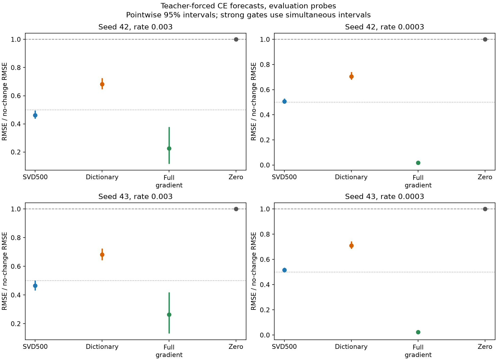
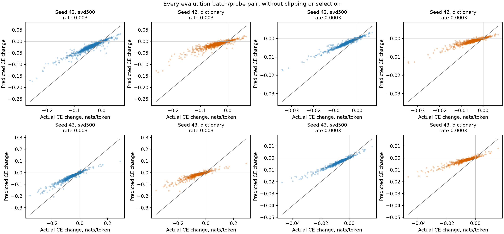
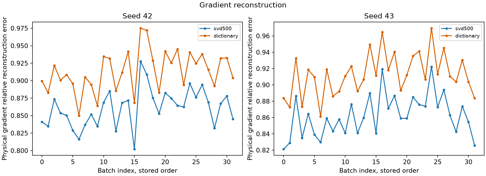

Comparative finding: SVD reduced prospective reference-loss forecast RMSE by about 32% versus the sparse dictionary in both seeds. At the primary step .003, nRMSE was .462/.466 for SVD versus .683/.682 for the dictionary. Paired dictionary-minus-SVD advantages were .220/.216, with 99.375% marginal Bonferroni intervals [.188,.254]/[.176,.254], clearing the prespecified .10 advantage threshold.
The complete primary success rule still failed. SVD MAE was .0144/.0183 nats per token, above .01, and simultaneous nRMSE upper bounds were .513/.524, above .5. Mean effect sizes remained underestimated. This supports a narrower comparative numerical result, not sufficiently accurate magnitudes or interpretable components.
SVD did not clear all four prespecified primary criteria in both seeds.
We forecast teacher-forced reference completion loss changes on fresh natural prompts, using reused Gemma-3 4B q/v LoRA adapters. The exact training-fitted SVD500 basis and original dictionary were reused. All forecasts were locked before the same 64 full-gradient SGD updates per seed. SVD retains the projected gradient magnitude directly; dictionary coding restores the projected norm after original alpha .1 sparse coding. No fitted scale.
The primary rate is .003. Required bounds: actual RMS at least .01 nats/token, SVD nRMSE at most .5, MAE at most .01, and dictionary-minus-SVD nRMSE at least .10, in both seeds. The .0003 rate is descriptive and cannot rescue failure. We use 1,000 paired batch/probe resamples, shared across methods and rates. Eight primary quantities use 99.375% marginal Bonferroni percentile intervals targeting 95% family coverage. This bootstrap is approximate development uncertainty, not an exact finite-sample guarantee. Undefined draws prevent success. Calibration remains descriptive.
| seed | cleared | signal_inconclusive | failed_quantities | intervals |
|---|---|---|---|---|
| 42 | False | False | ["svd_nrmse", "svd_mae"] | {"actual_rms": {"interval": [0.029755887473539386, 0.05776380912664285], "undefined_replicates": 0, "family_size": 8, "marginal_coverage": 0.99375}, "svd_nrmse": {"interval": [0.4305885945345471, 0.5128788093255752], "undefined_replicates": 0, "family_size": 8, "marginal_coverage": 0.99375}, "svd_mae": {"interval": [0.010993876330497513, 0.018409328764318795], "undefined_replicates": 0, "family_size": 8, "marginal_coverage": 0.99375}, "dictionary_minus_svd_nrmse": {"interval": [0.187933287428755, 0.25372911383164165], "undefined_replicates": 0, "family_size": 8, "marginal_coverage": 0.99375}} |
| 43 | False | False | ["svd_nrmse", "svd_mae"] | {"actual_rms": {"interval": [0.03623134117703217, 0.07810810856588908], "undefined_replicates": 0, "family_size": 8, "marginal_coverage": 0.99375}, "svd_nrmse": {"interval": [0.41695559486361067, 0.5240355122972438], "undefined_replicates": 0, "family_size": 8, "marginal_coverage": 0.99375}, "svd_mae": {"interval": [0.013853595869704808, 0.023964030239867044], "undefined_replicates": 0, "family_size": 8, "marginal_coverage": 0.99375}, "dictionary_minus_svd_nrmse": {"interval": [0.17583380220634096, 0.25387790857363607], "undefined_replicates": 0, "family_size": 8, "marginal_coverage": 0.99375}} |

| seed | rate | method | rmse_nats_per_token | mae_nats_per_token | nrmse_vs_zero | actual_rms_nats_per_token | mean_predicted_change | mean_actual_change | actual_on_predicted_slope_through_origin | error_p90_nats_per_token | error_p95_nats_per_token | worst_absolute_error | direction_agreement | direction_eligible_pairs | total_pairs | predicted_negative_ce_pairs | pointwise |
|---|---|---|---|---|---|---|---|---|---|---|---|---|---|---|---|---|---|
| 42 | 0.003 | svd500 | 0.019333 | 0.014409 | 0.46237 | 0.041812 | -0.016449 | -0.029248 | 1.7501 | 0.029781 | 0.036583 | 0.1093 | 0.98841 | 1984 | 2048 | 0 | {"nrmse": {"interval": [0.4372308940789871, 0.4960005403378838], "undefined_replicates": 0, "family_size": 1, "marginal_coverage": 0.95}, "mae": {"interval": [0.011876465142710813, 0.01735952123127025], "undefined_replicates": 0, "family_size": 1, "marginal_coverage": 0.95}, "actual_rms": {"interval": [0.03234175296481435, 0.05185411622801873], "undefined_replicates": 0, "family_size": 1, "marginal_coverage": 0.95}} |
| 42 | 0.003 | dictionary | 0.028537 | 0.021975 | 0.6825 | 0.041812 | -0.0089015 | -0.029248 | 2.7518 | 0.043763 | 0.054411 | 0.14189 | 0.98386 | 1921 | 2048 | 0 | {"nrmse": {"interval": [0.6455946066812631, 0.7247617125878372], "undefined_replicates": 0, "family_size": 1, "marginal_coverage": 0.95}, "mae": {"interval": [0.01837431492082902, 0.02633135169620921], "undefined_replicates": 0, "family_size": 1, "marginal_coverage": 0.95}, "actual_rms": {"interval": [0.03234175296481435, 0.05185411622801873], "undefined_replicates": 0, "family_size": 1, "marginal_coverage": 0.95}} |
| 42 | 0.003 | full_gradient | 0.0094356 | 0.0035807 | 0.22567 | 0.041812 | -0.032765 | -0.029248 | 0.87655 | 0.0067771 | 0.011199 | 0.14947 | 0.99303 | 2010 | 2048 | 0 | {"nrmse": {"interval": [0.11613423439716064, 0.3793283331952552], "undefined_replicates": 0, "family_size": 1, "marginal_coverage": 0.95}, "mae": {"interval": [0.0022770268480877863, 0.005467963594702251], "undefined_replicates": 0, "family_size": 1, "marginal_coverage": 0.95}, "actual_rms": {"interval": [0.03234175296481435, 0.05185411622801873], "undefined_replicates": 0, "family_size": 1, "marginal_coverage": 0.95}} |
| 42 | 0.003 | zero | 0.041812 | 0.031367 | 1 | 0.041812 | 0 | -0.029248 | undefined | 0.061794 | 0.079345 | 0.26142 | undefined | 0 | 2048 | 0 | {"nrmse": {"interval": [1.0, 1.0], "undefined_replicates": 0, "family_size": 1, "marginal_coverage": 0.95}, "mae": {"interval": [0.02582169827534244, 0.03793671463135979], "undefined_replicates": 0, "family_size": 1, "marginal_coverage": 0.95}, "actual_rms": {"interval": [0.03234175296481435, 0.05185411622801873], "undefined_replicates": 0, "family_size": 1, "marginal_coverage": 0.95}} |
| 42 | 0.0003 | svd500 | 0.0023483 | 0.0016903 | 0.50556 | 0.0046449 | -0.0016449 | -0.0032438 | 1.9607 | 0.0033535 | 0.0044884 | 0.017362 | 1 | 1343 | 2048 | 0 | {"nrmse": {"interval": [0.4899365081149975, 0.5304435814106992], "undefined_replicates": 0, "family_size": 1, "marginal_coverage": 0.95}, "mae": {"interval": [0.0013957233087596359, 0.0020536417921461075], "undefined_replicates": 0, "family_size": 1, "marginal_coverage": 0.95}, "actual_rms": {"interval": [0.003556887647068261, 0.00583639582996152], "undefined_replicates": 0, "family_size": 1, "marginal_coverage": 0.95}} |
| 42 | 0.0003 | dictionary | 0.003278 | 0.0024599 | 0.70572 | 0.0046449 | -0.00089015 | -0.0032438 | 3.1113 | 0.004862 | 0.0064232 | 0.02156 | 1 | 643 | 2048 | 0 | {"nrmse": {"interval": [0.6792858179908943, 0.7411540337611099], "undefined_replicates": 0, "family_size": 1, "marginal_coverage": 0.95}, "mae": {"interval": [0.0020404969365293265, 0.00296342014297838], "undefined_replicates": 0, "family_size": 1, "marginal_coverage": 0.95}, "actual_rms": {"interval": [0.003556887647068261, 0.00583639582996152], "undefined_replicates": 0, "family_size": 1, "marginal_coverage": 0.95}} |
| 42 | 0.0003 | full_gradient | 8.94e-05 | 3.3371e-05 | 0.019247 | 0.0046449 | -0.0032765 | -0.0032438 | 0.98945 | 6.4217e-05 | 0.00010814 | 0.0015761 | 1 | 1816 | 2048 | 0 | {"nrmse": {"interval": [0.009597729727626068, 0.03364595373731387], "undefined_replicates": 0, "family_size": 1, "marginal_coverage": 0.95}, "mae": {"interval": [2.159991659059543e-05, 5.126366998756004e-05], "undefined_replicates": 0, "family_size": 1, "marginal_coverage": 0.95}, "actual_rms": {"interval": [0.003556887647068261, 0.00583639582996152], "undefined_replicates": 0, "family_size": 1, "marginal_coverage": 0.95}} |
| 42 | 0.0003 | zero | 0.0046449 | 0.0034075 | 1 | 0.0046449 | 0 | -0.0032438 | undefined | 0.0067136 | 0.0089925 | 0.034298 | undefined | 0 | 2048 | 0 | {"nrmse": {"interval": [1.0, 1.0], "undefined_replicates": 0, "family_size": 1, "marginal_coverage": 0.95}, "mae": {"interval": [0.00278163763550765, 0.004149387888537604], "undefined_replicates": 0, "family_size": 1, "marginal_coverage": 0.95}, "actual_rms": {"interval": [0.003556887647068261, 0.00583639582996152], "undefined_replicates": 0, "family_size": 1, "marginal_coverage": 0.95}} |
| 43 | 0.003 | svd500 | 0.025614 | 0.018333 | 0.46636 | 0.054924 | -0.018907 | -0.035496 | 1.7567 | 0.036272 | 0.049339 | 0.19317 | 0.99047 | 1993 | 2048 | 0 | {"nrmse": {"interval": [0.43177626766859206, 0.5020347078121481], "undefined_replicates": 0, "family_size": 1, "marginal_coverage": 0.95}, "mae": {"interval": [0.014861652786056894, 0.02231027097432284], "undefined_replicates": 0, "family_size": 1, "marginal_coverage": 0.95}, "actual_rms": {"interval": [0.041235450152439, 0.0691475028301878], "undefined_replicates": 0, "family_size": 1, "marginal_coverage": 0.95}} |
| 43 | 0.003 | dictionary | 0.037456 | 0.02753 | 0.68197 | 0.054924 | -0.009823 | -0.035496 | 2.7361 | 0.055192 | 0.075833 | 0.20896 | 0.98745 | 1912 | 2048 | 0 | {"nrmse": {"interval": [0.6427213639475688, 0.7253350843799692], "undefined_replicates": 0, "family_size": 1, "marginal_coverage": 0.95}, "mae": {"interval": [0.022496340897027865, 0.03335979519343983], "undefined_replicates": 0, "family_size": 1, "marginal_coverage": 0.95}, "actual_rms": {"interval": [0.041235450152439, 0.0691475028301878], "undefined_replicates": 0, "family_size": 1, "marginal_coverage": 0.95}} |
| 43 | 0.003 | full_gradient | 0.014481 | 0.0048379 | 0.26365 | 0.054924 | -0.040276 | -0.035496 | 0.85292 | 0.010041 | 0.019292 | 0.31181 | 0.99305 | 2013 | 2048 | 0 | {"nrmse": {"interval": [0.13199149886109526, 0.41902226817811444], "undefined_replicates": 0, "family_size": 1, "marginal_coverage": 0.95}, "mae": {"interval": [0.0029333386776424046, 0.007718583123264574], "undefined_replicates": 0, "family_size": 1, "marginal_coverage": 0.95}, "actual_rms": {"interval": [0.041235450152439, 0.0691475028301878], "undefined_replicates": 0, "family_size": 1, "marginal_coverage": 0.95}} |
| 43 | 0.003 | zero | 0.054924 | 0.038381 | 1 | 0.054924 | 0 | -0.035496 | undefined | 0.08021 | 0.10844 | 0.35691 | undefined | 0 | 2048 | 0 | {"nrmse": {"interval": [1.0, 1.0], "undefined_replicates": 0, "family_size": 1, "marginal_coverage": 0.95}, "mae": {"interval": [0.03074433746480736, 0.047552680897570095], "undefined_replicates": 0, "family_size": 1, "marginal_coverage": 0.95}, "actual_rms": {"interval": [0.041235450152439, 0.0691475028301878], "undefined_replicates": 0, "family_size": 1, "marginal_coverage": 0.95}} |
| 43 | 0.0003 | svd500 | 0.0032101 | 0.0021598 | 0.51608 | 0.0062202 | -0.0018907 | -0.0039791 | 2.0112 | 0.004295 | 0.006101 | 0.026848 | 0.99929 | 1401 | 2048 | 0 | {"nrmse": {"interval": [0.4968718128547071, 0.5362468007243465], "undefined_replicates": 0, "family_size": 1, "marginal_coverage": 0.95}, "mae": {"interval": [0.0017283430238538935, 0.0026714358585081363], "undefined_replicates": 0, "family_size": 1, "marginal_coverage": 0.95}, "actual_rms": {"interval": [0.004484583345869556, 0.00804544138876168], "undefined_replicates": 0, "family_size": 1, "marginal_coverage": 0.95}} |
| 43 | 0.0003 | dictionary | 0.0044235 | 0.0030959 | 0.71115 | 0.0062202 | -0.0009823 | -0.0039791 | 3.1501 | 0.0060358 | 0.0085917 | 0.031716 | 0.99841 | 628 | 2048 | 0 | {"nrmse": {"interval": [0.6843541503462206, 0.7439281711620818], "undefined_replicates": 0, "family_size": 1, "marginal_coverage": 0.95}, "mae": {"interval": [0.0024916237888663807, 0.003792102537911713], "undefined_replicates": 0, "family_size": 1, "marginal_coverage": 0.95}, "actual_rms": {"interval": [0.004484583345869556, 0.00804544138876168], "undefined_replicates": 0, "family_size": 1, "marginal_coverage": 0.95}} |
| 43 | 0.0003 | full_gradient | 0.00014211 | 4.9293e-05 | 0.022846 | 0.0062202 | -0.0040276 | -0.0039791 | 0.98623 | 0.00010277 | 0.00020147 | 0.0024367 | 1 | 1806 | 2048 | 0 | {"nrmse": {"interval": [0.012880517749036672, 0.0317389966429861], "undefined_replicates": 0, "family_size": 1, "marginal_coverage": 0.95}, "mae": {"interval": [2.9796235601100844e-05, 7.850844745750075e-05], "undefined_replicates": 0, "family_size": 1, "marginal_coverage": 0.95}, "actual_rms": {"interval": [0.004484583345869556, 0.00804544138876168], "undefined_replicates": 0, "family_size": 1, "marginal_coverage": 0.95}} |
| 43 | 0.0003 | zero | 0.0062202 | 0.0041772 | 1 | 0.0062202 | 0 | -0.0039791 | undefined | 0.0085074 | 0.01202 | 0.047511 | undefined | 0 | 2048 | 0 | {"nrmse": {"interval": [1.0, 1.0], "undefined_replicates": 0, "family_size": 1, "marginal_coverage": 0.95}, "mae": {"interval": [0.0033208755937266686, 0.005239335501573805], "undefined_replicates": 0, "family_size": 1, "marginal_coverage": 0.95}, "actual_rms": {"interval": [0.004484583345869556, 0.00804544138876168], "undefined_replicates": 0, "family_size": 1, "marginal_coverage": 0.95}} |

Positive values favor SVD. All rates and splits retained.
| seed | scope | rate | dictionary_minus_svd_nrmse | pointwise | simultaneous |
|---|---|---|---|---|---|
| 42 | evaluation | 0.003 | 0.22014 | {"interval": [0.19933427807956805, 0.2466786755010602], "undefined_replicates": 0, "family_size": 1, "marginal_coverage": 0.95} | {"interval": [0.187933287428755, 0.25372911383164165], "undefined_replicates": 0, "family_size": 8, "marginal_coverage": 0.99375} |
| 42 | evaluation | 0.0003 | 0.20017 | {"interval": [0.1764773857422889, 0.23073613140044297], "undefined_replicates": 0, "family_size": 1, "marginal_coverage": 0.95} | {"interval": [0.16591956278238557, 0.23883649652116345], "undefined_replicates": 0, "family_size": 8, "marginal_coverage": 0.99375} |
| 42 | calibration | 0.003 | 0.22566 | {"interval": [0.18987433239621146, 0.2513276759652947], "undefined_replicates": 0, "family_size": 1, "marginal_coverage": 0.95} | {"interval": [0.17862226709954981, 0.26045504714052825], "undefined_replicates": 0, "family_size": 8, "marginal_coverage": 0.99375} |
| 42 | calibration | 0.0003 | 0.21724 | {"interval": [0.199100438495849, 0.2421120761534845], "undefined_replicates": 0, "family_size": 1, "marginal_coverage": 0.95} | {"interval": [0.19004670424138123, 0.25045628646897156], "undefined_replicates": 0, "family_size": 8, "marginal_coverage": 0.99375} |
| 43 | evaluation | 0.003 | 0.21561 | {"interval": [0.18737603264576438, 0.24720676277617487], "undefined_replicates": 0, "family_size": 1, "marginal_coverage": 0.95} | {"interval": [0.17583380220634096, 0.25387790857363607], "undefined_replicates": 0, "family_size": 8, "marginal_coverage": 0.99375} |
| 43 | evaluation | 0.0003 | 0.19507 | {"interval": [0.1703425339792406, 0.22553130937387172], "undefined_replicates": 0, "family_size": 1, "marginal_coverage": 0.95} | {"interval": [0.15951358060471194, 0.23528289936642224], "undefined_replicates": 0, "family_size": 8, "marginal_coverage": 0.99375} |
| 43 | calibration | 0.003 | 0.17424 | {"interval": [0.08834260096658533, 0.24759426947048432], "undefined_replicates": 0, "family_size": 1, "marginal_coverage": 0.95} | {"interval": [0.06962644745016207, 0.25567187773890154], "undefined_replicates": 0, "family_size": 8, "marginal_coverage": 0.99375} |
| 43 | calibration | 0.0003 | 0.21264 | {"interval": [0.19250808329841984, 0.2370283058213662], "undefined_replicates": 0, "family_size": 1, "marginal_coverage": 0.95} | {"interval": [0.18446419765260944, 0.2424687909419764], "undefined_replicates": 0, "family_size": 8, "marginal_coverage": 0.99375} |
| seed | rate | method | rmse_nats_per_token | mae_nats_per_token | nrmse_vs_zero | actual_rms_nats_per_token | mean_predicted_change | mean_actual_change | actual_on_predicted_slope_through_origin | error_p90_nats_per_token | error_p95_nats_per_token | worst_absolute_error | direction_agreement | direction_eligible_pairs | total_pairs | predicted_negative_ce_pairs | pointwise |
|---|---|---|---|---|---|---|---|---|---|---|---|---|---|---|---|---|---|
| 42 | 0.003 | svd500 | 0.016083 | 0.013127 | 0.48012 | 0.033498 | -0.01404 | -0.025143 | 1.798 | 0.025249 | 0.03037 | 0.065534 | 0.998 | 501 | 512 | 0 | {"nrmse": {"interval": [0.43757768418292303, 0.5430781146402249], "undefined_replicates": 0, "family_size": 1, "marginal_coverage": 0.95}, "mae": {"interval": [0.009911159142775704, 0.016538978485625983], "undefined_replicates": 0, "family_size": 1, "marginal_coverage": 0.95}, "actual_rms": {"interval": [0.025263397374970433, 0.04129082094194987], "undefined_replicates": 0, "family_size": 1, "marginal_coverage": 0.95}} |
| 42 | 0.003 | dictionary | 0.023642 | 0.019923 | 0.70577 | 0.033498 | -0.007454 | -0.025143 | 2.9466 | 0.038161 | 0.045743 | 0.070427 | 0.99177 | 486 | 512 | 0 | {"nrmse": {"interval": [0.6660800709334761, 0.7565603940651936], "undefined_replicates": 0, "family_size": 1, "marginal_coverage": 0.95}, "mae": {"interval": [0.015297693069386047, 0.02500585203085158], "undefined_replicates": 0, "family_size": 1, "marginal_coverage": 0.95}, "actual_rms": {"interval": [0.025263397374970433, 0.04129082094194987], "undefined_replicates": 0, "family_size": 1, "marginal_coverage": 0.95}} |
| 42 | 0.003 | full_gradient | 0.0058776 | 0.0029391 | 0.17546 | 0.033498 | -0.028 | -0.025143 | 0.91691 | 0.0058563 | 0.0099545 | 0.049644 | 1 | 507 | 512 | 0 | {"nrmse": {"interval": [0.08237392077609075, 0.2573465818623409], "undefined_replicates": 0, "family_size": 1, "marginal_coverage": 0.95}, "mae": {"interval": [0.0016967984357738313, 0.004805686023824784], "undefined_replicates": 0, "family_size": 1, "marginal_coverage": 0.95}, "actual_rms": {"interval": [0.025263397374970433, 0.04129082094194987], "undefined_replicates": 0, "family_size": 1, "marginal_coverage": 0.95}} |
| 42 | 0.003 | zero | 0.033498 | 0.028124 | 1 | 0.033498 | 0 | -0.025143 | undefined | 0.053624 | 0.068322 | 0.10116 | undefined | 0 | 512 | 0 | {"nrmse": {"interval": [1.0, 1.0], "undefined_replicates": 0, "family_size": 1, "marginal_coverage": 0.95}, "mae": {"interval": [0.021506483172743174, 0.0356134533986733], "undefined_replicates": 0, "family_size": 1, "marginal_coverage": 0.95}, "actual_rms": {"interval": [0.025263397374970433, 0.04129082094194987], "undefined_replicates": 0, "family_size": 1, "marginal_coverage": 0.95}} |
| 42 | 0.0003 | svd500 | 0.0017891 | 0.0014773 | 0.49891 | 0.003586 | -0.001404 | -0.0027746 | 1.952 | 0.0026978 | 0.0035497 | 0.006272 | 1 | 339 | 512 | 0 | {"nrmse": {"interval": [0.48120066348304286, 0.5273766401456639], "undefined_replicates": 0, "family_size": 1, "marginal_coverage": 0.95}, "mae": {"interval": [0.0011097465320220386, 0.0018983964765061285], "undefined_replicates": 0, "family_size": 1, "marginal_coverage": 0.95}, "actual_rms": {"interval": [0.0026045410081908874, 0.0046196967723249795], "undefined_replicates": 0, "family_size": 1, "marginal_coverage": 0.95}} |
| 42 | 0.0003 | dictionary | 0.0025682 | 0.0021615 | 0.71615 | 0.003586 | -0.0007454 | -0.0027746 | 3.2213 | 0.0040116 | 0.0051433 | 0.0087585 | 1 | 143 | 512 | 0 | {"nrmse": {"interval": [0.6863594551142909, 0.7592367288160559], "undefined_replicates": 0, "family_size": 1, "marginal_coverage": 0.95}, "mae": {"interval": [0.001629477836458591, 0.00274981709590292], "undefined_replicates": 0, "family_size": 1, "marginal_coverage": 0.95}, "actual_rms": {"interval": [0.0026045410081908874, 0.0046196967723249795], "undefined_replicates": 0, "family_size": 1, "marginal_coverage": 0.95}} |
| 42 | 0.0003 | full_gradient | 4.7967e-05 | 2.6286e-05 | 0.013376 | 0.003586 | -0.0028 | -0.0027746 | 0.99287 | 5.5296e-05 | 8.9128e-05 | 0.00033648 | 1 | 452 | 512 | 0 | {"nrmse": {"interval": [0.007232572495408948, 0.021300469677285803], "undefined_replicates": 0, "family_size": 1, "marginal_coverage": 0.95}, "mae": {"interval": [1.6056282038233314e-05, 4.216198608277743e-05], "undefined_replicates": 0, "family_size": 1, "marginal_coverage": 0.95}, "actual_rms": {"interval": [0.0026045410081908874, 0.0046196967723249795], "undefined_replicates": 0, "family_size": 1, "marginal_coverage": 0.95}} |
| 42 | 0.0003 | zero | 0.003586 | 0.0029815 | 1 | 0.003586 | 0 | -0.0027746 | undefined | 0.0054721 | 0.0071372 | 0.013634 | undefined | 0 | 512 | 0 | {"nrmse": {"interval": [1.0, 1.0], "undefined_replicates": 0, "family_size": 1, "marginal_coverage": 0.95}, "mae": {"interval": [0.0022335303592626587, 0.003833060891338391], "undefined_replicates": 0, "family_size": 1, "marginal_coverage": 0.95}, "actual_rms": {"interval": [0.0026045410081908874, 0.0046196967723249795], "undefined_replicates": 0, "family_size": 1, "marginal_coverage": 0.95}} |
| 43 | 0.003 | svd500 | 0.022614 | 0.016724 | 0.59987 | 0.037699 | -0.014185 | -0.026691 | 1.9611 | 0.028325 | 0.033886 | 0.23588 | 0.98805 | 502 | 512 | 0 | {"nrmse": {"interval": [0.4764586335925054, 0.7601353632878728], "undefined_replicates": 0, "family_size": 1, "marginal_coverage": 0.95}, "mae": {"interval": [0.012716200072527968, 0.021004637766993007], "undefined_replicates": 0, "family_size": 1, "marginal_coverage": 0.95}, "actual_rms": {"interval": [0.028461352242791945, 0.04720622194341793], "undefined_replicates": 0, "family_size": 1, "marginal_coverage": 0.95}} |
| 43 | 0.003 | dictionary | 0.029183 | 0.023721 | 0.77411 | 0.037699 | -0.0070924 | -0.026691 | 3.3572 | 0.039644 | 0.048095 | 0.23693 | 0.97071 | 478 | 512 | 0 | {"nrmse": {"interval": [0.7077543605551506, 0.8504982660599332], "undefined_replicates": 0, "family_size": 1, "marginal_coverage": 0.95}, "mae": {"interval": [0.018630051220266213, 0.028819607365267313], "undefined_replicates": 0, "family_size": 1, "marginal_coverage": 0.95}, "actual_rms": {"interval": [0.028461352242791945, 0.04720622194341793], "undefined_replicates": 0, "family_size": 1, "marginal_coverage": 0.95}} |
| 43 | 0.003 | full_gradient | 0.01488 | 0.0045582 | 0.3947 | 0.037699 | -0.03121 | -0.026691 | 0.92215 | 0.0075673 | 0.015507 | 0.22337 | 0.98622 | 508 | 512 | 0 | {"nrmse": {"interval": [0.06439465545037225, 0.6529366250994306], "undefined_replicates": 0, "family_size": 1, "marginal_coverage": 0.95}, "mae": {"interval": [0.0015909715429190646, 0.009927738239148035], "undefined_replicates": 0, "family_size": 1, "marginal_coverage": 0.95}, "actual_rms": {"interval": [0.028461352242791945, 0.04720622194341793], "undefined_replicates": 0, "family_size": 1, "marginal_coverage": 0.95}} |
| 43 | 0.003 | zero | 0.037699 | 0.031258 | 1 | 0.037699 | 0 | -0.026691 | undefined | 0.055923 | 0.066242 | 0.24796 | undefined | 0 | 512 | 0 | {"nrmse": {"interval": [1.0, 1.0], "undefined_replicates": 0, "family_size": 1, "marginal_coverage": 0.95}, "mae": {"interval": [0.023957997595789492, 0.038635032399906774], "undefined_replicates": 0, "family_size": 1, "marginal_coverage": 0.95}, "actual_rms": {"interval": [0.028461352242791945, 0.04720622194341793], "undefined_replicates": 0, "family_size": 1, "marginal_coverage": 0.95}} |
| 43 | 0.0003 | svd500 | 0.0020072 | 0.0017322 | 0.53672 | 0.0037398 | -0.0014185 | -0.0030756 | 2.099 | 0.0030706 | 0.003697 | 0.0073672 | 1 | 333 | 512 | 0 | {"nrmse": {"interval": [0.5140423217664088, 0.565748834467145], "undefined_replicates": 0, "family_size": 1, "marginal_coverage": 0.95}, "mae": {"interval": [0.0013397087648669734, 0.002121669374528967], "undefined_replicates": 0, "family_size": 1, "marginal_coverage": 0.95}, "actual_rms": {"interval": [0.0028035607692941562, 0.0046050969212291445], "undefined_replicates": 0, "family_size": 1, "marginal_coverage": 0.95}} |
| 43 | 0.0003 | dictionary | 0.0028024 | 0.0024443 | 0.74936 | 0.0037398 | -0.00070924 | -0.0030756 | 3.5763 | 0.0042616 | 0.0049725 | 0.0094703 | 1 | 134 | 512 | 0 | {"nrmse": {"interval": [0.7219367626167634, 0.7871198226759396], "undefined_replicates": 0, "family_size": 1, "marginal_coverage": 0.95}, "mae": {"interval": [0.0018789613863500832, 0.0029747913510698985], "undefined_replicates": 0, "family_size": 1, "marginal_coverage": 0.95}, "actual_rms": {"interval": [0.0028035607692941562, 0.0046050969212291445], "undefined_replicates": 0, "family_size": 1, "marginal_coverage": 0.95}} |
| 43 | 0.0003 | full_gradient | 0.00014007 | 4.6036e-05 | 0.037453 | 0.0037398 | -0.003121 | -0.0030756 | 0.9914 | 7.4556e-05 | 0.00016573 | 0.0018206 | 1 | 459 | 512 | 0 | {"nrmse": {"interval": [0.0059468483686199985, 0.07754134575550813], "undefined_replicates": 0, "family_size": 1, "marginal_coverage": 0.95}, "mae": {"interval": [1.5396550011337042e-05, 9.771423713334869e-05], "undefined_replicates": 0, "family_size": 1, "marginal_coverage": 0.95}, "actual_rms": {"interval": [0.0028035607692941562, 0.0046050969212291445], "undefined_replicates": 0, "family_size": 1, "marginal_coverage": 0.95}} |
| 43 | 0.0003 | zero | 0.0037398 | 0.0032008 | 1 | 0.0037398 | 0 | -0.0030756 | undefined | 0.0056578 | 0.00705 | 0.013858 | undefined | 0 | 512 | 0 | {"nrmse": {"interval": [1.0, 1.0], "undefined_replicates": 0, "family_size": 1, "marginal_coverage": 0.95}, "mae": {"interval": [0.002425903253242723, 0.004002864191352273], "undefined_replicates": 0, "family_size": 1, "marginal_coverage": 0.95}, "actual_rms": {"interval": [0.0028035607692941562, 0.0046050969212291445], "undefined_replicates": 0, "family_size": 1, "marginal_coverage": 0.95}} |

All 500 components are retained in the numeric export. The component table covers every component, method, rate, split and seed. Named candidates are the previously frozen training-only descriptions. Signed shares can exceed one or be undefined through cancellation. Their presence does not validate a compact interpretable explanation. Full contribution arrays remain in the audited compact archives; coefficients, profiles and summaries are provided below.
| seed | worker_seconds | peak_gpu_gb |
|---|---|---|
| 42 | 685.84 | 21.843 |
| 43 | 343.73 | 21.893 |
No fitting was performed and no efficiency comparison is claimed.
First eight batches and first eight evaluation probes, every method and rate. Text excerpts capped at 500 characters; complete reference inputs preserved in exports.
| batch | rate | method | probe_id | prompt_excerpt | reference_excerpt | actual_change | predicted_change | absolute_error |
|---|---|---|---|---|---|---|---|---|
| 0 | 0.003 | svd500 | alpaca-07372 | Describe a specific security risk that could occur in an online system. | A security risk that could occur in an online system is the risk of data theft or compromise. This could come in the form of hackers breaching the system by exploiting weaknesses in the security protocols, leading to the theft and unauthorised use of confidential information, or data being obtained through malicious software like malware or spyware. Additionally, unencrypted data that is stored on servers can be exposed to unintentional disclosure which could lead to serious damage if the data t | -0.038152 | -0.021185 | 0.016967 |
| 0 | 0.003 | svd500 | alpaca-32279 | Read the following sentence and provide the correct verb tense for the underlined phrase. He will has been working for two hours. He will has been working | He has been working for two hours. | -0.097234 | -0.061902 | 0.035332 |
| 0 | 0.003 | svd500 | alpaca-39744 | Edit the text such that the sentiment expressed in the text is positive. No matter what I do, I just can't get it right. | No matter what I do, I can learn and eventually get it right. | -0.029033 | -0.011867 | 0.017166 |
| 0 | 0.003 | svd500 | alpaca-51791 | Given a sample of financial data, calculate the total monthly expenses. Housing: $1,500, Food: $600, Transportation: $250, Entertainment: $400 | The total monthly expenses are $2,650. | -0.016192 | -0.012016 | 0.0041766 |
| 0 | 0.003 | svd500 | alpaca-47281 | Generate the animal that is the symbol of a given country Australia | The animal that is the symbol of Australia is the kangaroo. | -0.039886 | -0.023068 | 0.016819 |
| 0 | 0.003 | svd500 | alpaca-40797 | Create a possible dialog between two friends. | Friend 1: Hey! How's it going? Friend 2: Pretty good. How about you? Friend 1: Great! So what have you been up to lately? Friend 2: I've been doing some online shopping and I just bought a new dress. Friend 1: That sounds amazing! You'll have to show me the dress when you get it. Friend 2: Definitely. So what about you? Any new plans? Friend 1: Actually, I was thinking about booking a beach vacation. Friend 2: That sounds like a great idea. You should definitely do it! | -0.03713 | -0.024822 | 0.012308 |
| 0 | 0.003 | svd500 | alpaca-01609 | Explain the concept of multi-label classification. | Multi-label classification is a supervised learning technique where a single output example can belong to more than one class. This technique is useful for tasks that involve assigning multiple labels to an input example. For example, a task may require predicting all labels that describe the contents of an image such as, “sports”, “outdoors”, “indoors”. Such tasks can be solved by multi-label classification models which are made up of multiple classifiers that each handle one label. The input e | -0.029392 | -0.017904 | 0.011487 |
| 0 | 0.003 | svd500 | alpaca-39403 | Identify the parts of speech in this sentence: "The dog barked at the postman". | "The" is an article, "dog" is a noun, "barked" is a verb, "at" is a preposition, and "postman" is a noun. | -0.0069433 | -0.0030527 | 0.0038906 |
| 0 | 0.003 | dictionary | alpaca-07372 | Describe a specific security risk that could occur in an online system. | A security risk that could occur in an online system is the risk of data theft or compromise. This could come in the form of hackers breaching the system by exploiting weaknesses in the security protocols, leading to the theft and unauthorised use of confidential information, or data being obtained through malicious software like malware or spyware. Additionally, unencrypted data that is stored on servers can be exposed to unintentional disclosure which could lead to serious damage if the data t | -0.038152 | -0.011677 | 0.026475 |
| 0 | 0.003 | dictionary | alpaca-32279 | Read the following sentence and provide the correct verb tense for the underlined phrase. He will has been working for two hours. He will has been working | He has been working for two hours. | -0.097234 | -0.039672 | 0.057562 |
| 0 | 0.003 | dictionary | alpaca-39744 | Edit the text such that the sentiment expressed in the text is positive. No matter what I do, I just can't get it right. | No matter what I do, I can learn and eventually get it right. | -0.029033 | -0.0039052 | 0.025128 |
| 0 | 0.003 | dictionary | alpaca-51791 | Given a sample of financial data, calculate the total monthly expenses. Housing: $1,500, Food: $600, Transportation: $250, Entertainment: $400 | The total monthly expenses are $2,650. | -0.016192 | -0.006635 | 0.0095572 |
| 0 | 0.003 | dictionary | alpaca-47281 | Generate the animal that is the symbol of a given country Australia | The animal that is the symbol of Australia is the kangaroo. | -0.039886 | -0.010521 | 0.029365 |
| 0 | 0.003 | dictionary | alpaca-40797 | Create a possible dialog between two friends. | Friend 1: Hey! How's it going? Friend 2: Pretty good. How about you? Friend 1: Great! So what have you been up to lately? Friend 2: I've been doing some online shopping and I just bought a new dress. Friend 1: That sounds amazing! You'll have to show me the dress when you get it. Friend 2: Definitely. So what about you? Any new plans? Friend 1: Actually, I was thinking about booking a beach vacation. Friend 2: That sounds like a great idea. You should definitely do it! | -0.03713 | -0.015824 | 0.021306 |
| 0 | 0.003 | dictionary | alpaca-01609 | Explain the concept of multi-label classification. | Multi-label classification is a supervised learning technique where a single output example can belong to more than one class. This technique is useful for tasks that involve assigning multiple labels to an input example. For example, a task may require predicting all labels that describe the contents of an image such as, “sports”, “outdoors”, “indoors”. Such tasks can be solved by multi-label classification models which are made up of multiple classifiers that each handle one label. The input e | -0.029392 | -0.010272 | 0.019119 |
| 0 | 0.003 | dictionary | alpaca-39403 | Identify the parts of speech in this sentence: "The dog barked at the postman". | "The" is an article, "dog" is a noun, "barked" is a verb, "at" is a preposition, and "postman" is a noun. | -0.0069433 | -0.0015983 | 0.005345 |
| 0 | 0.003 | full_gradient | alpaca-07372 | Describe a specific security risk that could occur in an online system. | A security risk that could occur in an online system is the risk of data theft or compromise. This could come in the form of hackers breaching the system by exploiting weaknesses in the security protocols, leading to the theft and unauthorised use of confidential information, or data being obtained through malicious software like malware or spyware. Additionally, unencrypted data that is stored on servers can be exposed to unintentional disclosure which could lead to serious damage if the data t | -0.038152 | -0.040528 | 0.0023764 |
| 0 | 0.003 | full_gradient | alpaca-32279 | Read the following sentence and provide the correct verb tense for the underlined phrase. He will has been working for two hours. He will has been working | He has been working for two hours. | -0.097234 | -0.11328 | 0.016042 |
| 0 | 0.003 | full_gradient | alpaca-39744 | Edit the text such that the sentiment expressed in the text is positive. No matter what I do, I just can't get it right. | No matter what I do, I can learn and eventually get it right. | -0.029033 | -0.030458 | 0.0014246 |
| 0 | 0.003 | full_gradient | alpaca-51791 | Given a sample of financial data, calculate the total monthly expenses. Housing: $1,500, Food: $600, Transportation: $250, Entertainment: $400 | The total monthly expenses are $2,650. | -0.016192 | -0.02142 | 0.0052275 |
| 0 | 0.003 | full_gradient | alpaca-47281 | Generate the animal that is the symbol of a given country Australia | The animal that is the symbol of Australia is the kangaroo. | -0.039886 | -0.041763 | 0.0018764 |
| 0 | 0.003 | full_gradient | alpaca-40797 | Create a possible dialog between two friends. | Friend 1: Hey! How's it going? Friend 2: Pretty good. How about you? Friend 1: Great! So what have you been up to lately? Friend 2: I've been doing some online shopping and I just bought a new dress. Friend 1: That sounds amazing! You'll have to show me the dress when you get it. Friend 2: Definitely. So what about you? Any new plans? Friend 1: Actually, I was thinking about booking a beach vacation. Friend 2: That sounds like a great idea. You should definitely do it! | -0.03713 | -0.04269 | 0.0055601 |
| 0 | 0.003 | full_gradient | alpaca-01609 | Explain the concept of multi-label classification. | Multi-label classification is a supervised learning technique where a single output example can belong to more than one class. This technique is useful for tasks that involve assigning multiple labels to an input example. For example, a task may require predicting all labels that describe the contents of an image such as, “sports”, “outdoors”, “indoors”. Such tasks can be solved by multi-label classification models which are made up of multiple classifiers that each handle one label. The input e | -0.029392 | -0.033241 | 0.0038495 |
| 0 | 0.003 | full_gradient | alpaca-39403 | Identify the parts of speech in this sentence: "The dog barked at the postman". | "The" is an article, "dog" is a noun, "barked" is a verb, "at" is a preposition, and "postman" is a noun. | -0.0069433 | -0.0070536 | 0.0001103 |
| 0 | 0.003 | zero | alpaca-07372 | Describe a specific security risk that could occur in an online system. | A security risk that could occur in an online system is the risk of data theft or compromise. This could come in the form of hackers breaching the system by exploiting weaknesses in the security protocols, leading to the theft and unauthorised use of confidential information, or data being obtained through malicious software like malware or spyware. Additionally, unencrypted data that is stored on servers can be exposed to unintentional disclosure which could lead to serious damage if the data t | -0.038152 | -0 | 0.038152 |
| 0 | 0.003 | zero | alpaca-32279 | Read the following sentence and provide the correct verb tense for the underlined phrase. He will has been working for two hours. He will has been working | He has been working for two hours. | -0.097234 | -0 | 0.097234 |
| 0 | 0.003 | zero | alpaca-39744 | Edit the text such that the sentiment expressed in the text is positive. No matter what I do, I just can't get it right. | No matter what I do, I can learn and eventually get it right. | -0.029033 | -0 | 0.029033 |
| 0 | 0.003 | zero | alpaca-51791 | Given a sample of financial data, calculate the total monthly expenses. Housing: $1,500, Food: $600, Transportation: $250, Entertainment: $400 | The total monthly expenses are $2,650. | -0.016192 | -0 | 0.016192 |
| 0 | 0.003 | zero | alpaca-47281 | Generate the animal that is the symbol of a given country Australia | The animal that is the symbol of Australia is the kangaroo. | -0.039886 | -0 | 0.039886 |
| 0 | 0.003 | zero | alpaca-40797 | Create a possible dialog between two friends. | Friend 1: Hey! How's it going? Friend 2: Pretty good. How about you? Friend 1: Great! So what have you been up to lately? Friend 2: I've been doing some online shopping and I just bought a new dress. Friend 1: That sounds amazing! You'll have to show me the dress when you get it. Friend 2: Definitely. So what about you? Any new plans? Friend 1: Actually, I was thinking about booking a beach vacation. Friend 2: That sounds like a great idea. You should definitely do it! | -0.03713 | -0 | 0.03713 |
| 0 | 0.003 | zero | alpaca-01609 | Explain the concept of multi-label classification. | Multi-label classification is a supervised learning technique where a single output example can belong to more than one class. This technique is useful for tasks that involve assigning multiple labels to an input example. For example, a task may require predicting all labels that describe the contents of an image such as, “sports”, “outdoors”, “indoors”. Such tasks can be solved by multi-label classification models which are made up of multiple classifiers that each handle one label. The input e | -0.029392 | -0 | 0.029392 |
| 0 | 0.003 | zero | alpaca-39403 | Identify the parts of speech in this sentence: "The dog barked at the postman". | "The" is an article, "dog" is a noun, "barked" is a verb, "at" is a preposition, and "postman" is a noun. | -0.0069433 | -0 | 0.0069433 |
| 0 | 0.0003 | svd500 | alpaca-07372 | Describe a specific security risk that could occur in an online system. | A security risk that could occur in an online system is the risk of data theft or compromise. This could come in the form of hackers breaching the system by exploiting weaknesses in the security protocols, leading to the theft and unauthorised use of confidential information, or data being obtained through malicious software like malware or spyware. Additionally, unencrypted data that is stored on servers can be exposed to unintentional disclosure which could lead to serious damage if the data t | -0.0040338 | -0.0021185 | 0.0019153 |
| 0 | 0.0003 | svd500 | alpaca-32279 | Read the following sentence and provide the correct verb tense for the underlined phrase. He will has been working for two hours. He will has been working | He has been working for two hours. | -0.011199 | -0.0061902 | 0.0050093 |
| 0 | 0.0003 | svd500 | alpaca-39744 | Edit the text such that the sentiment expressed in the text is positive. No matter what I do, I just can't get it right. | No matter what I do, I can learn and eventually get it right. | -0.0030345 | -0.0011867 | 0.0018478 |
| 0 | 0.0003 | svd500 | alpaca-51791 | Given a sample of financial data, calculate the total monthly expenses. Housing: $1,500, Food: $600, Transportation: $250, Entertainment: $400 | The total monthly expenses are $2,650. | -0.0020938 | -0.0012016 | 0.00089223 |
| 0 | 0.0003 | svd500 | alpaca-47281 | Generate the animal that is the symbol of a given country Australia | The animal that is the symbol of Australia is the kangaroo. | -0.0041572 | -0.0023068 | 0.0018504 |
| 0 | 0.0003 | svd500 | alpaca-40797 | Create a possible dialog between two friends. | Friend 1: Hey! How's it going? Friend 2: Pretty good. How about you? Friend 1: Great! So what have you been up to lately? Friend 2: I've been doing some online shopping and I just bought a new dress. Friend 1: That sounds amazing! You'll have to show me the dress when you get it. Friend 2: Definitely. So what about you? Any new plans? Friend 1: Actually, I was thinking about booking a beach vacation. Friend 2: That sounds like a great idea. You should definitely do it! | -0.004212 | -0.0024822 | 0.0017298 |
| 0 | 0.0003 | svd500 | alpaca-01609 | Explain the concept of multi-label classification. | Multi-label classification is a supervised learning technique where a single output example can belong to more than one class. This technique is useful for tasks that involve assigning multiple labels to an input example. For example, a task may require predicting all labels that describe the contents of an image such as, “sports”, “outdoors”, “indoors”. Such tasks can be solved by multi-label classification models which are made up of multiple classifiers that each handle one label. The input e | -0.0032866 | -0.0017904 | 0.0014962 |
| 0 | 0.0003 | svd500 | alpaca-39403 | Identify the parts of speech in this sentence: "The dog barked at the postman". | "The" is an article, "dog" is a noun, "barked" is a verb, "at" is a preposition, and "postman" is a noun. | -0.00070271 | -0.00030527 | 0.00039743 |
| 0 | 0.0003 | dictionary | alpaca-07372 | Describe a specific security risk that could occur in an online system. | A security risk that could occur in an online system is the risk of data theft or compromise. This could come in the form of hackers breaching the system by exploiting weaknesses in the security protocols, leading to the theft and unauthorised use of confidential information, or data being obtained through malicious software like malware or spyware. Additionally, unencrypted data that is stored on servers can be exposed to unintentional disclosure which could lead to serious damage if the data t | -0.0040338 | -0.0011677 | 0.0028661 |
| 0 | 0.0003 | dictionary | alpaca-32279 | Read the following sentence and provide the correct verb tense for the underlined phrase. He will has been working for two hours. He will has been working | He has been working for two hours. | -0.011199 | -0.0039672 | 0.0072322 |
| 0 | 0.0003 | dictionary | alpaca-39744 | Edit the text such that the sentiment expressed in the text is positive. No matter what I do, I just can't get it right. | No matter what I do, I can learn and eventually get it right. | -0.0030345 | -0.00039052 | 0.002644 |
| 0 | 0.0003 | dictionary | alpaca-51791 | Given a sample of financial data, calculate the total monthly expenses. Housing: $1,500, Food: $600, Transportation: $250, Entertainment: $400 | The total monthly expenses are $2,650. | -0.0020938 | -0.0006635 | 0.0014303 |
| 0 | 0.0003 | dictionary | alpaca-47281 | Generate the animal that is the symbol of a given country Australia | The animal that is the symbol of Australia is the kangaroo. | -0.0041572 | -0.0010521 | 0.0031051 |
| 0 | 0.0003 | dictionary | alpaca-40797 | Create a possible dialog between two friends. | Friend 1: Hey! How's it going? Friend 2: Pretty good. How about you? Friend 1: Great! So what have you been up to lately? Friend 2: I've been doing some online shopping and I just bought a new dress. Friend 1: That sounds amazing! You'll have to show me the dress when you get it. Friend 2: Definitely. So what about you? Any new plans? Friend 1: Actually, I was thinking about booking a beach vacation. Friend 2: That sounds like a great idea. You should definitely do it! | -0.004212 | -0.0015824 | 0.0026296 |
| 0 | 0.0003 | dictionary | alpaca-01609 | Explain the concept of multi-label classification. | Multi-label classification is a supervised learning technique where a single output example can belong to more than one class. This technique is useful for tasks that involve assigning multiple labels to an input example. For example, a task may require predicting all labels that describe the contents of an image such as, “sports”, “outdoors”, “indoors”. Such tasks can be solved by multi-label classification models which are made up of multiple classifiers that each handle one label. The input e | -0.0032866 | -0.0010272 | 0.0022594 |
| 0 | 0.0003 | dictionary | alpaca-39403 | Identify the parts of speech in this sentence: "The dog barked at the postman". | "The" is an article, "dog" is a noun, "barked" is a verb, "at" is a preposition, and "postman" is a noun. | -0.00070271 | -0.00015983 | 0.00054287 |
| 0 | 0.0003 | full_gradient | alpaca-07372 | Describe a specific security risk that could occur in an online system. | A security risk that could occur in an online system is the risk of data theft or compromise. This could come in the form of hackers breaching the system by exploiting weaknesses in the security protocols, leading to the theft and unauthorised use of confidential information, or data being obtained through malicious software like malware or spyware. Additionally, unencrypted data that is stored on servers can be exposed to unintentional disclosure which could lead to serious damage if the data t | -0.0040338 | -0.0040528 | 1.9037e-05 |
| 0 | 0.0003 | full_gradient | alpaca-32279 | Read the following sentence and provide the correct verb tense for the underlined phrase. He will has been working for two hours. He will has been working | He has been working for two hours. | -0.011199 | -0.011328 | 0.00012809 |
| 0 | 0.0003 | full_gradient | alpaca-39744 | Edit the text such that the sentiment expressed in the text is positive. No matter what I do, I just can't get it right. | No matter what I do, I can learn and eventually get it right. | -0.0030345 | -0.0030458 | 1.1302e-05 |
| 0 | 0.0003 | full_gradient | alpaca-51791 | Given a sample of financial data, calculate the total monthly expenses. Housing: $1,500, Food: $600, Transportation: $250, Entertainment: $400 | The total monthly expenses are $2,650. | -0.0020938 | -0.002142 | 4.8179e-05 |
| 0 | 0.0003 | full_gradient | alpaca-47281 | Generate the animal that is the symbol of a given country Australia | The animal that is the symbol of Australia is the kangaroo. | -0.0041572 | -0.0041763 | 1.9082e-05 |
| 0 | 0.0003 | full_gradient | alpaca-40797 | Create a possible dialog between two friends. | Friend 1: Hey! How's it going? Friend 2: Pretty good. How about you? Friend 1: Great! So what have you been up to lately? Friend 2: I've been doing some online shopping and I just bought a new dress. Friend 1: That sounds amazing! You'll have to show me the dress when you get it. Friend 2: Definitely. So what about you? Any new plans? Friend 1: Actually, I was thinking about booking a beach vacation. Friend 2: That sounds like a great idea. You should definitely do it! | -0.004212 | -0.004269 | 5.7028e-05 |
| 0 | 0.0003 | full_gradient | alpaca-01609 | Explain the concept of multi-label classification. | Multi-label classification is a supervised learning technique where a single output example can belong to more than one class. This technique is useful for tasks that involve assigning multiple labels to an input example. For example, a task may require predicting all labels that describe the contents of an image such as, “sports”, “outdoors”, “indoors”. Such tasks can be solved by multi-label classification models which are made up of multiple classifiers that each handle one label. The input e | -0.0032866 | -0.0033241 | 3.7507e-05 |
| 0 | 0.0003 | full_gradient | alpaca-39403 | Identify the parts of speech in this sentence: "The dog barked at the postman". | "The" is an article, "dog" is a noun, "barked" is a verb, "at" is a preposition, and "postman" is a noun. | -0.00070271 | -0.00070536 | 2.653e-06 |
| 0 | 0.0003 | zero | alpaca-07372 | Describe a specific security risk that could occur in an online system. | A security risk that could occur in an online system is the risk of data theft or compromise. This could come in the form of hackers breaching the system by exploiting weaknesses in the security protocols, leading to the theft and unauthorised use of confidential information, or data being obtained through malicious software like malware or spyware. Additionally, unencrypted data that is stored on servers can be exposed to unintentional disclosure which could lead to serious damage if the data t | -0.0040338 | -0 | 0.0040338 |
| 0 | 0.0003 | zero | alpaca-32279 | Read the following sentence and provide the correct verb tense for the underlined phrase. He will has been working for two hours. He will has been working | He has been working for two hours. | -0.011199 | -0 | 0.011199 |
| 0 | 0.0003 | zero | alpaca-39744 | Edit the text such that the sentiment expressed in the text is positive. No matter what I do, I just can't get it right. | No matter what I do, I can learn and eventually get it right. | -0.0030345 | -0 | 0.0030345 |
| 0 | 0.0003 | zero | alpaca-51791 | Given a sample of financial data, calculate the total monthly expenses. Housing: $1,500, Food: $600, Transportation: $250, Entertainment: $400 | The total monthly expenses are $2,650. | -0.0020938 | -0 | 0.0020938 |
| 0 | 0.0003 | zero | alpaca-47281 | Generate the animal that is the symbol of a given country Australia | The animal that is the symbol of Australia is the kangaroo. | -0.0041572 | -0 | 0.0041572 |
| 0 | 0.0003 | zero | alpaca-40797 | Create a possible dialog between two friends. | Friend 1: Hey! How's it going? Friend 2: Pretty good. How about you? Friend 1: Great! So what have you been up to lately? Friend 2: I've been doing some online shopping and I just bought a new dress. Friend 1: That sounds amazing! You'll have to show me the dress when you get it. Friend 2: Definitely. So what about you? Any new plans? Friend 1: Actually, I was thinking about booking a beach vacation. Friend 2: That sounds like a great idea. You should definitely do it! | -0.004212 | -0 | 0.004212 |
| 0 | 0.0003 | zero | alpaca-01609 | Explain the concept of multi-label classification. | Multi-label classification is a supervised learning technique where a single output example can belong to more than one class. This technique is useful for tasks that involve assigning multiple labels to an input example. For example, a task may require predicting all labels that describe the contents of an image such as, “sports”, “outdoors”, “indoors”. Such tasks can be solved by multi-label classification models which are made up of multiple classifiers that each handle one label. The input e | -0.0032866 | -0 | 0.0032866 |
| 0 | 0.0003 | zero | alpaca-39403 | Identify the parts of speech in this sentence: "The dog barked at the postman". | "The" is an article, "dog" is a noun, "barked" is a verb, "at" is a preposition, and "postman" is a noun. | -0.00070271 | -0 | 0.00070271 |
| 1 | 0.003 | svd500 | alpaca-07372 | Describe a specific security risk that could occur in an online system. | A security risk that could occur in an online system is the risk of data theft or compromise. This could come in the form of hackers breaching the system by exploiting weaknesses in the security protocols, leading to the theft and unauthorised use of confidential information, or data being obtained through malicious software like malware or spyware. Additionally, unencrypted data that is stored on servers can be exposed to unintentional disclosure which could lead to serious damage if the data t | -0.033667 | -0.019615 | 0.014052 |
| 1 | 0.003 | svd500 | alpaca-32279 | Read the following sentence and provide the correct verb tense for the underlined phrase. He will has been working for two hours. He will has been working | He has been working for two hours. | -0.089918 | -0.059078 | 0.03084 |
| 1 | 0.003 | svd500 | alpaca-39744 | Edit the text such that the sentiment expressed in the text is positive. No matter what I do, I just can't get it right. | No matter what I do, I can learn and eventually get it right. | -0.018162 | -0.0089779 | 0.0091841 |
| 1 | 0.003 | svd500 | alpaca-51791 | Given a sample of financial data, calculate the total monthly expenses. Housing: $1,500, Food: $600, Transportation: $250, Entertainment: $400 | The total monthly expenses are $2,650. | -0.01615 | -0.013211 | 0.0029393 |
| 1 | 0.003 | svd500 | alpaca-47281 | Generate the animal that is the symbol of a given country Australia | The animal that is the symbol of Australia is the kangaroo. | -0.04054 | -0.022493 | 0.018047 |
| 1 | 0.003 | svd500 | alpaca-40797 | Create a possible dialog between two friends. | Friend 1: Hey! How's it going? Friend 2: Pretty good. How about you? Friend 1: Great! So what have you been up to lately? Friend 2: I've been doing some online shopping and I just bought a new dress. Friend 1: That sounds amazing! You'll have to show me the dress when you get it. Friend 2: Definitely. So what about you? Any new plans? Friend 1: Actually, I was thinking about booking a beach vacation. Friend 2: That sounds like a great idea. You should definitely do it! | -0.034679 | -0.02291 | 0.011769 |
| 1 | 0.003 | svd500 | alpaca-01609 | Explain the concept of multi-label classification. | Multi-label classification is a supervised learning technique where a single output example can belong to more than one class. This technique is useful for tasks that involve assigning multiple labels to an input example. For example, a task may require predicting all labels that describe the contents of an image such as, “sports”, “outdoors”, “indoors”. Such tasks can be solved by multi-label classification models which are made up of multiple classifiers that each handle one label. The input e | -0.025514 | -0.016492 | 0.0090224 |
| 1 | 0.003 | svd500 | alpaca-39403 | Identify the parts of speech in this sentence: "The dog barked at the postman". | "The" is an article, "dog" is a noun, "barked" is a verb, "at" is a preposition, and "postman" is a noun. | -0.0062554 | -0.0026404 | 0.003615 |
| 1 | 0.003 | dictionary | alpaca-07372 | Describe a specific security risk that could occur in an online system. | A security risk that could occur in an online system is the risk of data theft or compromise. This could come in the form of hackers breaching the system by exploiting weaknesses in the security protocols, leading to the theft and unauthorised use of confidential information, or data being obtained through malicious software like malware or spyware. Additionally, unencrypted data that is stored on servers can be exposed to unintentional disclosure which could lead to serious damage if the data t | -0.033667 | -0.011816 | 0.021851 |
| 1 | 0.003 | dictionary | alpaca-32279 | Read the following sentence and provide the correct verb tense for the underlined phrase. He will has been working for two hours. He will has been working | He has been working for two hours. | -0.089918 | -0.038437 | 0.051481 |
| 1 | 0.003 | dictionary | alpaca-39744 | Edit the text such that the sentiment expressed in the text is positive. No matter what I do, I just can't get it right. | No matter what I do, I can learn and eventually get it right. | -0.018162 | -0.0033805 | 0.014782 |
| 1 | 0.003 | dictionary | alpaca-51791 | Given a sample of financial data, calculate the total monthly expenses. Housing: $1,500, Food: $600, Transportation: $250, Entertainment: $400 | The total monthly expenses are $2,650. | -0.01615 | -0.0078385 | 0.0083117 |
| 1 | 0.003 | dictionary | alpaca-47281 | Generate the animal that is the symbol of a given country Australia | The animal that is the symbol of Australia is the kangaroo. | -0.04054 | -0.013223 | 0.027317 |
| 1 | 0.003 | dictionary | alpaca-40797 | Create a possible dialog between two friends. | Friend 1: Hey! How's it going? Friend 2: Pretty good. How about you? Friend 1: Great! So what have you been up to lately? Friend 2: I've been doing some online shopping and I just bought a new dress. Friend 1: That sounds amazing! You'll have to show me the dress when you get it. Friend 2: Definitely. So what about you? Any new plans? Friend 1: Actually, I was thinking about booking a beach vacation. Friend 2: That sounds like a great idea. You should definitely do it! | -0.034679 | -0.015195 | 0.019484 |
| 1 | 0.003 | dictionary | alpaca-01609 | Explain the concept of multi-label classification. | Multi-label classification is a supervised learning technique where a single output example can belong to more than one class. This technique is useful for tasks that involve assigning multiple labels to an input example. For example, a task may require predicting all labels that describe the contents of an image such as, “sports”, “outdoors”, “indoors”. Such tasks can be solved by multi-label classification models which are made up of multiple classifiers that each handle one label. The input e | -0.025514 | -0.0098597 | 0.015654 |
| 1 | 0.003 | dictionary | alpaca-39403 | Identify the parts of speech in this sentence: "The dog barked at the postman". | "The" is an article, "dog" is a noun, "barked" is a verb, "at" is a preposition, and "postman" is a noun. | -0.0062554 | -0.002013 | 0.0042424 |
| 1 | 0.003 | full_gradient | alpaca-07372 | Describe a specific security risk that could occur in an online system. | A security risk that could occur in an online system is the risk of data theft or compromise. This could come in the form of hackers breaching the system by exploiting weaknesses in the security protocols, leading to the theft and unauthorised use of confidential information, or data being obtained through malicious software like malware or spyware. Additionally, unencrypted data that is stored on servers can be exposed to unintentional disclosure which could lead to serious damage if the data t | -0.033667 | -0.036406 | 0.0027393 |
| 1 | 0.003 | full_gradient | alpaca-32279 | Read the following sentence and provide the correct verb tense for the underlined phrase. He will has been working for two hours. He will has been working | He has been working for two hours. | -0.089918 | -0.11339 | 0.023473 |
| 1 | 0.003 | full_gradient | alpaca-39744 | Edit the text such that the sentiment expressed in the text is positive. No matter what I do, I just can't get it right. | No matter what I do, I can learn and eventually get it right. | -0.018162 | -0.019518 | 0.001356 |
| 1 | 0.003 | full_gradient | alpaca-51791 | Given a sample of financial data, calculate the total monthly expenses. Housing: $1,500, Food: $600, Transportation: $250, Entertainment: $400 | The total monthly expenses are $2,650. | -0.01615 | -0.022818 | 0.0066674 |
| 1 | 0.003 | full_gradient | alpaca-47281 | Generate the animal that is the symbol of a given country Australia | The animal that is the symbol of Australia is the kangaroo. | -0.04054 | -0.043181 | 0.0026414 |
| 1 | 0.003 | full_gradient | alpaca-40797 | Create a possible dialog between two friends. | Friend 1: Hey! How's it going? Friend 2: Pretty good. How about you? Friend 1: Great! So what have you been up to lately? Friend 2: I've been doing some online shopping and I just bought a new dress. Friend 1: That sounds amazing! You'll have to show me the dress when you get it. Friend 2: Definitely. So what about you? Any new plans? Friend 1: Actually, I was thinking about booking a beach vacation. Friend 2: That sounds like a great idea. You should definitely do it! | -0.034679 | -0.040068 | 0.0053889 |
| 1 | 0.003 | full_gradient | alpaca-01609 | Explain the concept of multi-label classification. | Multi-label classification is a supervised learning technique where a single output example can belong to more than one class. This technique is useful for tasks that involve assigning multiple labels to an input example. For example, a task may require predicting all labels that describe the contents of an image such as, “sports”, “outdoors”, “indoors”. Such tasks can be solved by multi-label classification models which are made up of multiple classifiers that each handle one label. The input e | -0.025514 | -0.029338 | 0.003824 |
| 1 | 0.003 | full_gradient | alpaca-39403 | Identify the parts of speech in this sentence: "The dog barked at the postman". | "The" is an article, "dog" is a noun, "barked" is a verb, "at" is a preposition, and "postman" is a noun. | -0.0062554 | -0.0067503 | 0.00049481 |
| 1 | 0.003 | zero | alpaca-07372 | Describe a specific security risk that could occur in an online system. | A security risk that could occur in an online system is the risk of data theft or compromise. This could come in the form of hackers breaching the system by exploiting weaknesses in the security protocols, leading to the theft and unauthorised use of confidential information, or data being obtained through malicious software like malware or spyware. Additionally, unencrypted data that is stored on servers can be exposed to unintentional disclosure which could lead to serious damage if the data t | -0.033667 | -0 | 0.033667 |
| 1 | 0.003 | zero | alpaca-32279 | Read the following sentence and provide the correct verb tense for the underlined phrase. He will has been working for two hours. He will has been working | He has been working for two hours. | -0.089918 | -0 | 0.089918 |
| 1 | 0.003 | zero | alpaca-39744 | Edit the text such that the sentiment expressed in the text is positive. No matter what I do, I just can't get it right. | No matter what I do, I can learn and eventually get it right. | -0.018162 | -0 | 0.018162 |
| 1 | 0.003 | zero | alpaca-51791 | Given a sample of financial data, calculate the total monthly expenses. Housing: $1,500, Food: $600, Transportation: $250, Entertainment: $400 | The total monthly expenses are $2,650. | -0.01615 | -0 | 0.01615 |
| 1 | 0.003 | zero | alpaca-47281 | Generate the animal that is the symbol of a given country Australia | The animal that is the symbol of Australia is the kangaroo. | -0.04054 | -0 | 0.04054 |
| 1 | 0.003 | zero | alpaca-40797 | Create a possible dialog between two friends. | Friend 1: Hey! How's it going? Friend 2: Pretty good. How about you? Friend 1: Great! So what have you been up to lately? Friend 2: I've been doing some online shopping and I just bought a new dress. Friend 1: That sounds amazing! You'll have to show me the dress when you get it. Friend 2: Definitely. So what about you? Any new plans? Friend 1: Actually, I was thinking about booking a beach vacation. Friend 2: That sounds like a great idea. You should definitely do it! | -0.034679 | -0 | 0.034679 |
| 1 | 0.003 | zero | alpaca-01609 | Explain the concept of multi-label classification. | Multi-label classification is a supervised learning technique where a single output example can belong to more than one class. This technique is useful for tasks that involve assigning multiple labels to an input example. For example, a task may require predicting all labels that describe the contents of an image such as, “sports”, “outdoors”, “indoors”. Such tasks can be solved by multi-label classification models which are made up of multiple classifiers that each handle one label. The input e | -0.025514 | -0 | 0.025514 |
| 1 | 0.003 | zero | alpaca-39403 | Identify the parts of speech in this sentence: "The dog barked at the postman". | "The" is an article, "dog" is a noun, "barked" is a verb, "at" is a preposition, and "postman" is a noun. | -0.0062554 | -0 | 0.0062554 |
| 1 | 0.0003 | svd500 | alpaca-07372 | Describe a specific security risk that could occur in an online system. | A security risk that could occur in an online system is the risk of data theft or compromise. This could come in the form of hackers breaching the system by exploiting weaknesses in the security protocols, leading to the theft and unauthorised use of confidential information, or data being obtained through malicious software like malware or spyware. Additionally, unencrypted data that is stored on servers can be exposed to unintentional disclosure which could lead to serious damage if the data t | -0.0036154 | -0.0019615 | 0.0016538 |
| 1 | 0.0003 | svd500 | alpaca-32279 | Read the following sentence and provide the correct verb tense for the underlined phrase. He will has been working for two hours. He will has been working | He has been working for two hours. | -0.011133 | -0.0059078 | 0.0052256 |
| 1 | 0.0003 | svd500 | alpaca-39744 | Edit the text such that the sentiment expressed in the text is positive. No matter what I do, I just can't get it right. | No matter what I do, I can learn and eventually get it right. | -0.0019428 | -0.00089779 | 0.001045 |
| 1 | 0.0003 | svd500 | alpaca-51791 | Given a sample of financial data, calculate the total monthly expenses. Housing: $1,500, Food: $600, Transportation: $250, Entertainment: $400 | The total monthly expenses are $2,650. | -0.0022243 | -0.0013211 | 0.00090323 |
| 1 | 0.0003 | svd500 | alpaca-47281 | Generate the animal that is the symbol of a given country Australia | The animal that is the symbol of Australia is the kangaroo. | -0.0042938 | -0.0022493 | 0.0020445 |
| 1 | 0.0003 | svd500 | alpaca-40797 | Create a possible dialog between two friends. | Friend 1: Hey! How's it going? Friend 2: Pretty good. How about you? Friend 1: Great! So what have you been up to lately? Friend 2: I've been doing some online shopping and I just bought a new dress. Friend 1: That sounds amazing! You'll have to show me the dress when you get it. Friend 2: Definitely. So what about you? Any new plans? Friend 1: Actually, I was thinking about booking a beach vacation. Friend 2: That sounds like a great idea. You should definitely do it! | -0.0039493 | -0.002291 | 0.0016583 |
| 1 | 0.0003 | svd500 | alpaca-01609 | Explain the concept of multi-label classification. | Multi-label classification is a supervised learning technique where a single output example can belong to more than one class. This technique is useful for tasks that involve assigning multiple labels to an input example. For example, a task may require predicting all labels that describe the contents of an image such as, “sports”, “outdoors”, “indoors”. Such tasks can be solved by multi-label classification models which are made up of multiple classifiers that each handle one label. The input e | -0.0028954 | -0.0016492 | 0.0012462 |
| 1 | 0.0003 | svd500 | alpaca-39403 | Identify the parts of speech in this sentence: "The dog barked at the postman". | "The" is an article, "dog" is a noun, "barked" is a verb, "at" is a preposition, and "postman" is a noun. | -0.00066817 | -0.00026404 | 0.00040412 |
| 1 | 0.0003 | dictionary | alpaca-07372 | Describe a specific security risk that could occur in an online system. | A security risk that could occur in an online system is the risk of data theft or compromise. This could come in the form of hackers breaching the system by exploiting weaknesses in the security protocols, leading to the theft and unauthorised use of confidential information, or data being obtained through malicious software like malware or spyware. Additionally, unencrypted data that is stored on servers can be exposed to unintentional disclosure which could lead to serious damage if the data t | -0.0036154 | -0.0011816 | 0.0024337 |
| 1 | 0.0003 | dictionary | alpaca-32279 | Read the following sentence and provide the correct verb tense for the underlined phrase. He will has been working for two hours. He will has been working | He has been working for two hours. | -0.011133 | -0.0038437 | 0.0072896 |
| 1 | 0.0003 | dictionary | alpaca-39744 | Edit the text such that the sentiment expressed in the text is positive. No matter what I do, I just can't get it right. | No matter what I do, I can learn and eventually get it right. | -0.0019428 | -0.00033805 | 0.0016047 |
| 1 | 0.0003 | dictionary | alpaca-51791 | Given a sample of financial data, calculate the total monthly expenses. Housing: $1,500, Food: $600, Transportation: $250, Entertainment: $400 | The total monthly expenses are $2,650. | -0.0022243 | -0.00078385 | 0.0014405 |
| 1 | 0.0003 | dictionary | alpaca-47281 | Generate the animal that is the symbol of a given country Australia | The animal that is the symbol of Australia is the kangaroo. | -0.0042938 | -0.0013223 | 0.0029715 |
| 1 | 0.0003 | dictionary | alpaca-40797 | Create a possible dialog between two friends. | Friend 1: Hey! How's it going? Friend 2: Pretty good. How about you? Friend 1: Great! So what have you been up to lately? Friend 2: I've been doing some online shopping and I just bought a new dress. Friend 1: That sounds amazing! You'll have to show me the dress when you get it. Friend 2: Definitely. So what about you? Any new plans? Friend 1: Actually, I was thinking about booking a beach vacation. Friend 2: That sounds like a great idea. You should definitely do it! | -0.0039493 | -0.0015195 | 0.0024298 |
| 1 | 0.0003 | dictionary | alpaca-01609 | Explain the concept of multi-label classification. | Multi-label classification is a supervised learning technique where a single output example can belong to more than one class. This technique is useful for tasks that involve assigning multiple labels to an input example. For example, a task may require predicting all labels that describe the contents of an image such as, “sports”, “outdoors”, “indoors”. Such tasks can be solved by multi-label classification models which are made up of multiple classifiers that each handle one label. The input e | -0.0028954 | -0.00098597 | 0.0019094 |
| 1 | 0.0003 | dictionary | alpaca-39403 | Identify the parts of speech in this sentence: "The dog barked at the postman". | "The" is an article, "dog" is a noun, "barked" is a verb, "at" is a preposition, and "postman" is a noun. | -0.00066817 | -0.0002013 | 0.00046686 |
| 1 | 0.0003 | full_gradient | alpaca-07372 | Describe a specific security risk that could occur in an online system. | A security risk that could occur in an online system is the risk of data theft or compromise. This could come in the form of hackers breaching the system by exploiting weaknesses in the security protocols, leading to the theft and unauthorised use of confidential information, or data being obtained through malicious software like malware or spyware. Additionally, unencrypted data that is stored on servers can be exposed to unintentional disclosure which could lead to serious damage if the data t | -0.0036154 | -0.0036406 | 2.5233e-05 |
| 1 | 0.0003 | full_gradient | alpaca-32279 | Read the following sentence and provide the correct verb tense for the underlined phrase. He will has been working for two hours. He will has been working | He has been working for two hours. | -0.011133 | -0.011339 | 0.00020575 |
| 1 | 0.0003 | full_gradient | alpaca-39744 | Edit the text such that the sentiment expressed in the text is positive. No matter what I do, I just can't get it right. | No matter what I do, I can learn and eventually get it right. | -0.0019428 | -0.0019518 | 9.046e-06 |
| 1 | 0.0003 | full_gradient | alpaca-51791 | Given a sample of financial data, calculate the total monthly expenses. Housing: $1,500, Food: $600, Transportation: $250, Entertainment: $400 | The total monthly expenses are $2,650. | -0.0022243 | -0.0022818 | 5.7437e-05 |
| 1 | 0.0003 | full_gradient | alpaca-47281 | Generate the animal that is the symbol of a given country Australia | The animal that is the symbol of Australia is the kangaroo. | -0.0042938 | -0.0043181 | 2.4293e-05 |
| 1 | 0.0003 | full_gradient | alpaca-40797 | Create a possible dialog between two friends. | Friend 1: Hey! How's it going? Friend 2: Pretty good. How about you? Friend 1: Great! So what have you been up to lately? Friend 2: I've been doing some online shopping and I just bought a new dress. Friend 1: That sounds amazing! You'll have to show me the dress when you get it. Friend 2: Definitely. So what about you? Any new plans? Friend 1: Actually, I was thinking about booking a beach vacation. Friend 2: That sounds like a great idea. You should definitely do it! | -0.0039493 | -0.0040068 | 5.7478e-05 |
| 1 | 0.0003 | full_gradient | alpaca-01609 | Explain the concept of multi-label classification. | Multi-label classification is a supervised learning technique where a single output example can belong to more than one class. This technique is useful for tasks that involve assigning multiple labels to an input example. For example, a task may require predicting all labels that describe the contents of an image such as, “sports”, “outdoors”, “indoors”. Such tasks can be solved by multi-label classification models which are made up of multiple classifiers that each handle one label. The input e | -0.0028954 | -0.0029338 | 3.8434e-05 |
| 1 | 0.0003 | full_gradient | alpaca-39403 | Identify the parts of speech in this sentence: "The dog barked at the postman". | "The" is an article, "dog" is a noun, "barked" is a verb, "at" is a preposition, and "postman" is a noun. | -0.00066817 | -0.00067503 | 6.8574e-06 |
| 1 | 0.0003 | zero | alpaca-07372 | Describe a specific security risk that could occur in an online system. | A security risk that could occur in an online system is the risk of data theft or compromise. This could come in the form of hackers breaching the system by exploiting weaknesses in the security protocols, leading to the theft and unauthorised use of confidential information, or data being obtained through malicious software like malware or spyware. Additionally, unencrypted data that is stored on servers can be exposed to unintentional disclosure which could lead to serious damage if the data t | -0.0036154 | -0 | 0.0036154 |
| 1 | 0.0003 | zero | alpaca-32279 | Read the following sentence and provide the correct verb tense for the underlined phrase. He will has been working for two hours. He will has been working | He has been working for two hours. | -0.011133 | -0 | 0.011133 |
| 1 | 0.0003 | zero | alpaca-39744 | Edit the text such that the sentiment expressed in the text is positive. No matter what I do, I just can't get it right. | No matter what I do, I can learn and eventually get it right. | -0.0019428 | -0 | 0.0019428 |
| 1 | 0.0003 | zero | alpaca-51791 | Given a sample of financial data, calculate the total monthly expenses. Housing: $1,500, Food: $600, Transportation: $250, Entertainment: $400 | The total monthly expenses are $2,650. | -0.0022243 | -0 | 0.0022243 |
| 1 | 0.0003 | zero | alpaca-47281 | Generate the animal that is the symbol of a given country Australia | The animal that is the symbol of Australia is the kangaroo. | -0.0042938 | -0 | 0.0042938 |
| 1 | 0.0003 | zero | alpaca-40797 | Create a possible dialog between two friends. | Friend 1: Hey! How's it going? Friend 2: Pretty good. How about you? Friend 1: Great! So what have you been up to lately? Friend 2: I've been doing some online shopping and I just bought a new dress. Friend 1: That sounds amazing! You'll have to show me the dress when you get it. Friend 2: Definitely. So what about you? Any new plans? Friend 1: Actually, I was thinking about booking a beach vacation. Friend 2: That sounds like a great idea. You should definitely do it! | -0.0039493 | -0 | 0.0039493 |
| 1 | 0.0003 | zero | alpaca-01609 | Explain the concept of multi-label classification. | Multi-label classification is a supervised learning technique where a single output example can belong to more than one class. This technique is useful for tasks that involve assigning multiple labels to an input example. For example, a task may require predicting all labels that describe the contents of an image such as, “sports”, “outdoors”, “indoors”. Such tasks can be solved by multi-label classification models which are made up of multiple classifiers that each handle one label. The input e | -0.0028954 | -0 | 0.0028954 |
| 1 | 0.0003 | zero | alpaca-39403 | Identify the parts of speech in this sentence: "The dog barked at the postman". | "The" is an article, "dog" is a noun, "barked" is a verb, "at" is a preposition, and "postman" is a noun. | -0.00066817 | -0 | 0.00066817 |
| 2 | 0.003 | svd500 | alpaca-07372 | Describe a specific security risk that could occur in an online system. | A security risk that could occur in an online system is the risk of data theft or compromise. This could come in the form of hackers breaching the system by exploiting weaknesses in the security protocols, leading to the theft and unauthorised use of confidential information, or data being obtained through malicious software like malware or spyware. Additionally, unencrypted data that is stored on servers can be exposed to unintentional disclosure which could lead to serious damage if the data t | -0.011096 | -0.002567 | 0.0085285 |
| 2 | 0.003 | svd500 | alpaca-32279 | Read the following sentence and provide the correct verb tense for the underlined phrase. He will has been working for two hours. He will has been working | He has been working for two hours. | 0.014717 | 0.01208 | 0.0026375 |
| 2 | 0.003 | svd500 | alpaca-39744 | Edit the text such that the sentiment expressed in the text is positive. No matter what I do, I just can't get it right. | No matter what I do, I can learn and eventually get it right. | -0.023378 | -0.012525 | 0.010853 |
| 2 | 0.003 | svd500 | alpaca-51791 | Given a sample of financial data, calculate the total monthly expenses. Housing: $1,500, Food: $600, Transportation: $250, Entertainment: $400 | The total monthly expenses are $2,650. | -0.023791 | -0.013836 | 0.0099555 |
| 2 | 0.003 | svd500 | alpaca-47281 | Generate the animal that is the symbol of a given country Australia | The animal that is the symbol of Australia is the kangaroo. | -0.041268 | -0.01989 | 0.021377 |
| 2 | 0.003 | svd500 | alpaca-40797 | Create a possible dialog between two friends. | Friend 1: Hey! How's it going? Friend 2: Pretty good. How about you? Friend 1: Great! So what have you been up to lately? Friend 2: I've been doing some online shopping and I just bought a new dress. Friend 1: That sounds amazing! You'll have to show me the dress when you get it. Friend 2: Definitely. So what about you? Any new plans? Friend 1: Actually, I was thinking about booking a beach vacation. Friend 2: That sounds like a great idea. You should definitely do it! | 0.011079 | 0.0070624 | 0.0040165 |
| 2 | 0.003 | svd500 | alpaca-01609 | Explain the concept of multi-label classification. | Multi-label classification is a supervised learning technique where a single output example can belong to more than one class. This technique is useful for tasks that involve assigning multiple labels to an input example. For example, a task may require predicting all labels that describe the contents of an image such as, “sports”, “outdoors”, “indoors”. Such tasks can be solved by multi-label classification models which are made up of multiple classifiers that each handle one label. The input e | -0.0072718 | -0.0025037 | 0.0047681 |
| 2 | 0.003 | svd500 | alpaca-39403 | Identify the parts of speech in this sentence: "The dog barked at the postman". | "The" is an article, "dog" is a noun, "barked" is a verb, "at" is a preposition, and "postman" is a noun. | -0.006277 | -0.0028443 | 0.0034327 |
| 2 | 0.003 | dictionary | alpaca-07372 | Describe a specific security risk that could occur in an online system. | A security risk that could occur in an online system is the risk of data theft or compromise. This could come in the form of hackers breaching the system by exploiting weaknesses in the security protocols, leading to the theft and unauthorised use of confidential information, or data being obtained through malicious software like malware or spyware. Additionally, unencrypted data that is stored on servers can be exposed to unintentional disclosure which could lead to serious damage if the data t | -0.011096 | 0.00049499 | 0.011591 |
| 2 | 0.003 | dictionary | alpaca-32279 | Read the following sentence and provide the correct verb tense for the underlined phrase. He will has been working for two hours. He will has been working | He has been working for two hours. | 0.014717 | 0.014038 | 0.00067953 |
| 2 | 0.003 | dictionary | alpaca-39744 | Edit the text such that the sentiment expressed in the text is positive. No matter what I do, I just can't get it right. | No matter what I do, I can learn and eventually get it right. | -0.023378 | -0.005478 | 0.0179 |
| 2 | 0.003 | dictionary | alpaca-51791 | Given a sample of financial data, calculate the total monthly expenses. Housing: $1,500, Food: $600, Transportation: $250, Entertainment: $400 | The total monthly expenses are $2,650. | -0.023791 | -0.0057845 | 0.018007 |
| 2 | 0.003 | dictionary | alpaca-47281 | Generate the animal that is the symbol of a given country Australia | The animal that is the symbol of Australia is the kangaroo. | -0.041268 | -0.0097593 | 0.031509 |
| 2 | 0.003 | dictionary | alpaca-40797 | Create a possible dialog between two friends. | Friend 1: Hey! How's it going? Friend 2: Pretty good. How about you? Friend 1: Great! So what have you been up to lately? Friend 2: I've been doing some online shopping and I just bought a new dress. Friend 1: That sounds amazing! You'll have to show me the dress when you get it. Friend 2: Definitely. So what about you? Any new plans? Friend 1: Actually, I was thinking about booking a beach vacation. Friend 2: That sounds like a great idea. You should definitely do it! | 0.011079 | 0.0051529 | 0.0059261 |
| 2 | 0.003 | dictionary | alpaca-01609 | Explain the concept of multi-label classification. | Multi-label classification is a supervised learning technique where a single output example can belong to more than one class. This technique is useful for tasks that involve assigning multiple labels to an input example. For example, a task may require predicting all labels that describe the contents of an image such as, “sports”, “outdoors”, “indoors”. Such tasks can be solved by multi-label classification models which are made up of multiple classifiers that each handle one label. The input e | -0.0072718 | 0.00017541 | 0.0074472 |
| 2 | 0.003 | dictionary | alpaca-39403 | Identify the parts of speech in this sentence: "The dog barked at the postman". | "The" is an article, "dog" is a noun, "barked" is a verb, "at" is a preposition, and "postman" is a noun. | -0.006277 | -0.00096566 | 0.0053113 |
| 2 | 0.003 | full_gradient | alpaca-07372 | Describe a specific security risk that could occur in an online system. | A security risk that could occur in an online system is the risk of data theft or compromise. This could come in the form of hackers breaching the system by exploiting weaknesses in the security protocols, leading to the theft and unauthorised use of confidential information, or data being obtained through malicious software like malware or spyware. Additionally, unencrypted data that is stored on servers can be exposed to unintentional disclosure which could lead to serious damage if the data t | -0.011096 | -0.011008 | 8.7283e-05 |
| 2 | 0.003 | full_gradient | alpaca-32279 | Read the following sentence and provide the correct verb tense for the underlined phrase. He will has been working for two hours. He will has been working | He has been working for two hours. | 0.014717 | 0.014788 | 7.0387e-05 |
| 2 | 0.003 | full_gradient | alpaca-39744 | Edit the text such that the sentiment expressed in the text is positive. No matter what I do, I just can't get it right. | No matter what I do, I can learn and eventually get it right. | -0.023378 | -0.024478 | 0.0010994 |
| 2 | 0.003 | full_gradient | alpaca-51791 | Given a sample of financial data, calculate the total monthly expenses. Housing: $1,500, Food: $600, Transportation: $250, Entertainment: $400 | The total monthly expenses are $2,650. | -0.023791 | -0.026456 | 0.0026641 |
| 2 | 0.003 | full_gradient | alpaca-47281 | Generate the animal that is the symbol of a given country Australia | The animal that is the symbol of Australia is the kangaroo. | -0.041268 | -0.042253 | 0.00098523 |
| 2 | 0.003 | full_gradient | alpaca-40797 | Create a possible dialog between two friends. | Friend 1: Hey! How's it going? Friend 2: Pretty good. How about you? Friend 1: Great! So what have you been up to lately? Friend 2: I've been doing some online shopping and I just bought a new dress. Friend 1: That sounds amazing! You'll have to show me the dress when you get it. Friend 2: Definitely. So what about you? Any new plans? Friend 1: Actually, I was thinking about booking a beach vacation. Friend 2: That sounds like a great idea. You should definitely do it! | 0.011079 | 0.010964 | 0.00011533 |
| 2 | 0.003 | full_gradient | alpaca-01609 | Explain the concept of multi-label classification. | Multi-label classification is a supervised learning technique where a single output example can belong to more than one class. This technique is useful for tasks that involve assigning multiple labels to an input example. For example, a task may require predicting all labels that describe the contents of an image such as, “sports”, “outdoors”, “indoors”. Such tasks can be solved by multi-label classification models which are made up of multiple classifiers that each handle one label. The input e | -0.0072718 | -0.0072343 | 3.746e-05 |
| 2 | 0.003 | full_gradient | alpaca-39403 | Identify the parts of speech in this sentence: "The dog barked at the postman". | "The" is an article, "dog" is a noun, "barked" is a verb, "at" is a preposition, and "postman" is a noun. | -0.006277 | -0.006206 | 7.0994e-05 |
| 2 | 0.003 | zero | alpaca-07372 | Describe a specific security risk that could occur in an online system. | A security risk that could occur in an online system is the risk of data theft or compromise. This could come in the form of hackers breaching the system by exploiting weaknesses in the security protocols, leading to the theft and unauthorised use of confidential information, or data being obtained through malicious software like malware or spyware. Additionally, unencrypted data that is stored on servers can be exposed to unintentional disclosure which could lead to serious damage if the data t | -0.011096 | -0 | 0.011096 |
| 2 | 0.003 | zero | alpaca-32279 | Read the following sentence and provide the correct verb tense for the underlined phrase. He will has been working for two hours. He will has been working | He has been working for two hours. | 0.014717 | -0 | 0.014717 |
| 2 | 0.003 | zero | alpaca-39744 | Edit the text such that the sentiment expressed in the text is positive. No matter what I do, I just can't get it right. | No matter what I do, I can learn and eventually get it right. | -0.023378 | -0 | 0.023378 |
| 2 | 0.003 | zero | alpaca-51791 | Given a sample of financial data, calculate the total monthly expenses. Housing: $1,500, Food: $600, Transportation: $250, Entertainment: $400 | The total monthly expenses are $2,650. | -0.023791 | -0 | 0.023791 |
| 2 | 0.003 | zero | alpaca-47281 | Generate the animal that is the symbol of a given country Australia | The animal that is the symbol of Australia is the kangaroo. | -0.041268 | -0 | 0.041268 |
| 2 | 0.003 | zero | alpaca-40797 | Create a possible dialog between two friends. | Friend 1: Hey! How's it going? Friend 2: Pretty good. How about you? Friend 1: Great! So what have you been up to lately? Friend 2: I've been doing some online shopping and I just bought a new dress. Friend 1: That sounds amazing! You'll have to show me the dress when you get it. Friend 2: Definitely. So what about you? Any new plans? Friend 1: Actually, I was thinking about booking a beach vacation. Friend 2: That sounds like a great idea. You should definitely do it! | 0.011079 | -0 | 0.011079 |
| 2 | 0.003 | zero | alpaca-01609 | Explain the concept of multi-label classification. | Multi-label classification is a supervised learning technique where a single output example can belong to more than one class. This technique is useful for tasks that involve assigning multiple labels to an input example. For example, a task may require predicting all labels that describe the contents of an image such as, “sports”, “outdoors”, “indoors”. Such tasks can be solved by multi-label classification models which are made up of multiple classifiers that each handle one label. The input e | -0.0072718 | -0 | 0.0072718 |
| 2 | 0.003 | zero | alpaca-39403 | Identify the parts of speech in this sentence: "The dog barked at the postman". | "The" is an article, "dog" is a noun, "barked" is a verb, "at" is a preposition, and "postman" is a noun. | -0.006277 | -0 | 0.006277 |
| 2 | 0.0003 | svd500 | alpaca-07372 | Describe a specific security risk that could occur in an online system. | A security risk that could occur in an online system is the risk of data theft or compromise. This could come in the form of hackers breaching the system by exploiting weaknesses in the security protocols, leading to the theft and unauthorised use of confidential information, or data being obtained through malicious software like malware or spyware. Additionally, unencrypted data that is stored on servers can be exposed to unintentional disclosure which could lead to serious damage if the data t | -0.0011013 | -0.0002567 | 0.00084455 |
| 2 | 0.0003 | svd500 | alpaca-32279 | Read the following sentence and provide the correct verb tense for the underlined phrase. He will has been working for two hours. He will has been working | He has been working for two hours. | 0.0014884 | 0.001208 | 0.00028047 |
| 2 | 0.0003 | svd500 | alpaca-39744 | Edit the text such that the sentiment expressed in the text is positive. No matter what I do, I just can't get it right. | No matter what I do, I can learn and eventually get it right. | -0.0024381 | -0.0012525 | 0.0011855 |
| 2 | 0.0003 | svd500 | alpaca-51791 | Given a sample of financial data, calculate the total monthly expenses. Housing: $1,500, Food: $600, Transportation: $250, Entertainment: $400 | The total monthly expenses are $2,650. | -0.0026096 | -0.0013836 | 0.001226 |
| 2 | 0.0003 | svd500 | alpaca-47281 | Generate the animal that is the symbol of a given country Australia | The animal that is the symbol of Australia is the kangaroo. | -0.0042101 | -0.001989 | 0.0022211 |
| 2 | 0.0003 | svd500 | alpaca-40797 | Create a possible dialog between two friends. | Friend 1: Hey! How's it going? Friend 2: Pretty good. How about you? Friend 1: Great! So what have you been up to lately? Friend 2: I've been doing some online shopping and I just bought a new dress. Friend 1: That sounds amazing! You'll have to show me the dress when you get it. Friend 2: Definitely. So what about you? Any new plans? Friend 1: Actually, I was thinking about booking a beach vacation. Friend 2: That sounds like a great idea. You should definitely do it! | 0.0011005 | 0.00070624 | 0.0003943 |
| 2 | 0.0003 | svd500 | alpaca-01609 | Explain the concept of multi-label classification. | Multi-label classification is a supervised learning technique where a single output example can belong to more than one class. This technique is useful for tasks that involve assigning multiple labels to an input example. For example, a task may require predicting all labels that describe the contents of an image such as, “sports”, “outdoors”, “indoors”. Such tasks can be solved by multi-label classification models which are made up of multiple classifiers that each handle one label. The input e | -0.00072312 | -0.00025037 | 0.00047276 |
| 2 | 0.0003 | svd500 | alpaca-39403 | Identify the parts of speech in this sentence: "The dog barked at the postman". | "The" is an article, "dog" is a noun, "barked" is a verb, "at" is a preposition, and "postman" is a noun. | -0.00062251 | -0.00028443 | 0.00033808 |
| 2 | 0.0003 | dictionary | alpaca-07372 | Describe a specific security risk that could occur in an online system. | A security risk that could occur in an online system is the risk of data theft or compromise. This could come in the form of hackers breaching the system by exploiting weaknesses in the security protocols, leading to the theft and unauthorised use of confidential information, or data being obtained through malicious software like malware or spyware. Additionally, unencrypted data that is stored on servers can be exposed to unintentional disclosure which could lead to serious damage if the data t | -0.0011013 | 4.9499e-05 | 0.0011508 |
| 2 | 0.0003 | dictionary | alpaca-32279 | Read the following sentence and provide the correct verb tense for the underlined phrase. He will has been working for two hours. He will has been working | He has been working for two hours. | 0.0014884 | 0.0014038 | 8.4666e-05 |
| 2 | 0.0003 | dictionary | alpaca-39744 | Edit the text such that the sentiment expressed in the text is positive. No matter what I do, I just can't get it right. | No matter what I do, I can learn and eventually get it right. | -0.0024381 | -0.0005478 | 0.0018903 |
| 2 | 0.0003 | dictionary | alpaca-51791 | Given a sample of financial data, calculate the total monthly expenses. Housing: $1,500, Food: $600, Transportation: $250, Entertainment: $400 | The total monthly expenses are $2,650. | -0.0026096 | -0.00057845 | 0.0020312 |
| 2 | 0.0003 | dictionary | alpaca-47281 | Generate the animal that is the symbol of a given country Australia | The animal that is the symbol of Australia is the kangaroo. | -0.0042101 | -0.00097593 | 0.0032342 |
| 2 | 0.0003 | dictionary | alpaca-40797 | Create a possible dialog between two friends. | Friend 1: Hey! How's it going? Friend 2: Pretty good. How about you? Friend 1: Great! So what have you been up to lately? Friend 2: I've been doing some online shopping and I just bought a new dress. Friend 1: That sounds amazing! You'll have to show me the dress when you get it. Friend 2: Definitely. So what about you? Any new plans? Friend 1: Actually, I was thinking about booking a beach vacation. Friend 2: That sounds like a great idea. You should definitely do it! | 0.0011005 | 0.00051529 | 0.00058525 |
| 2 | 0.0003 | dictionary | alpaca-01609 | Explain the concept of multi-label classification. | Multi-label classification is a supervised learning technique where a single output example can belong to more than one class. This technique is useful for tasks that involve assigning multiple labels to an input example. For example, a task may require predicting all labels that describe the contents of an image such as, “sports”, “outdoors”, “indoors”. Such tasks can be solved by multi-label classification models which are made up of multiple classifiers that each handle one label. The input e | -0.00072312 | 1.7541e-05 | 0.00074066 |
| 2 | 0.0003 | dictionary | alpaca-39403 | Identify the parts of speech in this sentence: "The dog barked at the postman". | "The" is an article, "dog" is a noun, "barked" is a verb, "at" is a preposition, and "postman" is a noun. | -0.00062251 | -9.6566e-05 | 0.00052594 |
| 2 | 0.0003 | full_gradient | alpaca-07372 | Describe a specific security risk that could occur in an online system. | A security risk that could occur in an online system is the risk of data theft or compromise. This could come in the form of hackers breaching the system by exploiting weaknesses in the security protocols, leading to the theft and unauthorised use of confidential information, or data being obtained through malicious software like malware or spyware. Additionally, unencrypted data that is stored on servers can be exposed to unintentional disclosure which could lead to serious damage if the data t | -0.0011013 | -0.0011008 | 4.3137e-07 |
| 2 | 0.0003 | full_gradient | alpaca-32279 | Read the following sentence and provide the correct verb tense for the underlined phrase. He will has been working for two hours. He will has been working | He has been working for two hours. | 0.0014884 | 0.0014788 | 9.6744e-06 |
| 2 | 0.0003 | full_gradient | alpaca-39744 | Edit the text such that the sentiment expressed in the text is positive. No matter what I do, I just can't get it right. | No matter what I do, I can learn and eventually get it right. | -0.0024381 | -0.0024478 | 9.7199e-06 |
| 2 | 0.0003 | full_gradient | alpaca-51791 | Given a sample of financial data, calculate the total monthly expenses. Housing: $1,500, Food: $600, Transportation: $250, Entertainment: $400 | The total monthly expenses are $2,650. | -0.0026096 | -0.0026456 | 3.5942e-05 |
| 2 | 0.0003 | full_gradient | alpaca-47281 | Generate the animal that is the symbol of a given country Australia | The animal that is the symbol of Australia is the kangaroo. | -0.0042101 | -0.0042253 | 1.5196e-05 |
| 2 | 0.0003 | full_gradient | alpaca-40797 | Create a possible dialog between two friends. | Friend 1: Hey! How's it going? Friend 2: Pretty good. How about you? Friend 1: Great! So what have you been up to lately? Friend 2: I've been doing some online shopping and I just bought a new dress. Friend 1: That sounds amazing! You'll have to show me the dress when you get it. Friend 2: Definitely. So what about you? Any new plans? Friend 1: Actually, I was thinking about booking a beach vacation. Friend 2: That sounds like a great idea. You should definitely do it! | 0.0011005 | 0.0010964 | 4.1776e-06 |
| 2 | 0.0003 | full_gradient | alpaca-01609 | Explain the concept of multi-label classification. | Multi-label classification is a supervised learning technique where a single output example can belong to more than one class. This technique is useful for tasks that involve assigning multiple labels to an input example. For example, a task may require predicting all labels that describe the contents of an image such as, “sports”, “outdoors”, “indoors”. Such tasks can be solved by multi-label classification models which are made up of multiple classifiers that each handle one label. The input e | -0.00072312 | -0.00072343 | 3.0711e-07 |
| 2 | 0.0003 | full_gradient | alpaca-39403 | Identify the parts of speech in this sentence: "The dog barked at the postman". | "The" is an article, "dog" is a noun, "barked" is a verb, "at" is a preposition, and "postman" is a noun. | -0.00062251 | -0.0006206 | 1.9108e-06 |
| 2 | 0.0003 | zero | alpaca-07372 | Describe a specific security risk that could occur in an online system. | A security risk that could occur in an online system is the risk of data theft or compromise. This could come in the form of hackers breaching the system by exploiting weaknesses in the security protocols, leading to the theft and unauthorised use of confidential information, or data being obtained through malicious software like malware or spyware. Additionally, unencrypted data that is stored on servers can be exposed to unintentional disclosure which could lead to serious damage if the data t | -0.0011013 | -0 | 0.0011013 |
| 2 | 0.0003 | zero | alpaca-32279 | Read the following sentence and provide the correct verb tense for the underlined phrase. He will has been working for two hours. He will has been working | He has been working for two hours. | 0.0014884 | -0 | 0.0014884 |
| 2 | 0.0003 | zero | alpaca-39744 | Edit the text such that the sentiment expressed in the text is positive. No matter what I do, I just can't get it right. | No matter what I do, I can learn and eventually get it right. | -0.0024381 | -0 | 0.0024381 |
| 2 | 0.0003 | zero | alpaca-51791 | Given a sample of financial data, calculate the total monthly expenses. Housing: $1,500, Food: $600, Transportation: $250, Entertainment: $400 | The total monthly expenses are $2,650. | -0.0026096 | -0 | 0.0026096 |
| 2 | 0.0003 | zero | alpaca-47281 | Generate the animal that is the symbol of a given country Australia | The animal that is the symbol of Australia is the kangaroo. | -0.0042101 | -0 | 0.0042101 |
| 2 | 0.0003 | zero | alpaca-40797 | Create a possible dialog between two friends. | Friend 1: Hey! How's it going? Friend 2: Pretty good. How about you? Friend 1: Great! So what have you been up to lately? Friend 2: I've been doing some online shopping and I just bought a new dress. Friend 1: That sounds amazing! You'll have to show me the dress when you get it. Friend 2: Definitely. So what about you? Any new plans? Friend 1: Actually, I was thinking about booking a beach vacation. Friend 2: That sounds like a great idea. You should definitely do it! | 0.0011005 | -0 | 0.0011005 |
| 2 | 0.0003 | zero | alpaca-01609 | Explain the concept of multi-label classification. | Multi-label classification is a supervised learning technique where a single output example can belong to more than one class. This technique is useful for tasks that involve assigning multiple labels to an input example. For example, a task may require predicting all labels that describe the contents of an image such as, “sports”, “outdoors”, “indoors”. Such tasks can be solved by multi-label classification models which are made up of multiple classifiers that each handle one label. The input e | -0.00072312 | -0 | 0.00072312 |
| 2 | 0.0003 | zero | alpaca-39403 | Identify the parts of speech in this sentence: "The dog barked at the postman". | "The" is an article, "dog" is a noun, "barked" is a verb, "at" is a preposition, and "postman" is a noun. | -0.00062251 | -0 | 0.00062251 |
| 3 | 0.003 | svd500 | alpaca-07372 | Describe a specific security risk that could occur in an online system. | A security risk that could occur in an online system is the risk of data theft or compromise. This could come in the form of hackers breaching the system by exploiting weaknesses in the security protocols, leading to the theft and unauthorised use of confidential information, or data being obtained through malicious software like malware or spyware. Additionally, unencrypted data that is stored on servers can be exposed to unintentional disclosure which could lead to serious damage if the data t | -0.039761 | -0.022286 | 0.017476 |
| 3 | 0.003 | svd500 | alpaca-32279 | Read the following sentence and provide the correct verb tense for the underlined phrase. He will has been working for two hours. He will has been working | He has been working for two hours. | -0.1059 | -0.065197 | 0.040699 |
| 3 | 0.003 | svd500 | alpaca-39744 | Edit the text such that the sentiment expressed in the text is positive. No matter what I do, I just can't get it right. | No matter what I do, I can learn and eventually get it right. | -0.027517 | -0.01209 | 0.015427 |
| 3 | 0.003 | svd500 | alpaca-51791 | Given a sample of financial data, calculate the total monthly expenses. Housing: $1,500, Food: $600, Transportation: $250, Entertainment: $400 | The total monthly expenses are $2,650. | -0.018254 | -0.015028 | 0.0032258 |
| 3 | 0.003 | svd500 | alpaca-47281 | Generate the animal that is the symbol of a given country Australia | The animal that is the symbol of Australia is the kangaroo. | -0.060034 | -0.030204 | 0.02983 |
| 3 | 0.003 | svd500 | alpaca-40797 | Create a possible dialog between two friends. | Friend 1: Hey! How's it going? Friend 2: Pretty good. How about you? Friend 1: Great! So what have you been up to lately? Friend 2: I've been doing some online shopping and I just bought a new dress. Friend 1: That sounds amazing! You'll have to show me the dress when you get it. Friend 2: Definitely. So what about you? Any new plans? Friend 1: Actually, I was thinking about booking a beach vacation. Friend 2: That sounds like a great idea. You should definitely do it! | -0.041474 | -0.027145 | 0.014329 |
| 3 | 0.003 | svd500 | alpaca-01609 | Explain the concept of multi-label classification. | Multi-label classification is a supervised learning technique where a single output example can belong to more than one class. This technique is useful for tasks that involve assigning multiple labels to an input example. For example, a task may require predicting all labels that describe the contents of an image such as, “sports”, “outdoors”, “indoors”. Such tasks can be solved by multi-label classification models which are made up of multiple classifiers that each handle one label. The input e | -0.029363 | -0.018638 | 0.010725 |
| 3 | 0.003 | svd500 | alpaca-39403 | Identify the parts of speech in this sentence: "The dog barked at the postman". | "The" is an article, "dog" is a noun, "barked" is a verb, "at" is a preposition, and "postman" is a noun. | -0.010709 | -0.0026326 | 0.0080764 |
| 3 | 0.003 | dictionary | alpaca-07372 | Describe a specific security risk that could occur in an online system. | A security risk that could occur in an online system is the risk of data theft or compromise. This could come in the form of hackers breaching the system by exploiting weaknesses in the security protocols, leading to the theft and unauthorised use of confidential information, or data being obtained through malicious software like malware or spyware. Additionally, unencrypted data that is stored on servers can be exposed to unintentional disclosure which could lead to serious damage if the data t | -0.039761 | -0.013279 | 0.026482 |
| 3 | 0.003 | dictionary | alpaca-32279 | Read the following sentence and provide the correct verb tense for the underlined phrase. He will has been working for two hours. He will has been working | He has been working for two hours. | -0.1059 | -0.043925 | 0.061971 |
| 3 | 0.003 | dictionary | alpaca-39744 | Edit the text such that the sentiment expressed in the text is positive. No matter what I do, I just can't get it right. | No matter what I do, I can learn and eventually get it right. | -0.027517 | -0.0040926 | 0.023424 |
| 3 | 0.003 | dictionary | alpaca-51791 | Given a sample of financial data, calculate the total monthly expenses. Housing: $1,500, Food: $600, Transportation: $250, Entertainment: $400 | The total monthly expenses are $2,650. | -0.018254 | -0.0084483 | 0.0098058 |
| 3 | 0.003 | dictionary | alpaca-47281 | Generate the animal that is the symbol of a given country Australia | The animal that is the symbol of Australia is the kangaroo. | -0.060034 | -0.014561 | 0.045473 |
| 3 | 0.003 | dictionary | alpaca-40797 | Create a possible dialog between two friends. | Friend 1: Hey! How's it going? Friend 2: Pretty good. How about you? Friend 1: Great! So what have you been up to lately? Friend 2: I've been doing some online shopping and I just bought a new dress. Friend 1: That sounds amazing! You'll have to show me the dress when you get it. Friend 2: Definitely. So what about you? Any new plans? Friend 1: Actually, I was thinking about booking a beach vacation. Friend 2: That sounds like a great idea. You should definitely do it! | -0.041474 | -0.017379 | 0.024095 |
| 3 | 0.003 | dictionary | alpaca-01609 | Explain the concept of multi-label classification. | Multi-label classification is a supervised learning technique where a single output example can belong to more than one class. This technique is useful for tasks that involve assigning multiple labels to an input example. For example, a task may require predicting all labels that describe the contents of an image such as, “sports”, “outdoors”, “indoors”. Such tasks can be solved by multi-label classification models which are made up of multiple classifiers that each handle one label. The input e | -0.029363 | -0.010893 | 0.01847 |
| 3 | 0.003 | dictionary | alpaca-39403 | Identify the parts of speech in this sentence: "The dog barked at the postman". | "The" is an article, "dog" is a noun, "barked" is a verb, "at" is a preposition, and "postman" is a noun. | -0.010709 | -0.0022573 | 0.0084517 |
| 3 | 0.003 | full_gradient | alpaca-07372 | Describe a specific security risk that could occur in an online system. | A security risk that could occur in an online system is the risk of data theft or compromise. This could come in the form of hackers breaching the system by exploiting weaknesses in the security protocols, leading to the theft and unauthorised use of confidential information, or data being obtained through malicious software like malware or spyware. Additionally, unencrypted data that is stored on servers can be exposed to unintentional disclosure which could lead to serious damage if the data t | -0.039761 | -0.04305 | 0.0032892 |
| 3 | 0.003 | full_gradient | alpaca-32279 | Read the following sentence and provide the correct verb tense for the underlined phrase. He will has been working for two hours. He will has been working | He has been working for two hours. | -0.1059 | -0.13582 | 0.029928 |
| 3 | 0.003 | full_gradient | alpaca-39744 | Edit the text such that the sentiment expressed in the text is positive. No matter what I do, I just can't get it right. | No matter what I do, I can learn and eventually get it right. | -0.027517 | -0.029778 | 0.0022613 |
| 3 | 0.003 | full_gradient | alpaca-51791 | Given a sample of financial data, calculate the total monthly expenses. Housing: $1,500, Food: $600, Transportation: $250, Entertainment: $400 | The total monthly expenses are $2,650. | -0.018254 | -0.027749 | 0.0094953 |
| 3 | 0.003 | full_gradient | alpaca-47281 | Generate the animal that is the symbol of a given country Australia | The animal that is the symbol of Australia is the kangaroo. | -0.060034 | -0.064375 | 0.0043407 |
| 3 | 0.003 | full_gradient | alpaca-40797 | Create a possible dialog between two friends. | Friend 1: Hey! How's it going? Friend 2: Pretty good. How about you? Friend 1: Great! So what have you been up to lately? Friend 2: I've been doing some online shopping and I just bought a new dress. Friend 1: That sounds amazing! You'll have to show me the dress when you get it. Friend 2: Definitely. So what about you? Any new plans? Friend 1: Actually, I was thinking about booking a beach vacation. Friend 2: That sounds like a great idea. You should definitely do it! | -0.041474 | -0.049953 | 0.008479 |
| 3 | 0.003 | full_gradient | alpaca-01609 | Explain the concept of multi-label classification. | Multi-label classification is a supervised learning technique where a single output example can belong to more than one class. This technique is useful for tasks that involve assigning multiple labels to an input example. For example, a task may require predicting all labels that describe the contents of an image such as, “sports”, “outdoors”, “indoors”. Such tasks can be solved by multi-label classification models which are made up of multiple classifiers that each handle one label. The input e | -0.029363 | -0.033836 | 0.0044731 |
| 3 | 0.003 | full_gradient | alpaca-39403 | Identify the parts of speech in this sentence: "The dog barked at the postman". | "The" is an article, "dog" is a noun, "barked" is a verb, "at" is a preposition, and "postman" is a noun. | -0.010709 | -0.010823 | 0.00011402 |
| 3 | 0.003 | zero | alpaca-07372 | Describe a specific security risk that could occur in an online system. | A security risk that could occur in an online system is the risk of data theft or compromise. This could come in the form of hackers breaching the system by exploiting weaknesses in the security protocols, leading to the theft and unauthorised use of confidential information, or data being obtained through malicious software like malware or spyware. Additionally, unencrypted data that is stored on servers can be exposed to unintentional disclosure which could lead to serious damage if the data t | -0.039761 | -0 | 0.039761 |
| 3 | 0.003 | zero | alpaca-32279 | Read the following sentence and provide the correct verb tense for the underlined phrase. He will has been working for two hours. He will has been working | He has been working for two hours. | -0.1059 | -0 | 0.1059 |
| 3 | 0.003 | zero | alpaca-39744 | Edit the text such that the sentiment expressed in the text is positive. No matter what I do, I just can't get it right. | No matter what I do, I can learn and eventually get it right. | -0.027517 | -0 | 0.027517 |
| 3 | 0.003 | zero | alpaca-51791 | Given a sample of financial data, calculate the total monthly expenses. Housing: $1,500, Food: $600, Transportation: $250, Entertainment: $400 | The total monthly expenses are $2,650. | -0.018254 | -0 | 0.018254 |
| 3 | 0.003 | zero | alpaca-47281 | Generate the animal that is the symbol of a given country Australia | The animal that is the symbol of Australia is the kangaroo. | -0.060034 | -0 | 0.060034 |
| 3 | 0.003 | zero | alpaca-40797 | Create a possible dialog between two friends. | Friend 1: Hey! How's it going? Friend 2: Pretty good. How about you? Friend 1: Great! So what have you been up to lately? Friend 2: I've been doing some online shopping and I just bought a new dress. Friend 1: That sounds amazing! You'll have to show me the dress when you get it. Friend 2: Definitely. So what about you? Any new plans? Friend 1: Actually, I was thinking about booking a beach vacation. Friend 2: That sounds like a great idea. You should definitely do it! | -0.041474 | -0 | 0.041474 |
| 3 | 0.003 | zero | alpaca-01609 | Explain the concept of multi-label classification. | Multi-label classification is a supervised learning technique where a single output example can belong to more than one class. This technique is useful for tasks that involve assigning multiple labels to an input example. For example, a task may require predicting all labels that describe the contents of an image such as, “sports”, “outdoors”, “indoors”. Such tasks can be solved by multi-label classification models which are made up of multiple classifiers that each handle one label. The input e | -0.029363 | -0 | 0.029363 |
| 3 | 0.003 | zero | alpaca-39403 | Identify the parts of speech in this sentence: "The dog barked at the postman". | "The" is an article, "dog" is a noun, "barked" is a verb, "at" is a preposition, and "postman" is a noun. | -0.010709 | -0 | 0.010709 |
| 3 | 0.0003 | svd500 | alpaca-07372 | Describe a specific security risk that could occur in an online system. | A security risk that could occur in an online system is the risk of data theft or compromise. This could come in the form of hackers breaching the system by exploiting weaknesses in the security protocols, leading to the theft and unauthorised use of confidential information, or data being obtained through malicious software like malware or spyware. Additionally, unencrypted data that is stored on servers can be exposed to unintentional disclosure which could lead to serious damage if the data t | -0.0042746 | -0.0022286 | 0.002046 |
| 3 | 0.0003 | svd500 | alpaca-32279 | Read the following sentence and provide the correct verb tense for the underlined phrase. He will has been working for two hours. He will has been working | He has been working for two hours. | -0.013324 | -0.0065197 | 0.0068041 |
| 3 | 0.0003 | svd500 | alpaca-39744 | Edit the text such that the sentiment expressed in the text is positive. No matter what I do, I just can't get it right. | No matter what I do, I can learn and eventually get it right. | -0.0029566 | -0.001209 | 0.0017476 |
| 3 | 0.0003 | svd500 | alpaca-51791 | Given a sample of financial data, calculate the total monthly expenses. Housing: $1,500, Food: $600, Transportation: $250, Entertainment: $400 | The total monthly expenses are $2,650. | -0.0026853 | -0.0015028 | 0.0011825 |
| 3 | 0.0003 | svd500 | alpaca-47281 | Generate the animal that is the symbol of a given country Australia | The animal that is the symbol of Australia is the kangaroo. | -0.0063988 | -0.0030204 | 0.0033784 |
| 3 | 0.0003 | svd500 | alpaca-40797 | Create a possible dialog between two friends. | Friend 1: Hey! How's it going? Friend 2: Pretty good. How about you? Friend 1: Great! So what have you been up to lately? Friend 2: I've been doing some online shopping and I just bought a new dress. Friend 1: That sounds amazing! You'll have to show me the dress when you get it. Friend 2: Definitely. So what about you? Any new plans? Friend 1: Actually, I was thinking about booking a beach vacation. Friend 2: That sounds like a great idea. You should definitely do it! | -0.0049075 | -0.0027145 | 0.002193 |
| 3 | 0.0003 | svd500 | alpaca-01609 | Explain the concept of multi-label classification. | Multi-label classification is a supervised learning technique where a single output example can belong to more than one class. This technique is useful for tasks that involve assigning multiple labels to an input example. For example, a task may require predicting all labels that describe the contents of an image such as, “sports”, “outdoors”, “indoors”. Such tasks can be solved by multi-label classification models which are made up of multiple classifiers that each handle one label. The input e | -0.0033402 | -0.0018638 | 0.0014765 |
| 3 | 0.0003 | svd500 | alpaca-39403 | Identify the parts of speech in this sentence: "The dog barked at the postman". | "The" is an article, "dog" is a noun, "barked" is a verb, "at" is a preposition, and "postman" is a noun. | -0.0010805 | -0.00026326 | 0.00081719 |
| 3 | 0.0003 | dictionary | alpaca-07372 | Describe a specific security risk that could occur in an online system. | A security risk that could occur in an online system is the risk of data theft or compromise. This could come in the form of hackers breaching the system by exploiting weaknesses in the security protocols, leading to the theft and unauthorised use of confidential information, or data being obtained through malicious software like malware or spyware. Additionally, unencrypted data that is stored on servers can be exposed to unintentional disclosure which could lead to serious damage if the data t | -0.0042746 | -0.0013279 | 0.0029467 |
| 3 | 0.0003 | dictionary | alpaca-32279 | Read the following sentence and provide the correct verb tense for the underlined phrase. He will has been working for two hours. He will has been working | He has been working for two hours. | -0.013324 | -0.0043925 | 0.0089312 |
| 3 | 0.0003 | dictionary | alpaca-39744 | Edit the text such that the sentiment expressed in the text is positive. No matter what I do, I just can't get it right. | No matter what I do, I can learn and eventually get it right. | -0.0029566 | -0.00040926 | 0.0025474 |
| 3 | 0.0003 | dictionary | alpaca-51791 | Given a sample of financial data, calculate the total monthly expenses. Housing: $1,500, Food: $600, Transportation: $250, Entertainment: $400 | The total monthly expenses are $2,650. | -0.0026853 | -0.00084483 | 0.0018405 |
| 3 | 0.0003 | dictionary | alpaca-47281 | Generate the animal that is the symbol of a given country Australia | The animal that is the symbol of Australia is the kangaroo. | -0.0063988 | -0.0014561 | 0.0049427 |
| 3 | 0.0003 | dictionary | alpaca-40797 | Create a possible dialog between two friends. | Friend 1: Hey! How's it going? Friend 2: Pretty good. How about you? Friend 1: Great! So what have you been up to lately? Friend 2: I've been doing some online shopping and I just bought a new dress. Friend 1: That sounds amazing! You'll have to show me the dress when you get it. Friend 2: Definitely. So what about you? Any new plans? Friend 1: Actually, I was thinking about booking a beach vacation. Friend 2: That sounds like a great idea. You should definitely do it! | -0.0049075 | -0.0017379 | 0.0031696 |
| 3 | 0.0003 | dictionary | alpaca-01609 | Explain the concept of multi-label classification. | Multi-label classification is a supervised learning technique where a single output example can belong to more than one class. This technique is useful for tasks that involve assigning multiple labels to an input example. For example, a task may require predicting all labels that describe the contents of an image such as, “sports”, “outdoors”, “indoors”. Such tasks can be solved by multi-label classification models which are made up of multiple classifiers that each handle one label. The input e | -0.0033402 | -0.0010893 | 0.0022509 |
| 3 | 0.0003 | dictionary | alpaca-39403 | Identify the parts of speech in this sentence: "The dog barked at the postman". | "The" is an article, "dog" is a noun, "barked" is a verb, "at" is a preposition, and "postman" is a noun. | -0.0010805 | -0.00022573 | 0.00085472 |
| 3 | 0.0003 | full_gradient | alpaca-07372 | Describe a specific security risk that could occur in an online system. | A security risk that could occur in an online system is the risk of data theft or compromise. This could come in the form of hackers breaching the system by exploiting weaknesses in the security protocols, leading to the theft and unauthorised use of confidential information, or data being obtained through malicious software like malware or spyware. Additionally, unencrypted data that is stored on servers can be exposed to unintentional disclosure which could lead to serious damage if the data t | -0.0042746 | -0.004305 | 3.0439e-05 |
| 3 | 0.0003 | full_gradient | alpaca-32279 | Read the following sentence and provide the correct verb tense for the underlined phrase. He will has been working for two hours. He will has been working | He has been working for two hours. | -0.013324 | -0.013582 | 0.00025865 |
| 3 | 0.0003 | full_gradient | alpaca-39744 | Edit the text such that the sentiment expressed in the text is positive. No matter what I do, I just can't get it right. | No matter what I do, I can learn and eventually get it right. | -0.0029566 | -0.0029778 | 2.1181e-05 |
| 3 | 0.0003 | full_gradient | alpaca-51791 | Given a sample of financial data, calculate the total monthly expenses. Housing: $1,500, Food: $600, Transportation: $250, Entertainment: $400 | The total monthly expenses are $2,650. | -0.0026853 | -0.0027749 | 8.9628e-05 |
| 3 | 0.0003 | full_gradient | alpaca-47281 | Generate the animal that is the symbol of a given country Australia | The animal that is the symbol of Australia is the kangaroo. | -0.0063988 | -0.0064375 | 3.8661e-05 |
| 3 | 0.0003 | full_gradient | alpaca-40797 | Create a possible dialog between two friends. | Friend 1: Hey! How's it going? Friend 2: Pretty good. How about you? Friend 1: Great! So what have you been up to lately? Friend 2: I've been doing some online shopping and I just bought a new dress. Friend 1: That sounds amazing! You'll have to show me the dress when you get it. Friend 2: Definitely. So what about you? Any new plans? Friend 1: Actually, I was thinking about booking a beach vacation. Friend 2: That sounds like a great idea. You should definitely do it! | -0.0049075 | -0.0049953 | 8.78e-05 |
| 3 | 0.0003 | full_gradient | alpaca-01609 | Explain the concept of multi-label classification. | Multi-label classification is a supervised learning technique where a single output example can belong to more than one class. This technique is useful for tasks that involve assigning multiple labels to an input example. For example, a task may require predicting all labels that describe the contents of an image such as, “sports”, “outdoors”, “indoors”. Such tasks can be solved by multi-label classification models which are made up of multiple classifiers that each handle one label. The input e | -0.0033402 | -0.0033836 | 4.3356e-05 |
| 3 | 0.0003 | full_gradient | alpaca-39403 | Identify the parts of speech in this sentence: "The dog barked at the postman". | "The" is an article, "dog" is a noun, "barked" is a verb, "at" is a preposition, and "postman" is a noun. | -0.0010805 | -0.0010823 | 1.8507e-06 |
| 3 | 0.0003 | zero | alpaca-07372 | Describe a specific security risk that could occur in an online system. | A security risk that could occur in an online system is the risk of data theft or compromise. This could come in the form of hackers breaching the system by exploiting weaknesses in the security protocols, leading to the theft and unauthorised use of confidential information, or data being obtained through malicious software like malware or spyware. Additionally, unencrypted data that is stored on servers can be exposed to unintentional disclosure which could lead to serious damage if the data t | -0.0042746 | -0 | 0.0042746 |
| 3 | 0.0003 | zero | alpaca-32279 | Read the following sentence and provide the correct verb tense for the underlined phrase. He will has been working for two hours. He will has been working | He has been working for two hours. | -0.013324 | -0 | 0.013324 |
| 3 | 0.0003 | zero | alpaca-39744 | Edit the text such that the sentiment expressed in the text is positive. No matter what I do, I just can't get it right. | No matter what I do, I can learn and eventually get it right. | -0.0029566 | -0 | 0.0029566 |
| 3 | 0.0003 | zero | alpaca-51791 | Given a sample of financial data, calculate the total monthly expenses. Housing: $1,500, Food: $600, Transportation: $250, Entertainment: $400 | The total monthly expenses are $2,650. | -0.0026853 | -0 | 0.0026853 |
| 3 | 0.0003 | zero | alpaca-47281 | Generate the animal that is the symbol of a given country Australia | The animal that is the symbol of Australia is the kangaroo. | -0.0063988 | -0 | 0.0063988 |
| 3 | 0.0003 | zero | alpaca-40797 | Create a possible dialog between two friends. | Friend 1: Hey! How's it going? Friend 2: Pretty good. How about you? Friend 1: Great! So what have you been up to lately? Friend 2: I've been doing some online shopping and I just bought a new dress. Friend 1: That sounds amazing! You'll have to show me the dress when you get it. Friend 2: Definitely. So what about you? Any new plans? Friend 1: Actually, I was thinking about booking a beach vacation. Friend 2: That sounds like a great idea. You should definitely do it! | -0.0049075 | -0 | 0.0049075 |
| 3 | 0.0003 | zero | alpaca-01609 | Explain the concept of multi-label classification. | Multi-label classification is a supervised learning technique where a single output example can belong to more than one class. This technique is useful for tasks that involve assigning multiple labels to an input example. For example, a task may require predicting all labels that describe the contents of an image such as, “sports”, “outdoors”, “indoors”. Such tasks can be solved by multi-label classification models which are made up of multiple classifiers that each handle one label. The input e | -0.0033402 | -0 | 0.0033402 |
| 3 | 0.0003 | zero | alpaca-39403 | Identify the parts of speech in this sentence: "The dog barked at the postman". | "The" is an article, "dog" is a noun, "barked" is a verb, "at" is a preposition, and "postman" is a noun. | -0.0010805 | -0 | 0.0010805 |
| 4 | 0.003 | svd500 | alpaca-07372 | Describe a specific security risk that could occur in an online system. | A security risk that could occur in an online system is the risk of data theft or compromise. This could come in the form of hackers breaching the system by exploiting weaknesses in the security protocols, leading to the theft and unauthorised use of confidential information, or data being obtained through malicious software like malware or spyware. Additionally, unencrypted data that is stored on servers can be exposed to unintentional disclosure which could lead to serious damage if the data t | -0.024722 | -0.012414 | 0.012308 |
| 4 | 0.003 | svd500 | alpaca-32279 | Read the following sentence and provide the correct verb tense for the underlined phrase. He will has been working for two hours. He will has been working | He has been working for two hours. | -0.051626 | -0.027118 | 0.024509 |
| 4 | 0.003 | svd500 | alpaca-39744 | Edit the text such that the sentiment expressed in the text is positive. No matter what I do, I just can't get it right. | No matter what I do, I can learn and eventually get it right. | -0.024326 | -0.012922 | 0.011403 |
| 4 | 0.003 | svd500 | alpaca-51791 | Given a sample of financial data, calculate the total monthly expenses. Housing: $1,500, Food: $600, Transportation: $250, Entertainment: $400 | The total monthly expenses are $2,650. | -0.020557 | -0.01291 | 0.0076467 |
| 4 | 0.003 | svd500 | alpaca-47281 | Generate the animal that is the symbol of a given country Australia | The animal that is the symbol of Australia is the kangaroo. | -0.039623 | -0.022218 | 0.017405 |
| 4 | 0.003 | svd500 | alpaca-40797 | Create a possible dialog between two friends. | Friend 1: Hey! How's it going? Friend 2: Pretty good. How about you? Friend 1: Great! So what have you been up to lately? Friend 2: I've been doing some online shopping and I just bought a new dress. Friend 1: That sounds amazing! You'll have to show me the dress when you get it. Friend 2: Definitely. So what about you? Any new plans? Friend 1: Actually, I was thinking about booking a beach vacation. Friend 2: That sounds like a great idea. You should definitely do it! | -0.020891 | -0.011583 | 0.0093074 |
| 4 | 0.003 | svd500 | alpaca-01609 | Explain the concept of multi-label classification. | Multi-label classification is a supervised learning technique where a single output example can belong to more than one class. This technique is useful for tasks that involve assigning multiple labels to an input example. For example, a task may require predicting all labels that describe the contents of an image such as, “sports”, “outdoors”, “indoors”. Such tasks can be solved by multi-label classification models which are made up of multiple classifiers that each handle one label. The input e | -0.01876 | -0.010356 | 0.0084036 |
| 4 | 0.003 | svd500 | alpaca-39403 | Identify the parts of speech in this sentence: "The dog barked at the postman". | "The" is an article, "dog" is a noun, "barked" is a verb, "at" is a preposition, and "postman" is a noun. | -0.006631 | -0.0035032 | 0.0031277 |
| 4 | 0.003 | dictionary | alpaca-07372 | Describe a specific security risk that could occur in an online system. | A security risk that could occur in an online system is the risk of data theft or compromise. This could come in the form of hackers breaching the system by exploiting weaknesses in the security protocols, leading to the theft and unauthorised use of confidential information, or data being obtained through malicious software like malware or spyware. Additionally, unencrypted data that is stored on servers can be exposed to unintentional disclosure which could lead to serious damage if the data t | -0.024722 | -0.0058817 | 0.018841 |
| 4 | 0.003 | dictionary | alpaca-32279 | Read the following sentence and provide the correct verb tense for the underlined phrase. He will has been working for two hours. He will has been working | He has been working for two hours. | -0.051626 | -0.013258 | 0.038369 |
| 4 | 0.003 | dictionary | alpaca-39744 | Edit the text such that the sentiment expressed in the text is positive. No matter what I do, I just can't get it right. | No matter what I do, I can learn and eventually get it right. | -0.024326 | -0.0052805 | 0.019045 |
| 4 | 0.003 | dictionary | alpaca-51791 | Given a sample of financial data, calculate the total monthly expenses. Housing: $1,500, Food: $600, Transportation: $250, Entertainment: $400 | The total monthly expenses are $2,650. | -0.020557 | -0.0076692 | 0.012888 |
| 4 | 0.003 | dictionary | alpaca-47281 | Generate the animal that is the symbol of a given country Australia | The animal that is the symbol of Australia is the kangaroo. | -0.039623 | -0.013286 | 0.026337 |
| 4 | 0.003 | dictionary | alpaca-40797 | Create a possible dialog between two friends. | Friend 1: Hey! How's it going? Friend 2: Pretty good. How about you? Friend 1: Great! So what have you been up to lately? Friend 2: I've been doing some online shopping and I just bought a new dress. Friend 1: That sounds amazing! You'll have to show me the dress when you get it. Friend 2: Definitely. So what about you? Any new plans? Friend 1: Actually, I was thinking about booking a beach vacation. Friend 2: That sounds like a great idea. You should definitely do it! | -0.020891 | -0.0049887 | 0.015902 |
| 4 | 0.003 | dictionary | alpaca-01609 | Explain the concept of multi-label classification. | Multi-label classification is a supervised learning technique where a single output example can belong to more than one class. This technique is useful for tasks that involve assigning multiple labels to an input example. For example, a task may require predicting all labels that describe the contents of an image such as, “sports”, “outdoors”, “indoors”. Such tasks can be solved by multi-label classification models which are made up of multiple classifiers that each handle one label. The input e | -0.01876 | -0.0048321 | 0.013928 |
| 4 | 0.003 | dictionary | alpaca-39403 | Identify the parts of speech in this sentence: "The dog barked at the postman". | "The" is an article, "dog" is a noun, "barked" is a verb, "at" is a preposition, and "postman" is a noun. | -0.006631 | -0.001361 | 0.00527 |
| 4 | 0.003 | full_gradient | alpaca-07372 | Describe a specific security risk that could occur in an online system. | A security risk that could occur in an online system is the risk of data theft or compromise. This could come in the form of hackers breaching the system by exploiting weaknesses in the security protocols, leading to the theft and unauthorised use of confidential information, or data being obtained through malicious software like malware or spyware. Additionally, unencrypted data that is stored on servers can be exposed to unintentional disclosure which could lead to serious damage if the data t | -0.024722 | -0.025624 | 0.0009015 |
| 4 | 0.003 | full_gradient | alpaca-32279 | Read the following sentence and provide the correct verb tense for the underlined phrase. He will has been working for two hours. He will has been working | He has been working for two hours. | -0.051626 | -0.053968 | 0.0023412 |
| 4 | 0.003 | full_gradient | alpaca-39744 | Edit the text such that the sentiment expressed in the text is positive. No matter what I do, I just can't get it right. | No matter what I do, I can learn and eventually get it right. | -0.024326 | -0.025164 | 0.00083816 |
| 4 | 0.003 | full_gradient | alpaca-51791 | Given a sample of financial data, calculate the total monthly expenses. Housing: $1,500, Food: $600, Transportation: $250, Entertainment: $400 | The total monthly expenses are $2,650. | -0.020557 | -0.021257 | 0.00070024 |
| 4 | 0.003 | full_gradient | alpaca-47281 | Generate the animal that is the symbol of a given country Australia | The animal that is the symbol of Australia is the kangaroo. | -0.039623 | -0.039989 | 0.00036561 |
| 4 | 0.003 | full_gradient | alpaca-40797 | Create a possible dialog between two friends. | Friend 1: Hey! How's it going? Friend 2: Pretty good. How about you? Friend 1: Great! So what have you been up to lately? Friend 2: I've been doing some online shopping and I just bought a new dress. Friend 1: That sounds amazing! You'll have to show me the dress when you get it. Friend 2: Definitely. So what about you? Any new plans? Friend 1: Actually, I was thinking about booking a beach vacation. Friend 2: That sounds like a great idea. You should definitely do it! | -0.020891 | -0.022178 | 0.001287 |
| 4 | 0.003 | full_gradient | alpaca-01609 | Explain the concept of multi-label classification. | Multi-label classification is a supervised learning technique where a single output example can belong to more than one class. This technique is useful for tasks that involve assigning multiple labels to an input example. For example, a task may require predicting all labels that describe the contents of an image such as, “sports”, “outdoors”, “indoors”. Such tasks can be solved by multi-label classification models which are made up of multiple classifiers that each handle one label. The input e | -0.01876 | -0.019711 | 0.00095108 |
| 4 | 0.003 | full_gradient | alpaca-39403 | Identify the parts of speech in this sentence: "The dog barked at the postman". | "The" is an article, "dog" is a noun, "barked" is a verb, "at" is a preposition, and "postman" is a noun. | -0.006631 | -0.0065643 | 6.668e-05 |
| 4 | 0.003 | zero | alpaca-07372 | Describe a specific security risk that could occur in an online system. | A security risk that could occur in an online system is the risk of data theft or compromise. This could come in the form of hackers breaching the system by exploiting weaknesses in the security protocols, leading to the theft and unauthorised use of confidential information, or data being obtained through malicious software like malware or spyware. Additionally, unencrypted data that is stored on servers can be exposed to unintentional disclosure which could lead to serious damage if the data t | -0.024722 | -0 | 0.024722 |
| 4 | 0.003 | zero | alpaca-32279 | Read the following sentence and provide the correct verb tense for the underlined phrase. He will has been working for two hours. He will has been working | He has been working for two hours. | -0.051626 | -0 | 0.051626 |
| 4 | 0.003 | zero | alpaca-39744 | Edit the text such that the sentiment expressed in the text is positive. No matter what I do, I just can't get it right. | No matter what I do, I can learn and eventually get it right. | -0.024326 | -0 | 0.024326 |
| 4 | 0.003 | zero | alpaca-51791 | Given a sample of financial data, calculate the total monthly expenses. Housing: $1,500, Food: $600, Transportation: $250, Entertainment: $400 | The total monthly expenses are $2,650. | -0.020557 | -0 | 0.020557 |
| 4 | 0.003 | zero | alpaca-47281 | Generate the animal that is the symbol of a given country Australia | The animal that is the symbol of Australia is the kangaroo. | -0.039623 | -0 | 0.039623 |
| 4 | 0.003 | zero | alpaca-40797 | Create a possible dialog between two friends. | Friend 1: Hey! How's it going? Friend 2: Pretty good. How about you? Friend 1: Great! So what have you been up to lately? Friend 2: I've been doing some online shopping and I just bought a new dress. Friend 1: That sounds amazing! You'll have to show me the dress when you get it. Friend 2: Definitely. So what about you? Any new plans? Friend 1: Actually, I was thinking about booking a beach vacation. Friend 2: That sounds like a great idea. You should definitely do it! | -0.020891 | -0 | 0.020891 |
| 4 | 0.003 | zero | alpaca-01609 | Explain the concept of multi-label classification. | Multi-label classification is a supervised learning technique where a single output example can belong to more than one class. This technique is useful for tasks that involve assigning multiple labels to an input example. For example, a task may require predicting all labels that describe the contents of an image such as, “sports”, “outdoors”, “indoors”. Such tasks can be solved by multi-label classification models which are made up of multiple classifiers that each handle one label. The input e | -0.01876 | -0 | 0.01876 |
| 4 | 0.003 | zero | alpaca-39403 | Identify the parts of speech in this sentence: "The dog barked at the postman". | "The" is an article, "dog" is a noun, "barked" is a verb, "at" is a preposition, and "postman" is a noun. | -0.006631 | -0 | 0.006631 |
| 4 | 0.0003 | svd500 | alpaca-07372 | Describe a specific security risk that could occur in an online system. | A security risk that could occur in an online system is the risk of data theft or compromise. This could come in the form of hackers breaching the system by exploiting weaknesses in the security protocols, leading to the theft and unauthorised use of confidential information, or data being obtained through malicious software like malware or spyware. Additionally, unencrypted data that is stored on servers can be exposed to unintentional disclosure which could lead to serious damage if the data t | -0.0025532 | -0.0012414 | 0.0013118 |
| 4 | 0.0003 | svd500 | alpaca-32279 | Read the following sentence and provide the correct verb tense for the underlined phrase. He will has been working for two hours. He will has been working | He has been working for two hours. | -0.0053761 | -0.0027118 | 0.0026643 |
| 4 | 0.0003 | svd500 | alpaca-39744 | Edit the text such that the sentiment expressed in the text is positive. No matter what I do, I just can't get it right. | No matter what I do, I can learn and eventually get it right. | -0.00251 | -0.0012922 | 0.0012177 |
| 4 | 0.0003 | svd500 | alpaca-51791 | Given a sample of financial data, calculate the total monthly expenses. Housing: $1,500, Food: $600, Transportation: $250, Entertainment: $400 | The total monthly expenses are $2,650. | -0.0021192 | -0.001291 | 0.00082815 |
| 4 | 0.0003 | svd500 | alpaca-47281 | Generate the animal that is the symbol of a given country Australia | The animal that is the symbol of Australia is the kangaroo. | -0.0039937 | -0.0022218 | 0.0017719 |
| 4 | 0.0003 | svd500 | alpaca-40797 | Create a possible dialog between two friends. | Friend 1: Hey! How's it going? Friend 2: Pretty good. How about you? Friend 1: Great! So what have you been up to lately? Friend 2: I've been doing some online shopping and I just bought a new dress. Friend 1: That sounds amazing! You'll have to show me the dress when you get it. Friend 2: Definitely. So what about you? Any new plans? Friend 1: Actually, I was thinking about booking a beach vacation. Friend 2: That sounds like a great idea. You should definitely do it! | -0.0022039 | -0.0011583 | 0.0010456 |
| 4 | 0.0003 | svd500 | alpaca-01609 | Explain the concept of multi-label classification. | Multi-label classification is a supervised learning technique where a single output example can belong to more than one class. This technique is useful for tasks that involve assigning multiple labels to an input example. For example, a task may require predicting all labels that describe the contents of an image such as, “sports”, “outdoors”, “indoors”. Such tasks can be solved by multi-label classification models which are made up of multiple classifiers that each handle one label. The input e | -0.0019608 | -0.0010356 | 0.00092515 |
| 4 | 0.0003 | svd500 | alpaca-39403 | Identify the parts of speech in this sentence: "The dog barked at the postman". | "The" is an article, "dog" is a noun, "barked" is a verb, "at" is a preposition, and "postman" is a noun. | -0.00065646 | -0.00035032 | 0.00030613 |
| 4 | 0.0003 | dictionary | alpaca-07372 | Describe a specific security risk that could occur in an online system. | A security risk that could occur in an online system is the risk of data theft or compromise. This could come in the form of hackers breaching the system by exploiting weaknesses in the security protocols, leading to the theft and unauthorised use of confidential information, or data being obtained through malicious software like malware or spyware. Additionally, unencrypted data that is stored on servers can be exposed to unintentional disclosure which could lead to serious damage if the data t | -0.0025532 | -0.00058817 | 0.0019651 |
| 4 | 0.0003 | dictionary | alpaca-32279 | Read the following sentence and provide the correct verb tense for the underlined phrase. He will has been working for two hours. He will has been working | He has been working for two hours. | -0.0053761 | -0.0013258 | 0.0040503 |
| 4 | 0.0003 | dictionary | alpaca-39744 | Edit the text such that the sentiment expressed in the text is positive. No matter what I do, I just can't get it right. | No matter what I do, I can learn and eventually get it right. | -0.00251 | -0.00052805 | 0.0019819 |
| 4 | 0.0003 | dictionary | alpaca-51791 | Given a sample of financial data, calculate the total monthly expenses. Housing: $1,500, Food: $600, Transportation: $250, Entertainment: $400 | The total monthly expenses are $2,650. | -0.0021192 | -0.00076692 | 0.0013523 |
| 4 | 0.0003 | dictionary | alpaca-47281 | Generate the animal that is the symbol of a given country Australia | The animal that is the symbol of Australia is the kangaroo. | -0.0039937 | -0.0013286 | 0.0026651 |
| 4 | 0.0003 | dictionary | alpaca-40797 | Create a possible dialog between two friends. | Friend 1: Hey! How's it going? Friend 2: Pretty good. How about you? Friend 1: Great! So what have you been up to lately? Friend 2: I've been doing some online shopping and I just bought a new dress. Friend 1: That sounds amazing! You'll have to show me the dress when you get it. Friend 2: Definitely. So what about you? Any new plans? Friend 1: Actually, I was thinking about booking a beach vacation. Friend 2: That sounds like a great idea. You should definitely do it! | -0.0022039 | -0.00049887 | 0.0017051 |
| 4 | 0.0003 | dictionary | alpaca-01609 | Explain the concept of multi-label classification. | Multi-label classification is a supervised learning technique where a single output example can belong to more than one class. This technique is useful for tasks that involve assigning multiple labels to an input example. For example, a task may require predicting all labels that describe the contents of an image such as, “sports”, “outdoors”, “indoors”. Such tasks can be solved by multi-label classification models which are made up of multiple classifiers that each handle one label. The input e | -0.0019608 | -0.00048321 | 0.0014775 |
| 4 | 0.0003 | dictionary | alpaca-39403 | Identify the parts of speech in this sentence: "The dog barked at the postman". | "The" is an article, "dog" is a noun, "barked" is a verb, "at" is a preposition, and "postman" is a noun. | -0.00065646 | -0.0001361 | 0.00052036 |
| 4 | 0.0003 | full_gradient | alpaca-07372 | Describe a specific security risk that could occur in an online system. | A security risk that could occur in an online system is the risk of data theft or compromise. This could come in the form of hackers breaching the system by exploiting weaknesses in the security protocols, leading to the theft and unauthorised use of confidential information, or data being obtained through malicious software like malware or spyware. Additionally, unencrypted data that is stored on servers can be exposed to unintentional disclosure which could lead to serious damage if the data t | -0.0025532 | -0.0025624 | 9.1587e-06 |
| 4 | 0.0003 | full_gradient | alpaca-32279 | Read the following sentence and provide the correct verb tense for the underlined phrase. He will has been working for two hours. He will has been working | He has been working for two hours. | -0.0053761 | -0.0053968 | 2.066e-05 |
| 4 | 0.0003 | full_gradient | alpaca-39744 | Edit the text such that the sentiment expressed in the text is positive. No matter what I do, I just can't get it right. | No matter what I do, I can learn and eventually get it right. | -0.00251 | -0.0025164 | 6.4487e-06 |
| 4 | 0.0003 | full_gradient | alpaca-51791 | Given a sample of financial data, calculate the total monthly expenses. Housing: $1,500, Food: $600, Transportation: $250, Entertainment: $400 | The total monthly expenses are $2,650. | -0.0021192 | -0.0021257 | 6.5446e-06 |
| 4 | 0.0003 | full_gradient | alpaca-47281 | Generate the animal that is the symbol of a given country Australia | The animal that is the symbol of Australia is the kangaroo. | -0.0039937 | -0.0039989 | 5.1377e-06 |
| 4 | 0.0003 | full_gradient | alpaca-40797 | Create a possible dialog between two friends. | Friend 1: Hey! How's it going? Friend 2: Pretty good. How about you? Friend 1: Great! So what have you been up to lately? Friend 2: I've been doing some online shopping and I just bought a new dress. Friend 1: That sounds amazing! You'll have to show me the dress when you get it. Friend 2: Definitely. So what about you? Any new plans? Friend 1: Actually, I was thinking about booking a beach vacation. Friend 2: That sounds like a great idea. You should definitely do it! | -0.0022039 | -0.0022178 | 1.3844e-05 |
| 4 | 0.0003 | full_gradient | alpaca-01609 | Explain the concept of multi-label classification. | Multi-label classification is a supervised learning technique where a single output example can belong to more than one class. This technique is useful for tasks that involve assigning multiple labels to an input example. For example, a task may require predicting all labels that describe the contents of an image such as, “sports”, “outdoors”, “indoors”. Such tasks can be solved by multi-label classification models which are made up of multiple classifiers that each handle one label. The input e | -0.0019608 | -0.0019711 | 1.0326e-05 |
| 4 | 0.0003 | full_gradient | alpaca-39403 | Identify the parts of speech in this sentence: "The dog barked at the postman". | "The" is an article, "dog" is a noun, "barked" is a verb, "at" is a preposition, and "postman" is a noun. | -0.00065646 | -0.00065643 | 2.804e-08 |
| 4 | 0.0003 | zero | alpaca-07372 | Describe a specific security risk that could occur in an online system. | A security risk that could occur in an online system is the risk of data theft or compromise. This could come in the form of hackers breaching the system by exploiting weaknesses in the security protocols, leading to the theft and unauthorised use of confidential information, or data being obtained through malicious software like malware or spyware. Additionally, unencrypted data that is stored on servers can be exposed to unintentional disclosure which could lead to serious damage if the data t | -0.0025532 | -0 | 0.0025532 |
| 4 | 0.0003 | zero | alpaca-32279 | Read the following sentence and provide the correct verb tense for the underlined phrase. He will has been working for two hours. He will has been working | He has been working for two hours. | -0.0053761 | -0 | 0.0053761 |
| 4 | 0.0003 | zero | alpaca-39744 | Edit the text such that the sentiment expressed in the text is positive. No matter what I do, I just can't get it right. | No matter what I do, I can learn and eventually get it right. | -0.00251 | -0 | 0.00251 |
| 4 | 0.0003 | zero | alpaca-51791 | Given a sample of financial data, calculate the total monthly expenses. Housing: $1,500, Food: $600, Transportation: $250, Entertainment: $400 | The total monthly expenses are $2,650. | -0.0021192 | -0 | 0.0021192 |
| 4 | 0.0003 | zero | alpaca-47281 | Generate the animal that is the symbol of a given country Australia | The animal that is the symbol of Australia is the kangaroo. | -0.0039937 | -0 | 0.0039937 |
| 4 | 0.0003 | zero | alpaca-40797 | Create a possible dialog between two friends. | Friend 1: Hey! How's it going? Friend 2: Pretty good. How about you? Friend 1: Great! So what have you been up to lately? Friend 2: I've been doing some online shopping and I just bought a new dress. Friend 1: That sounds amazing! You'll have to show me the dress when you get it. Friend 2: Definitely. So what about you? Any new plans? Friend 1: Actually, I was thinking about booking a beach vacation. Friend 2: That sounds like a great idea. You should definitely do it! | -0.0022039 | -0 | 0.0022039 |
| 4 | 0.0003 | zero | alpaca-01609 | Explain the concept of multi-label classification. | Multi-label classification is a supervised learning technique where a single output example can belong to more than one class. This technique is useful for tasks that involve assigning multiple labels to an input example. For example, a task may require predicting all labels that describe the contents of an image such as, “sports”, “outdoors”, “indoors”. Such tasks can be solved by multi-label classification models which are made up of multiple classifiers that each handle one label. The input e | -0.0019608 | -0 | 0.0019608 |
| 4 | 0.0003 | zero | alpaca-39403 | Identify the parts of speech in this sentence: "The dog barked at the postman". | "The" is an article, "dog" is a noun, "barked" is a verb, "at" is a preposition, and "postman" is a noun. | -0.00065646 | -0 | 0.00065646 |
| 5 | 0.003 | svd500 | alpaca-07372 | Describe a specific security risk that could occur in an online system. | A security risk that could occur in an online system is the risk of data theft or compromise. This could come in the form of hackers breaching the system by exploiting weaknesses in the security protocols, leading to the theft and unauthorised use of confidential information, or data being obtained through malicious software like malware or spyware. Additionally, unencrypted data that is stored on servers can be exposed to unintentional disclosure which could lead to serious damage if the data t | -0.034507 | -0.018322 | 0.016185 |
| 5 | 0.003 | svd500 | alpaca-32279 | Read the following sentence and provide the correct verb tense for the underlined phrase. He will has been working for two hours. He will has been working | He has been working for two hours. | -0.092411 | -0.052405 | 0.040006 |
| 5 | 0.003 | svd500 | alpaca-39744 | Edit the text such that the sentiment expressed in the text is positive. No matter what I do, I just can't get it right. | No matter what I do, I can learn and eventually get it right. | -0.025001 | -0.010049 | 0.014952 |
| 5 | 0.003 | svd500 | alpaca-51791 | Given a sample of financial data, calculate the total monthly expenses. Housing: $1,500, Food: $600, Transportation: $250, Entertainment: $400 | The total monthly expenses are $2,650. | -0.024691 | -0.015035 | 0.0096554 |
| 5 | 0.003 | svd500 | alpaca-47281 | Generate the animal that is the symbol of a given country Australia | The animal that is the symbol of Australia is the kangaroo. | -0.049885 | -0.025824 | 0.024061 |
| 5 | 0.003 | svd500 | alpaca-40797 | Create a possible dialog between two friends. | Friend 1: Hey! How's it going? Friend 2: Pretty good. How about you? Friend 1: Great! So what have you been up to lately? Friend 2: I've been doing some online shopping and I just bought a new dress. Friend 1: That sounds amazing! You'll have to show me the dress when you get it. Friend 2: Definitely. So what about you? Any new plans? Friend 1: Actually, I was thinking about booking a beach vacation. Friend 2: That sounds like a great idea. You should definitely do it! | -0.032923 | -0.019873 | 0.013051 |
| 5 | 0.003 | svd500 | alpaca-01609 | Explain the concept of multi-label classification. | Multi-label classification is a supervised learning technique where a single output example can belong to more than one class. This technique is useful for tasks that involve assigning multiple labels to an input example. For example, a task may require predicting all labels that describe the contents of an image such as, “sports”, “outdoors”, “indoors”. Such tasks can be solved by multi-label classification models which are made up of multiple classifiers that each handle one label. The input e | -0.02741 | -0.016221 | 0.011189 |
| 5 | 0.003 | svd500 | alpaca-39403 | Identify the parts of speech in this sentence: "The dog barked at the postman". | "The" is an article, "dog" is a noun, "barked" is a verb, "at" is a preposition, and "postman" is a noun. | -0.0074921 | -0.003417 | 0.0040751 |
| 5 | 0.003 | dictionary | alpaca-07372 | Describe a specific security risk that could occur in an online system. | A security risk that could occur in an online system is the risk of data theft or compromise. This could come in the form of hackers breaching the system by exploiting weaknesses in the security protocols, leading to the theft and unauthorised use of confidential information, or data being obtained through malicious software like malware or spyware. Additionally, unencrypted data that is stored on servers can be exposed to unintentional disclosure which could lead to serious damage if the data t | -0.034507 | -0.0098376 | 0.02467 |
| 5 | 0.003 | dictionary | alpaca-32279 | Read the following sentence and provide the correct verb tense for the underlined phrase. He will has been working for two hours. He will has been working | He has been working for two hours. | -0.092411 | -0.030372 | 0.062039 |
| 5 | 0.003 | dictionary | alpaca-39744 | Edit the text such that the sentiment expressed in the text is positive. No matter what I do, I just can't get it right. | No matter what I do, I can learn and eventually get it right. | -0.025001 | -0.0032069 | 0.021794 |
| 5 | 0.003 | dictionary | alpaca-51791 | Given a sample of financial data, calculate the total monthly expenses. Housing: $1,500, Food: $600, Transportation: $250, Entertainment: $400 | The total monthly expenses are $2,650. | -0.024691 | -0.0095219 | 0.015169 |
| 5 | 0.003 | dictionary | alpaca-47281 | Generate the animal that is the symbol of a given country Australia | The animal that is the symbol of Australia is the kangaroo. | -0.049885 | -0.014756 | 0.035129 |
| 5 | 0.003 | dictionary | alpaca-40797 | Create a possible dialog between two friends. | Friend 1: Hey! How's it going? Friend 2: Pretty good. How about you? Friend 1: Great! So what have you been up to lately? Friend 2: I've been doing some online shopping and I just bought a new dress. Friend 1: That sounds amazing! You'll have to show me the dress when you get it. Friend 2: Definitely. So what about you? Any new plans? Friend 1: Actually, I was thinking about booking a beach vacation. Friend 2: That sounds like a great idea. You should definitely do it! | -0.032923 | -0.011451 | 0.021472 |
| 5 | 0.003 | dictionary | alpaca-01609 | Explain the concept of multi-label classification. | Multi-label classification is a supervised learning technique where a single output example can belong to more than one class. This technique is useful for tasks that involve assigning multiple labels to an input example. For example, a task may require predicting all labels that describe the contents of an image such as, “sports”, “outdoors”, “indoors”. Such tasks can be solved by multi-label classification models which are made up of multiple classifiers that each handle one label. The input e | -0.02741 | -0.0090697 | 0.01834 |
| 5 | 0.003 | dictionary | alpaca-39403 | Identify the parts of speech in this sentence: "The dog barked at the postman". | "The" is an article, "dog" is a noun, "barked" is a verb, "at" is a preposition, and "postman" is a noun. | -0.0074921 | -0.001393 | 0.0060991 |
| 5 | 0.003 | full_gradient | alpaca-07372 | Describe a specific security risk that could occur in an online system. | A security risk that could occur in an online system is the risk of data theft or compromise. This could come in the form of hackers breaching the system by exploiting weaknesses in the security protocols, leading to the theft and unauthorised use of confidential information, or data being obtained through malicious software like malware or spyware. Additionally, unencrypted data that is stored on servers can be exposed to unintentional disclosure which could lead to serious damage if the data t | -0.034507 | -0.036584 | 0.0020771 |
| 5 | 0.003 | full_gradient | alpaca-32279 | Read the following sentence and provide the correct verb tense for the underlined phrase. He will has been working for two hours. He will has been working | He has been working for two hours. | -0.092411 | -0.10372 | 0.011305 |
| 5 | 0.003 | full_gradient | alpaca-39744 | Edit the text such that the sentiment expressed in the text is positive. No matter what I do, I just can't get it right. | No matter what I do, I can learn and eventually get it right. | -0.025001 | -0.026695 | 0.0016947 |
| 5 | 0.003 | full_gradient | alpaca-51791 | Given a sample of financial data, calculate the total monthly expenses. Housing: $1,500, Food: $600, Transportation: $250, Entertainment: $400 | The total monthly expenses are $2,650. | -0.024691 | -0.027773 | 0.003082 |
| 5 | 0.003 | full_gradient | alpaca-47281 | Generate the animal that is the symbol of a given country Australia | The animal that is the symbol of Australia is the kangaroo. | -0.049885 | -0.050969 | 0.0010844 |
| 5 | 0.003 | full_gradient | alpaca-40797 | Create a possible dialog between two friends. | Friend 1: Hey! How's it going? Friend 2: Pretty good. How about you? Friend 1: Great! So what have you been up to lately? Friend 2: I've been doing some online shopping and I just bought a new dress. Friend 1: That sounds amazing! You'll have to show me the dress when you get it. Friend 2: Definitely. So what about you? Any new plans? Friend 1: Actually, I was thinking about booking a beach vacation. Friend 2: That sounds like a great idea. You should definitely do it! | -0.032923 | -0.036921 | 0.0039973 |
| 5 | 0.003 | full_gradient | alpaca-01609 | Explain the concept of multi-label classification. | Multi-label classification is a supervised learning technique where a single output example can belong to more than one class. This technique is useful for tasks that involve assigning multiple labels to an input example. For example, a task may require predicting all labels that describe the contents of an image such as, “sports”, “outdoors”, “indoors”. Such tasks can be solved by multi-label classification models which are made up of multiple classifiers that each handle one label. The input e | -0.02741 | -0.030112 | 0.0027027 |
| 5 | 0.003 | full_gradient | alpaca-39403 | Identify the parts of speech in this sentence: "The dog barked at the postman". | "The" is an article, "dog" is a noun, "barked" is a verb, "at" is a preposition, and "postman" is a noun. | -0.0074921 | -0.0074386 | 5.3558e-05 |
| 5 | 0.003 | zero | alpaca-07372 | Describe a specific security risk that could occur in an online system. | A security risk that could occur in an online system is the risk of data theft or compromise. This could come in the form of hackers breaching the system by exploiting weaknesses in the security protocols, leading to the theft and unauthorised use of confidential information, or data being obtained through malicious software like malware or spyware. Additionally, unencrypted data that is stored on servers can be exposed to unintentional disclosure which could lead to serious damage if the data t | -0.034507 | -0 | 0.034507 |
| 5 | 0.003 | zero | alpaca-32279 | Read the following sentence and provide the correct verb tense for the underlined phrase. He will has been working for two hours. He will has been working | He has been working for two hours. | -0.092411 | -0 | 0.092411 |
| 5 | 0.003 | zero | alpaca-39744 | Edit the text such that the sentiment expressed in the text is positive. No matter what I do, I just can't get it right. | No matter what I do, I can learn and eventually get it right. | -0.025001 | -0 | 0.025001 |
| 5 | 0.003 | zero | alpaca-51791 | Given a sample of financial data, calculate the total monthly expenses. Housing: $1,500, Food: $600, Transportation: $250, Entertainment: $400 | The total monthly expenses are $2,650. | -0.024691 | -0 | 0.024691 |
| 5 | 0.003 | zero | alpaca-47281 | Generate the animal that is the symbol of a given country Australia | The animal that is the symbol of Australia is the kangaroo. | -0.049885 | -0 | 0.049885 |
| 5 | 0.003 | zero | alpaca-40797 | Create a possible dialog between two friends. | Friend 1: Hey! How's it going? Friend 2: Pretty good. How about you? Friend 1: Great! So what have you been up to lately? Friend 2: I've been doing some online shopping and I just bought a new dress. Friend 1: That sounds amazing! You'll have to show me the dress when you get it. Friend 2: Definitely. So what about you? Any new plans? Friend 1: Actually, I was thinking about booking a beach vacation. Friend 2: That sounds like a great idea. You should definitely do it! | -0.032923 | -0 | 0.032923 |
| 5 | 0.003 | zero | alpaca-01609 | Explain the concept of multi-label classification. | Multi-label classification is a supervised learning technique where a single output example can belong to more than one class. This technique is useful for tasks that involve assigning multiple labels to an input example. For example, a task may require predicting all labels that describe the contents of an image such as, “sports”, “outdoors”, “indoors”. Such tasks can be solved by multi-label classification models which are made up of multiple classifiers that each handle one label. The input e | -0.02741 | -0 | 0.02741 |
| 5 | 0.003 | zero | alpaca-39403 | Identify the parts of speech in this sentence: "The dog barked at the postman". | "The" is an article, "dog" is a noun, "barked" is a verb, "at" is a preposition, and "postman" is a noun. | -0.0074921 | -0 | 0.0074921 |
| 5 | 0.0003 | svd500 | alpaca-07372 | Describe a specific security risk that could occur in an online system. | A security risk that could occur in an online system is the risk of data theft or compromise. This could come in the form of hackers breaching the system by exploiting weaknesses in the security protocols, leading to the theft and unauthorised use of confidential information, or data being obtained through malicious software like malware or spyware. Additionally, unencrypted data that is stored on servers can be exposed to unintentional disclosure which could lead to serious damage if the data t | -0.0036376 | -0.0018322 | 0.0018054 |
| 5 | 0.0003 | svd500 | alpaca-32279 | Read the following sentence and provide the correct verb tense for the underlined phrase. He will has been working for two hours. He will has been working | He has been working for two hours. | -0.010267 | -0.0052405 | 0.005026 |
| 5 | 0.0003 | svd500 | alpaca-39744 | Edit the text such that the sentiment expressed in the text is positive. No matter what I do, I just can't get it right. | No matter what I do, I can learn and eventually get it right. | -0.0026526 | -0.0010049 | 0.0016477 |
| 5 | 0.0003 | svd500 | alpaca-51791 | Given a sample of financial data, calculate the total monthly expenses. Housing: $1,500, Food: $600, Transportation: $250, Entertainment: $400 | The total monthly expenses are $2,650. | -0.0027443 | -0.0015035 | 0.0012408 |
| 5 | 0.0003 | svd500 | alpaca-47281 | Generate the animal that is the symbol of a given country Australia | The animal that is the symbol of Australia is the kangaroo. | -0.0050834 | -0.0025824 | 0.002501 |
| 5 | 0.0003 | svd500 | alpaca-40797 | Create a possible dialog between two friends. | Friend 1: Hey! How's it going? Friend 2: Pretty good. How about you? Friend 1: Great! So what have you been up to lately? Friend 2: I've been doing some online shopping and I just bought a new dress. Friend 1: That sounds amazing! You'll have to show me the dress when you get it. Friend 2: Definitely. So what about you? Any new plans? Friend 1: Actually, I was thinking about booking a beach vacation. Friend 2: That sounds like a great idea. You should definitely do it! | -0.0036503 | -0.0019873 | 0.001663 |
| 5 | 0.0003 | svd500 | alpaca-01609 | Explain the concept of multi-label classification. | Multi-label classification is a supervised learning technique where a single output example can belong to more than one class. This technique is useful for tasks that involve assigning multiple labels to an input example. For example, a task may require predicting all labels that describe the contents of an image such as, “sports”, “outdoors”, “indoors”. Such tasks can be solved by multi-label classification models which are made up of multiple classifiers that each handle one label. The input e | -0.0029838 | -0.0016221 | 0.0013617 |
| 5 | 0.0003 | svd500 | alpaca-39403 | Identify the parts of speech in this sentence: "The dog barked at the postman". | "The" is an article, "dog" is a noun, "barked" is a verb, "at" is a preposition, and "postman" is a noun. | -0.00074229 | -0.0003417 | 0.00040058 |
| 5 | 0.0003 | dictionary | alpaca-07372 | Describe a specific security risk that could occur in an online system. | A security risk that could occur in an online system is the risk of data theft or compromise. This could come in the form of hackers breaching the system by exploiting weaknesses in the security protocols, leading to the theft and unauthorised use of confidential information, or data being obtained through malicious software like malware or spyware. Additionally, unencrypted data that is stored on servers can be exposed to unintentional disclosure which could lead to serious damage if the data t | -0.0036376 | -0.00098376 | 0.0026538 |
| 5 | 0.0003 | dictionary | alpaca-32279 | Read the following sentence and provide the correct verb tense for the underlined phrase. He will has been working for two hours. He will has been working | He has been working for two hours. | -0.010267 | -0.0030372 | 0.0072293 |
| 5 | 0.0003 | dictionary | alpaca-39744 | Edit the text such that the sentiment expressed in the text is positive. No matter what I do, I just can't get it right. | No matter what I do, I can learn and eventually get it right. | -0.0026526 | -0.00032069 | 0.002332 |
| 5 | 0.0003 | dictionary | alpaca-51791 | Given a sample of financial data, calculate the total monthly expenses. Housing: $1,500, Food: $600, Transportation: $250, Entertainment: $400 | The total monthly expenses are $2,650. | -0.0027443 | -0.00095219 | 0.0017921 |
| 5 | 0.0003 | dictionary | alpaca-47281 | Generate the animal that is the symbol of a given country Australia | The animal that is the symbol of Australia is the kangaroo. | -0.0050834 | -0.0014756 | 0.0036079 |
| 5 | 0.0003 | dictionary | alpaca-40797 | Create a possible dialog between two friends. | Friend 1: Hey! How's it going? Friend 2: Pretty good. How about you? Friend 1: Great! So what have you been up to lately? Friend 2: I've been doing some online shopping and I just bought a new dress. Friend 1: That sounds amazing! You'll have to show me the dress when you get it. Friend 2: Definitely. So what about you? Any new plans? Friend 1: Actually, I was thinking about booking a beach vacation. Friend 2: That sounds like a great idea. You should definitely do it! | -0.0036503 | -0.0011451 | 0.0025052 |
| 5 | 0.0003 | dictionary | alpaca-01609 | Explain the concept of multi-label classification. | Multi-label classification is a supervised learning technique where a single output example can belong to more than one class. This technique is useful for tasks that involve assigning multiple labels to an input example. For example, a task may require predicting all labels that describe the contents of an image such as, “sports”, “outdoors”, “indoors”. Such tasks can be solved by multi-label classification models which are made up of multiple classifiers that each handle one label. The input e | -0.0029838 | -0.00090697 | 0.0020768 |
| 5 | 0.0003 | dictionary | alpaca-39403 | Identify the parts of speech in this sentence: "The dog barked at the postman". | "The" is an article, "dog" is a noun, "barked" is a verb, "at" is a preposition, and "postman" is a noun. | -0.00074229 | -0.0001393 | 0.00060298 |
| 5 | 0.0003 | full_gradient | alpaca-07372 | Describe a specific security risk that could occur in an online system. | A security risk that could occur in an online system is the risk of data theft or compromise. This could come in the form of hackers breaching the system by exploiting weaknesses in the security protocols, leading to the theft and unauthorised use of confidential information, or data being obtained through malicious software like malware or spyware. Additionally, unencrypted data that is stored on servers can be exposed to unintentional disclosure which could lead to serious damage if the data t | -0.0036376 | -0.0036584 | 2.0888e-05 |
| 5 | 0.0003 | full_gradient | alpaca-32279 | Read the following sentence and provide the correct verb tense for the underlined phrase. He will has been working for two hours. He will has been working | He has been working for two hours. | -0.010267 | -0.010372 | 0.00010505 |
| 5 | 0.0003 | full_gradient | alpaca-39744 | Edit the text such that the sentiment expressed in the text is positive. No matter what I do, I just can't get it right. | No matter what I do, I can learn and eventually get it right. | -0.0026526 | -0.0026695 | 1.6902e-05 |
| 5 | 0.0003 | full_gradient | alpaca-51791 | Given a sample of financial data, calculate the total monthly expenses. Housing: $1,500, Food: $600, Transportation: $250, Entertainment: $400 | The total monthly expenses are $2,650. | -0.0027443 | -0.0027773 | 3.2973e-05 |
| 5 | 0.0003 | full_gradient | alpaca-47281 | Generate the animal that is the symbol of a given country Australia | The animal that is the symbol of Australia is the kangaroo. | -0.0050834 | -0.0050969 | 1.3469e-05 |
| 5 | 0.0003 | full_gradient | alpaca-40797 | Create a possible dialog between two friends. | Friend 1: Hey! How's it going? Friend 2: Pretty good. How about you? Friend 1: Great! So what have you been up to lately? Friend 2: I've been doing some online shopping and I just bought a new dress. Friend 1: That sounds amazing! You'll have to show me the dress when you get it. Friend 2: Definitely. So what about you? Any new plans? Friend 1: Actually, I was thinking about booking a beach vacation. Friend 2: That sounds like a great idea. You should definitely do it! | -0.0036503 | -0.0036921 | 4.1754e-05 |
| 5 | 0.0003 | full_gradient | alpaca-01609 | Explain the concept of multi-label classification. | Multi-label classification is a supervised learning technique where a single output example can belong to more than one class. This technique is useful for tasks that involve assigning multiple labels to an input example. For example, a task may require predicting all labels that describe the contents of an image such as, “sports”, “outdoors”, “indoors”. Such tasks can be solved by multi-label classification models which are made up of multiple classifiers that each handle one label. The input e | -0.0029838 | -0.0030112 | 2.7438e-05 |
| 5 | 0.0003 | full_gradient | alpaca-39403 | Identify the parts of speech in this sentence: "The dog barked at the postman". | "The" is an article, "dog" is a noun, "barked" is a verb, "at" is a preposition, and "postman" is a noun. | -0.00074229 | -0.00074386 | 1.5703e-06 |
| 5 | 0.0003 | zero | alpaca-07372 | Describe a specific security risk that could occur in an online system. | A security risk that could occur in an online system is the risk of data theft or compromise. This could come in the form of hackers breaching the system by exploiting weaknesses in the security protocols, leading to the theft and unauthorised use of confidential information, or data being obtained through malicious software like malware or spyware. Additionally, unencrypted data that is stored on servers can be exposed to unintentional disclosure which could lead to serious damage if the data t | -0.0036376 | -0 | 0.0036376 |
| 5 | 0.0003 | zero | alpaca-32279 | Read the following sentence and provide the correct verb tense for the underlined phrase. He will has been working for two hours. He will has been working | He has been working for two hours. | -0.010267 | -0 | 0.010267 |
| 5 | 0.0003 | zero | alpaca-39744 | Edit the text such that the sentiment expressed in the text is positive. No matter what I do, I just can't get it right. | No matter what I do, I can learn and eventually get it right. | -0.0026526 | -0 | 0.0026526 |
| 5 | 0.0003 | zero | alpaca-51791 | Given a sample of financial data, calculate the total monthly expenses. Housing: $1,500, Food: $600, Transportation: $250, Entertainment: $400 | The total monthly expenses are $2,650. | -0.0027443 | -0 | 0.0027443 |
| 5 | 0.0003 | zero | alpaca-47281 | Generate the animal that is the symbol of a given country Australia | The animal that is the symbol of Australia is the kangaroo. | -0.0050834 | -0 | 0.0050834 |
| 5 | 0.0003 | zero | alpaca-40797 | Create a possible dialog between two friends. | Friend 1: Hey! How's it going? Friend 2: Pretty good. How about you? Friend 1: Great! So what have you been up to lately? Friend 2: I've been doing some online shopping and I just bought a new dress. Friend 1: That sounds amazing! You'll have to show me the dress when you get it. Friend 2: Definitely. So what about you? Any new plans? Friend 1: Actually, I was thinking about booking a beach vacation. Friend 2: That sounds like a great idea. You should definitely do it! | -0.0036503 | -0 | 0.0036503 |
| 5 | 0.0003 | zero | alpaca-01609 | Explain the concept of multi-label classification. | Multi-label classification is a supervised learning technique where a single output example can belong to more than one class. This technique is useful for tasks that involve assigning multiple labels to an input example. For example, a task may require predicting all labels that describe the contents of an image such as, “sports”, “outdoors”, “indoors”. Such tasks can be solved by multi-label classification models which are made up of multiple classifiers that each handle one label. The input e | -0.0029838 | -0 | 0.0029838 |
| 5 | 0.0003 | zero | alpaca-39403 | Identify the parts of speech in this sentence: "The dog barked at the postman". | "The" is an article, "dog" is a noun, "barked" is a verb, "at" is a preposition, and "postman" is a noun. | -0.00074229 | -0 | 0.00074229 |
| 6 | 0.003 | svd500 | alpaca-07372 | Describe a specific security risk that could occur in an online system. | A security risk that could occur in an online system is the risk of data theft or compromise. This could come in the form of hackers breaching the system by exploiting weaknesses in the security protocols, leading to the theft and unauthorised use of confidential information, or data being obtained through malicious software like malware or spyware. Additionally, unencrypted data that is stored on servers can be exposed to unintentional disclosure which could lead to serious damage if the data t | -0.033925 | -0.020745 | 0.01318 |
| 6 | 0.003 | svd500 | alpaca-32279 | Read the following sentence and provide the correct verb tense for the underlined phrase. He will has been working for two hours. He will has been working | He has been working for two hours. | -0.087457 | -0.06242 | 0.025037 |
| 6 | 0.003 | svd500 | alpaca-39744 | Edit the text such that the sentiment expressed in the text is positive. No matter what I do, I just can't get it right. | No matter what I do, I can learn and eventually get it right. | -0.014818 | -0.0087934 | 0.0060247 |
| 6 | 0.003 | svd500 | alpaca-51791 | Given a sample of financial data, calculate the total monthly expenses. Housing: $1,500, Food: $600, Transportation: $250, Entertainment: $400 | The total monthly expenses are $2,650. | -0.021972 | -0.013421 | 0.0085511 |
| 6 | 0.003 | svd500 | alpaca-47281 | Generate the animal that is the symbol of a given country Australia | The animal that is the symbol of Australia is the kangaroo. | -0.058987 | -0.027297 | 0.03169 |
| 6 | 0.003 | svd500 | alpaca-40797 | Create a possible dialog between two friends. | Friend 1: Hey! How's it going? Friend 2: Pretty good. How about you? Friend 1: Great! So what have you been up to lately? Friend 2: I've been doing some online shopping and I just bought a new dress. Friend 1: That sounds amazing! You'll have to show me the dress when you get it. Friend 2: Definitely. So what about you? Any new plans? Friend 1: Actually, I was thinking about booking a beach vacation. Friend 2: That sounds like a great idea. You should definitely do it! | -0.035992 | -0.024625 | 0.011367 |
| 6 | 0.003 | svd500 | alpaca-01609 | Explain the concept of multi-label classification. | Multi-label classification is a supervised learning technique where a single output example can belong to more than one class. This technique is useful for tasks that involve assigning multiple labels to an input example. For example, a task may require predicting all labels that describe the contents of an image such as, “sports”, “outdoors”, “indoors”. Such tasks can be solved by multi-label classification models which are made up of multiple classifiers that each handle one label. The input e | -0.027433 | -0.017618 | 0.0098145 |
| 6 | 0.003 | svd500 | alpaca-39403 | Identify the parts of speech in this sentence: "The dog barked at the postman". | "The" is an article, "dog" is a noun, "barked" is a verb, "at" is a preposition, and "postman" is a noun. | -0.0083003 | -0.0036026 | 0.0046978 |
| 6 | 0.003 | dictionary | alpaca-07372 | Describe a specific security risk that could occur in an online system. | A security risk that could occur in an online system is the risk of data theft or compromise. This could come in the form of hackers breaching the system by exploiting weaknesses in the security protocols, leading to the theft and unauthorised use of confidential information, or data being obtained through malicious software like malware or spyware. Additionally, unencrypted data that is stored on servers can be exposed to unintentional disclosure which could lead to serious damage if the data t | -0.033925 | -0.014151 | 0.019774 |
| 6 | 0.003 | dictionary | alpaca-32279 | Read the following sentence and provide the correct verb tense for the underlined phrase. He will has been working for two hours. He will has been working | He has been working for two hours. | -0.087457 | -0.048002 | 0.039454 |
| 6 | 0.003 | dictionary | alpaca-39744 | Edit the text such that the sentiment expressed in the text is positive. No matter what I do, I just can't get it right. | No matter what I do, I can learn and eventually get it right. | -0.014818 | -0.0036592 | 0.011159 |
| 6 | 0.003 | dictionary | alpaca-51791 | Given a sample of financial data, calculate the total monthly expenses. Housing: $1,500, Food: $600, Transportation: $250, Entertainment: $400 | The total monthly expenses are $2,650. | -0.021972 | -0.0083757 | 0.013596 |
| 6 | 0.003 | dictionary | alpaca-47281 | Generate the animal that is the symbol of a given country Australia | The animal that is the symbol of Australia is the kangaroo. | -0.058987 | -0.015891 | 0.043096 |
| 6 | 0.003 | dictionary | alpaca-40797 | Create a possible dialog between two friends. | Friend 1: Hey! How's it going? Friend 2: Pretty good. How about you? Friend 1: Great! So what have you been up to lately? Friend 2: I've been doing some online shopping and I just bought a new dress. Friend 1: That sounds amazing! You'll have to show me the dress when you get it. Friend 2: Definitely. So what about you? Any new plans? Friend 1: Actually, I was thinking about booking a beach vacation. Friend 2: That sounds like a great idea. You should definitely do it! | -0.035992 | -0.018582 | 0.01741 |
| 6 | 0.003 | dictionary | alpaca-01609 | Explain the concept of multi-label classification. | Multi-label classification is a supervised learning technique where a single output example can belong to more than one class. This technique is useful for tasks that involve assigning multiple labels to an input example. For example, a task may require predicting all labels that describe the contents of an image such as, “sports”, “outdoors”, “indoors”. Such tasks can be solved by multi-label classification models which are made up of multiple classifiers that each handle one label. The input e | -0.027433 | -0.012352 | 0.01508 |
| 6 | 0.003 | dictionary | alpaca-39403 | Identify the parts of speech in this sentence: "The dog barked at the postman". | "The" is an article, "dog" is a noun, "barked" is a verb, "at" is a preposition, and "postman" is a noun. | -0.0083003 | -0.0020154 | 0.006285 |
| 6 | 0.003 | full_gradient | alpaca-07372 | Describe a specific security risk that could occur in an online system. | A security risk that could occur in an online system is the risk of data theft or compromise. This could come in the form of hackers breaching the system by exploiting weaknesses in the security protocols, leading to the theft and unauthorised use of confidential information, or data being obtained through malicious software like malware or spyware. Additionally, unencrypted data that is stored on servers can be exposed to unintentional disclosure which could lead to serious damage if the data t | -0.033925 | -0.035801 | 0.0018758 |
| 6 | 0.003 | full_gradient | alpaca-32279 | Read the following sentence and provide the correct verb tense for the underlined phrase. He will has been working for two hours. He will has been working | He has been working for two hours. | -0.087457 | -0.10949 | 0.022035 |
| 6 | 0.003 | full_gradient | alpaca-39744 | Edit the text such that the sentiment expressed in the text is positive. No matter what I do, I just can't get it right. | No matter what I do, I can learn and eventually get it right. | -0.014818 | -0.016066 | 0.0012482 |
| 6 | 0.003 | full_gradient | alpaca-51791 | Given a sample of financial data, calculate the total monthly expenses. Housing: $1,500, Food: $600, Transportation: $250, Entertainment: $400 | The total monthly expenses are $2,650. | -0.021972 | -0.028099 | 0.006127 |
| 6 | 0.003 | full_gradient | alpaca-47281 | Generate the animal that is the symbol of a given country Australia | The animal that is the symbol of Australia is the kangaroo. | -0.058987 | -0.060105 | 0.0011179 |
| 6 | 0.003 | full_gradient | alpaca-40797 | Create a possible dialog between two friends. | Friend 1: Hey! How's it going? Friend 2: Pretty good. How about you? Friend 1: Great! So what have you been up to lately? Friend 2: I've been doing some online shopping and I just bought a new dress. Friend 1: That sounds amazing! You'll have to show me the dress when you get it. Friend 2: Definitely. So what about you? Any new plans? Friend 1: Actually, I was thinking about booking a beach vacation. Friend 2: That sounds like a great idea. You should definitely do it! | -0.035992 | -0.040849 | 0.0048565 |
| 6 | 0.003 | full_gradient | alpaca-01609 | Explain the concept of multi-label classification. | Multi-label classification is a supervised learning technique where a single output example can belong to more than one class. This technique is useful for tasks that involve assigning multiple labels to an input example. For example, a task may require predicting all labels that describe the contents of an image such as, “sports”, “outdoors”, “indoors”. Such tasks can be solved by multi-label classification models which are made up of multiple classifiers that each handle one label. The input e | -0.027433 | -0.030823 | 0.0033898 |
| 6 | 0.003 | full_gradient | alpaca-39403 | Identify the parts of speech in this sentence: "The dog barked at the postman". | "The" is an article, "dog" is a noun, "barked" is a verb, "at" is a preposition, and "postman" is a noun. | -0.0083003 | -0.0084627 | 0.00016239 |
| 6 | 0.003 | zero | alpaca-07372 | Describe a specific security risk that could occur in an online system. | A security risk that could occur in an online system is the risk of data theft or compromise. This could come in the form of hackers breaching the system by exploiting weaknesses in the security protocols, leading to the theft and unauthorised use of confidential information, or data being obtained through malicious software like malware or spyware. Additionally, unencrypted data that is stored on servers can be exposed to unintentional disclosure which could lead to serious damage if the data t | -0.033925 | -0 | 0.033925 |
| 6 | 0.003 | zero | alpaca-32279 | Read the following sentence and provide the correct verb tense for the underlined phrase. He will has been working for two hours. He will has been working | He has been working for two hours. | -0.087457 | -0 | 0.087457 |
| 6 | 0.003 | zero | alpaca-39744 | Edit the text such that the sentiment expressed in the text is positive. No matter what I do, I just can't get it right. | No matter what I do, I can learn and eventually get it right. | -0.014818 | -0 | 0.014818 |
| 6 | 0.003 | zero | alpaca-51791 | Given a sample of financial data, calculate the total monthly expenses. Housing: $1,500, Food: $600, Transportation: $250, Entertainment: $400 | The total monthly expenses are $2,650. | -0.021972 | -0 | 0.021972 |
| 6 | 0.003 | zero | alpaca-47281 | Generate the animal that is the symbol of a given country Australia | The animal that is the symbol of Australia is the kangaroo. | -0.058987 | -0 | 0.058987 |
| 6 | 0.003 | zero | alpaca-40797 | Create a possible dialog between two friends. | Friend 1: Hey! How's it going? Friend 2: Pretty good. How about you? Friend 1: Great! So what have you been up to lately? Friend 2: I've been doing some online shopping and I just bought a new dress. Friend 1: That sounds amazing! You'll have to show me the dress when you get it. Friend 2: Definitely. So what about you? Any new plans? Friend 1: Actually, I was thinking about booking a beach vacation. Friend 2: That sounds like a great idea. You should definitely do it! | -0.035992 | -0 | 0.035992 |
| 6 | 0.003 | zero | alpaca-01609 | Explain the concept of multi-label classification. | Multi-label classification is a supervised learning technique where a single output example can belong to more than one class. This technique is useful for tasks that involve assigning multiple labels to an input example. For example, a task may require predicting all labels that describe the contents of an image such as, “sports”, “outdoors”, “indoors”. Such tasks can be solved by multi-label classification models which are made up of multiple classifiers that each handle one label. The input e | -0.027433 | -0 | 0.027433 |
| 6 | 0.003 | zero | alpaca-39403 | Identify the parts of speech in this sentence: "The dog barked at the postman". | "The" is an article, "dog" is a noun, "barked" is a verb, "at" is a preposition, and "postman" is a noun. | -0.0083003 | -0 | 0.0083003 |
| 6 | 0.0003 | svd500 | alpaca-07372 | Describe a specific security risk that could occur in an online system. | A security risk that could occur in an online system is the risk of data theft or compromise. This could come in the form of hackers breaching the system by exploiting weaknesses in the security protocols, leading to the theft and unauthorised use of confidential information, or data being obtained through malicious software like malware or spyware. Additionally, unencrypted data that is stored on servers can be exposed to unintentional disclosure which could lead to serious damage if the data t | -0.0035651 | -0.0020745 | 0.0014906 |
| 6 | 0.0003 | svd500 | alpaca-32279 | Read the following sentence and provide the correct verb tense for the underlined phrase. He will has been working for two hours. He will has been working | He has been working for two hours. | -0.010774 | -0.006242 | 0.0045319 |
| 6 | 0.0003 | svd500 | alpaca-39744 | Edit the text such that the sentiment expressed in the text is positive. No matter what I do, I just can't get it right. | No matter what I do, I can learn and eventually get it right. | -0.0015939 | -0.00087934 | 0.00071461 |
| 6 | 0.0003 | svd500 | alpaca-51791 | Given a sample of financial data, calculate the total monthly expenses. Housing: $1,500, Food: $600, Transportation: $250, Entertainment: $400 | The total monthly expenses are $2,650. | -0.0027544 | -0.0013421 | 0.0014124 |
| 6 | 0.0003 | svd500 | alpaca-47281 | Generate the animal that is the symbol of a given country Australia | The animal that is the symbol of Australia is the kangaroo. | -0.0060027 | -0.0027297 | 0.0032729 |
| 6 | 0.0003 | svd500 | alpaca-40797 | Create a possible dialog between two friends. | Friend 1: Hey! How's it going? Friend 2: Pretty good. How about you? Friend 1: Great! So what have you been up to lately? Friend 2: I've been doing some online shopping and I just bought a new dress. Friend 1: That sounds amazing! You'll have to show me the dress when you get it. Friend 2: Definitely. So what about you? Any new plans? Friend 1: Actually, I was thinking about booking a beach vacation. Friend 2: That sounds like a great idea. You should definitely do it! | -0.0040367 | -0.0024625 | 0.0015742 |
| 6 | 0.0003 | svd500 | alpaca-01609 | Explain the concept of multi-label classification. | Multi-label classification is a supervised learning technique where a single output example can belong to more than one class. This technique is useful for tasks that involve assigning multiple labels to an input example. For example, a task may require predicting all labels that describe the contents of an image such as, “sports”, “outdoors”, “indoors”. Such tasks can be solved by multi-label classification models which are made up of multiple classifiers that each handle one label. The input e | -0.0030496 | -0.0017618 | 0.0012878 |
| 6 | 0.0003 | svd500 | alpaca-39403 | Identify the parts of speech in this sentence: "The dog barked at the postman". | "The" is an article, "dog" is a noun, "barked" is a verb, "at" is a preposition, and "postman" is a noun. | -0.00084513 | -0.00036026 | 0.00048488 |
| 6 | 0.0003 | dictionary | alpaca-07372 | Describe a specific security risk that could occur in an online system. | A security risk that could occur in an online system is the risk of data theft or compromise. This could come in the form of hackers breaching the system by exploiting weaknesses in the security protocols, leading to the theft and unauthorised use of confidential information, or data being obtained through malicious software like malware or spyware. Additionally, unencrypted data that is stored on servers can be exposed to unintentional disclosure which could lead to serious damage if the data t | -0.0035651 | -0.0014151 | 0.0021499 |
| 6 | 0.0003 | dictionary | alpaca-32279 | Read the following sentence and provide the correct verb tense for the underlined phrase. He will has been working for two hours. He will has been working | He has been working for two hours. | -0.010774 | -0.0048002 | 0.0059737 |
| 6 | 0.0003 | dictionary | alpaca-39744 | Edit the text such that the sentiment expressed in the text is positive. No matter what I do, I just can't get it right. | No matter what I do, I can learn and eventually get it right. | -0.0015939 | -0.00036592 | 0.001228 |
| 6 | 0.0003 | dictionary | alpaca-51791 | Given a sample of financial data, calculate the total monthly expenses. Housing: $1,500, Food: $600, Transportation: $250, Entertainment: $400 | The total monthly expenses are $2,650. | -0.0027544 | -0.00083757 | 0.0019169 |
| 6 | 0.0003 | dictionary | alpaca-47281 | Generate the animal that is the symbol of a given country Australia | The animal that is the symbol of Australia is the kangaroo. | -0.0060027 | -0.0015891 | 0.0044136 |
| 6 | 0.0003 | dictionary | alpaca-40797 | Create a possible dialog between two friends. | Friend 1: Hey! How's it going? Friend 2: Pretty good. How about you? Friend 1: Great! So what have you been up to lately? Friend 2: I've been doing some online shopping and I just bought a new dress. Friend 1: That sounds amazing! You'll have to show me the dress when you get it. Friend 2: Definitely. So what about you? Any new plans? Friend 1: Actually, I was thinking about booking a beach vacation. Friend 2: That sounds like a great idea. You should definitely do it! | -0.0040367 | -0.0018582 | 0.0021784 |
| 6 | 0.0003 | dictionary | alpaca-01609 | Explain the concept of multi-label classification. | Multi-label classification is a supervised learning technique where a single output example can belong to more than one class. This technique is useful for tasks that involve assigning multiple labels to an input example. For example, a task may require predicting all labels that describe the contents of an image such as, “sports”, “outdoors”, “indoors”. Such tasks can be solved by multi-label classification models which are made up of multiple classifiers that each handle one label. The input e | -0.0030496 | -0.0012352 | 0.0018144 |
| 6 | 0.0003 | dictionary | alpaca-39403 | Identify the parts of speech in this sentence: "The dog barked at the postman". | "The" is an article, "dog" is a noun, "barked" is a verb, "at" is a preposition, and "postman" is a noun. | -0.00084513 | -0.00020154 | 0.0006436 |
| 6 | 0.0003 | full_gradient | alpaca-07372 | Describe a specific security risk that could occur in an online system. | A security risk that could occur in an online system is the risk of data theft or compromise. This could come in the form of hackers breaching the system by exploiting weaknesses in the security protocols, leading to the theft and unauthorised use of confidential information, or data being obtained through malicious software like malware or spyware. Additionally, unencrypted data that is stored on servers can be exposed to unintentional disclosure which could lead to serious damage if the data t | -0.0035651 | -0.0035801 | 1.4984e-05 |
| 6 | 0.0003 | full_gradient | alpaca-32279 | Read the following sentence and provide the correct verb tense for the underlined phrase. He will has been working for two hours. He will has been working | He has been working for two hours. | -0.010774 | -0.010949 | 0.00017531 |
| 6 | 0.0003 | full_gradient | alpaca-39744 | Edit the text such that the sentiment expressed in the text is positive. No matter what I do, I just can't get it right. | No matter what I do, I can learn and eventually get it right. | -0.0015939 | -0.0016066 | 1.2683e-05 |
| 6 | 0.0003 | full_gradient | alpaca-51791 | Given a sample of financial data, calculate the total monthly expenses. Housing: $1,500, Food: $600, Transportation: $250, Entertainment: $400 | The total monthly expenses are $2,650. | -0.0027544 | -0.0028099 | 5.5441e-05 |
| 6 | 0.0003 | full_gradient | alpaca-47281 | Generate the animal that is the symbol of a given country Australia | The animal that is the symbol of Australia is the kangaroo. | -0.0060027 | -0.0060105 | 7.8768e-06 |
| 6 | 0.0003 | full_gradient | alpaca-40797 | Create a possible dialog between two friends. | Friend 1: Hey! How's it going? Friend 2: Pretty good. How about you? Friend 1: Great! So what have you been up to lately? Friend 2: I've been doing some online shopping and I just bought a new dress. Friend 1: That sounds amazing! You'll have to show me the dress when you get it. Friend 2: Definitely. So what about you? Any new plans? Friend 1: Actually, I was thinking about booking a beach vacation. Friend 2: That sounds like a great idea. You should definitely do it! | -0.0040367 | -0.0040849 | 4.8192e-05 |
| 6 | 0.0003 | full_gradient | alpaca-01609 | Explain the concept of multi-label classification. | Multi-label classification is a supervised learning technique where a single output example can belong to more than one class. This technique is useful for tasks that involve assigning multiple labels to an input example. For example, a task may require predicting all labels that describe the contents of an image such as, “sports”, “outdoors”, “indoors”. Such tasks can be solved by multi-label classification models which are made up of multiple classifiers that each handle one label. The input e | -0.0030496 | -0.0030823 | 3.266e-05 |
| 6 | 0.0003 | full_gradient | alpaca-39403 | Identify the parts of speech in this sentence: "The dog barked at the postman". | "The" is an article, "dog" is a noun, "barked" is a verb, "at" is a preposition, and "postman" is a noun. | -0.00084513 | -0.00084627 | 1.1386e-06 |
| 6 | 0.0003 | zero | alpaca-07372 | Describe a specific security risk that could occur in an online system. | A security risk that could occur in an online system is the risk of data theft or compromise. This could come in the form of hackers breaching the system by exploiting weaknesses in the security protocols, leading to the theft and unauthorised use of confidential information, or data being obtained through malicious software like malware or spyware. Additionally, unencrypted data that is stored on servers can be exposed to unintentional disclosure which could lead to serious damage if the data t | -0.0035651 | -0 | 0.0035651 |
| 6 | 0.0003 | zero | alpaca-32279 | Read the following sentence and provide the correct verb tense for the underlined phrase. He will has been working for two hours. He will has been working | He has been working for two hours. | -0.010774 | -0 | 0.010774 |
| 6 | 0.0003 | zero | alpaca-39744 | Edit the text such that the sentiment expressed in the text is positive. No matter what I do, I just can't get it right. | No matter what I do, I can learn and eventually get it right. | -0.0015939 | -0 | 0.0015939 |
| 6 | 0.0003 | zero | alpaca-51791 | Given a sample of financial data, calculate the total monthly expenses. Housing: $1,500, Food: $600, Transportation: $250, Entertainment: $400 | The total monthly expenses are $2,650. | -0.0027544 | -0 | 0.0027544 |
| 6 | 0.0003 | zero | alpaca-47281 | Generate the animal that is the symbol of a given country Australia | The animal that is the symbol of Australia is the kangaroo. | -0.0060027 | -0 | 0.0060027 |
| 6 | 0.0003 | zero | alpaca-40797 | Create a possible dialog between two friends. | Friend 1: Hey! How's it going? Friend 2: Pretty good. How about you? Friend 1: Great! So what have you been up to lately? Friend 2: I've been doing some online shopping and I just bought a new dress. Friend 1: That sounds amazing! You'll have to show me the dress when you get it. Friend 2: Definitely. So what about you? Any new plans? Friend 1: Actually, I was thinking about booking a beach vacation. Friend 2: That sounds like a great idea. You should definitely do it! | -0.0040367 | -0 | 0.0040367 |
| 6 | 0.0003 | zero | alpaca-01609 | Explain the concept of multi-label classification. | Multi-label classification is a supervised learning technique where a single output example can belong to more than one class. This technique is useful for tasks that involve assigning multiple labels to an input example. For example, a task may require predicting all labels that describe the contents of an image such as, “sports”, “outdoors”, “indoors”. Such tasks can be solved by multi-label classification models which are made up of multiple classifiers that each handle one label. The input e | -0.0030496 | -0 | 0.0030496 |
| 6 | 0.0003 | zero | alpaca-39403 | Identify the parts of speech in this sentence: "The dog barked at the postman". | "The" is an article, "dog" is a noun, "barked" is a verb, "at" is a preposition, and "postman" is a noun. | -0.00084513 | -0 | 0.00084513 |
| 7 | 0.003 | svd500 | alpaca-07372 | Describe a specific security risk that could occur in an online system. | A security risk that could occur in an online system is the risk of data theft or compromise. This could come in the form of hackers breaching the system by exploiting weaknesses in the security protocols, leading to the theft and unauthorised use of confidential information, or data being obtained through malicious software like malware or spyware. Additionally, unencrypted data that is stored on servers can be exposed to unintentional disclosure which could lead to serious damage if the data t | -0.042499 | -0.021708 | 0.020791 |
| 7 | 0.003 | svd500 | alpaca-32279 | Read the following sentence and provide the correct verb tense for the underlined phrase. He will has been working for two hours. He will has been working | He has been working for two hours. | -0.087843 | -0.045797 | 0.042047 |
| 7 | 0.003 | svd500 | alpaca-39744 | Edit the text such that the sentiment expressed in the text is positive. No matter what I do, I just can't get it right. | No matter what I do, I can learn and eventually get it right. | -0.044132 | -0.023358 | 0.020773 |
| 7 | 0.003 | svd500 | alpaca-51791 | Given a sample of financial data, calculate the total monthly expenses. Housing: $1,500, Food: $600, Transportation: $250, Entertainment: $400 | The total monthly expenses are $2,650. | -0.04391 | -0.024408 | 0.019502 |
| 7 | 0.003 | svd500 | alpaca-47281 | Generate the animal that is the symbol of a given country Australia | The animal that is the symbol of Australia is the kangaroo. | -0.10359 | -0.044582 | 0.05901 |
| 7 | 0.003 | svd500 | alpaca-40797 | Create a possible dialog between two friends. | Friend 1: Hey! How's it going? Friend 2: Pretty good. How about you? Friend 1: Great! So what have you been up to lately? Friend 2: I've been doing some online shopping and I just bought a new dress. Friend 1: That sounds amazing! You'll have to show me the dress when you get it. Friend 2: Definitely. So what about you? Any new plans? Friend 1: Actually, I was thinking about booking a beach vacation. Friend 2: That sounds like a great idea. You should definitely do it! | -0.027133 | -0.016011 | 0.011122 |
| 7 | 0.003 | svd500 | alpaca-01609 | Explain the concept of multi-label classification. | Multi-label classification is a supervised learning technique where a single output example can belong to more than one class. This technique is useful for tasks that involve assigning multiple labels to an input example. For example, a task may require predicting all labels that describe the contents of an image such as, “sports”, “outdoors”, “indoors”. Such tasks can be solved by multi-label classification models which are made up of multiple classifiers that each handle one label. The input e | -0.03043 | -0.01808 | 0.01235 |
| 7 | 0.003 | svd500 | alpaca-39403 | Identify the parts of speech in this sentence: "The dog barked at the postman". | "The" is an article, "dog" is a noun, "barked" is a verb, "at" is a preposition, and "postman" is a noun. | -0.015407 | -0.0065334 | 0.0088735 |
| 7 | 0.003 | dictionary | alpaca-07372 | Describe a specific security risk that could occur in an online system. | A security risk that could occur in an online system is the risk of data theft or compromise. This could come in the form of hackers breaching the system by exploiting weaknesses in the security protocols, leading to the theft and unauthorised use of confidential information, or data being obtained through malicious software like malware or spyware. Additionally, unencrypted data that is stored on servers can be exposed to unintentional disclosure which could lead to serious damage if the data t | -0.042499 | -0.010502 | 0.031998 |
| 7 | 0.003 | dictionary | alpaca-32279 | Read the following sentence and provide the correct verb tense for the underlined phrase. He will has been working for two hours. He will has been working | He has been working for two hours. | -0.087843 | -0.022767 | 0.065077 |
| 7 | 0.003 | dictionary | alpaca-39744 | Edit the text such that the sentiment expressed in the text is positive. No matter what I do, I just can't get it right. | No matter what I do, I can learn and eventually get it right. | -0.044132 | -0.008607 | 0.035525 |
| 7 | 0.003 | dictionary | alpaca-51791 | Given a sample of financial data, calculate the total monthly expenses. Housing: $1,500, Food: $600, Transportation: $250, Entertainment: $400 | The total monthly expenses are $2,650. | -0.04391 | -0.014357 | 0.029553 |
| 7 | 0.003 | dictionary | alpaca-47281 | Generate the animal that is the symbol of a given country Australia | The animal that is the symbol of Australia is the kangaroo. | -0.10359 | -0.023492 | 0.080099 |
| 7 | 0.003 | dictionary | alpaca-40797 | Create a possible dialog between two friends. | Friend 1: Hey! How's it going? Friend 2: Pretty good. How about you? Friend 1: Great! So what have you been up to lately? Friend 2: I've been doing some online shopping and I just bought a new dress. Friend 1: That sounds amazing! You'll have to show me the dress when you get it. Friend 2: Definitely. So what about you? Any new plans? Friend 1: Actually, I was thinking about booking a beach vacation. Friend 2: That sounds like a great idea. You should definitely do it! | -0.027133 | -0.0083127 | 0.01882 |
| 7 | 0.003 | dictionary | alpaca-01609 | Explain the concept of multi-label classification. | Multi-label classification is a supervised learning technique where a single output example can belong to more than one class. This technique is useful for tasks that involve assigning multiple labels to an input example. For example, a task may require predicting all labels that describe the contents of an image such as, “sports”, “outdoors”, “indoors”. Such tasks can be solved by multi-label classification models which are made up of multiple classifiers that each handle one label. The input e | -0.03043 | -0.0085523 | 0.021877 |
| 7 | 0.003 | dictionary | alpaca-39403 | Identify the parts of speech in this sentence: "The dog barked at the postman". | "The" is an article, "dog" is a noun, "barked" is a verb, "at" is a preposition, and "postman" is a noun. | -0.015407 | -0.0019462 | 0.013461 |
| 7 | 0.003 | full_gradient | alpaca-07372 | Describe a specific security risk that could occur in an online system. | A security risk that could occur in an online system is the risk of data theft or compromise. This could come in the form of hackers breaching the system by exploiting weaknesses in the security protocols, leading to the theft and unauthorised use of confidential information, or data being obtained through malicious software like malware or spyware. Additionally, unencrypted data that is stored on servers can be exposed to unintentional disclosure which could lead to serious damage if the data t | -0.042499 | -0.045609 | 0.0031097 |
| 7 | 0.003 | full_gradient | alpaca-32279 | Read the following sentence and provide the correct verb tense for the underlined phrase. He will has been working for two hours. He will has been working | He has been working for two hours. | -0.087843 | -0.094528 | 0.0066843 |
| 7 | 0.003 | full_gradient | alpaca-39744 | Edit the text such that the sentiment expressed in the text is positive. No matter what I do, I just can't get it right. | No matter what I do, I can learn and eventually get it right. | -0.044132 | -0.0457 | 0.0015682 |
| 7 | 0.003 | full_gradient | alpaca-51791 | Given a sample of financial data, calculate the total monthly expenses. Housing: $1,500, Food: $600, Transportation: $250, Entertainment: $400 | The total monthly expenses are $2,650. | -0.04391 | -0.045866 | 0.0019567 |
| 7 | 0.003 | full_gradient | alpaca-47281 | Generate the animal that is the symbol of a given country Australia | The animal that is the symbol of Australia is the kangaroo. | -0.10359 | -0.10212 | 0.0014719 |
| 7 | 0.003 | full_gradient | alpaca-40797 | Create a possible dialog between two friends. | Friend 1: Hey! How's it going? Friend 2: Pretty good. How about you? Friend 1: Great! So what have you been up to lately? Friend 2: I've been doing some online shopping and I just bought a new dress. Friend 1: That sounds amazing! You'll have to show me the dress when you get it. Friend 2: Definitely. So what about you? Any new plans? Friend 1: Actually, I was thinking about booking a beach vacation. Friend 2: That sounds like a great idea. You should definitely do it! | -0.027133 | -0.030296 | 0.0031629 |
| 7 | 0.003 | full_gradient | alpaca-01609 | Explain the concept of multi-label classification. | Multi-label classification is a supervised learning technique where a single output example can belong to more than one class. This technique is useful for tasks that involve assigning multiple labels to an input example. For example, a task may require predicting all labels that describe the contents of an image such as, “sports”, “outdoors”, “indoors”. Such tasks can be solved by multi-label classification models which are made up of multiple classifiers that each handle one label. The input e | -0.03043 | -0.033466 | 0.0030364 |
| 7 | 0.003 | full_gradient | alpaca-39403 | Identify the parts of speech in this sentence: "The dog barked at the postman". | "The" is an article, "dog" is a noun, "barked" is a verb, "at" is a preposition, and "postman" is a noun. | -0.015407 | -0.015778 | 0.00037113 |
| 7 | 0.003 | zero | alpaca-07372 | Describe a specific security risk that could occur in an online system. | A security risk that could occur in an online system is the risk of data theft or compromise. This could come in the form of hackers breaching the system by exploiting weaknesses in the security protocols, leading to the theft and unauthorised use of confidential information, or data being obtained through malicious software like malware or spyware. Additionally, unencrypted data that is stored on servers can be exposed to unintentional disclosure which could lead to serious damage if the data t | -0.042499 | -0 | 0.042499 |
| 7 | 0.003 | zero | alpaca-32279 | Read the following sentence and provide the correct verb tense for the underlined phrase. He will has been working for two hours. He will has been working | He has been working for two hours. | -0.087843 | -0 | 0.087843 |
| 7 | 0.003 | zero | alpaca-39744 | Edit the text such that the sentiment expressed in the text is positive. No matter what I do, I just can't get it right. | No matter what I do, I can learn and eventually get it right. | -0.044132 | -0 | 0.044132 |
| 7 | 0.003 | zero | alpaca-51791 | Given a sample of financial data, calculate the total monthly expenses. Housing: $1,500, Food: $600, Transportation: $250, Entertainment: $400 | The total monthly expenses are $2,650. | -0.04391 | -0 | 0.04391 |
| 7 | 0.003 | zero | alpaca-47281 | Generate the animal that is the symbol of a given country Australia | The animal that is the symbol of Australia is the kangaroo. | -0.10359 | -0 | 0.10359 |
| 7 | 0.003 | zero | alpaca-40797 | Create a possible dialog between two friends. | Friend 1: Hey! How's it going? Friend 2: Pretty good. How about you? Friend 1: Great! So what have you been up to lately? Friend 2: I've been doing some online shopping and I just bought a new dress. Friend 1: That sounds amazing! You'll have to show me the dress when you get it. Friend 2: Definitely. So what about you? Any new plans? Friend 1: Actually, I was thinking about booking a beach vacation. Friend 2: That sounds like a great idea. You should definitely do it! | -0.027133 | -0 | 0.027133 |
| 7 | 0.003 | zero | alpaca-01609 | Explain the concept of multi-label classification. | Multi-label classification is a supervised learning technique where a single output example can belong to more than one class. This technique is useful for tasks that involve assigning multiple labels to an input example. For example, a task may require predicting all labels that describe the contents of an image such as, “sports”, “outdoors”, “indoors”. Such tasks can be solved by multi-label classification models which are made up of multiple classifiers that each handle one label. The input e | -0.03043 | -0 | 0.03043 |
| 7 | 0.003 | zero | alpaca-39403 | Identify the parts of speech in this sentence: "The dog barked at the postman". | "The" is an article, "dog" is a noun, "barked" is a verb, "at" is a preposition, and "postman" is a noun. | -0.015407 | -0 | 0.015407 |
| 7 | 0.0003 | svd500 | alpaca-07372 | Describe a specific security risk that could occur in an online system. | A security risk that could occur in an online system is the risk of data theft or compromise. This could come in the form of hackers breaching the system by exploiting weaknesses in the security protocols, leading to the theft and unauthorised use of confidential information, or data being obtained through malicious software like malware or spyware. Additionally, unencrypted data that is stored on servers can be exposed to unintentional disclosure which could lead to serious damage if the data t | -0.0045278 | -0.0021708 | 0.002357 |
| 7 | 0.0003 | svd500 | alpaca-32279 | Read the following sentence and provide the correct verb tense for the underlined phrase. He will has been working for two hours. He will has been working | He has been working for two hours. | -0.0093879 | -0.0045797 | 0.0048082 |
| 7 | 0.0003 | svd500 | alpaca-39744 | Edit the text such that the sentiment expressed in the text is positive. No matter what I do, I just can't get it right. | No matter what I do, I can learn and eventually get it right. | -0.0045553 | -0.0023358 | 0.0022195 |
| 7 | 0.0003 | svd500 | alpaca-51791 | Given a sample of financial data, calculate the total monthly expenses. Housing: $1,500, Food: $600, Transportation: $250, Entertainment: $400 | The total monthly expenses are $2,650. | -0.0045683 | -0.0024408 | 0.0021276 |
| 7 | 0.0003 | svd500 | alpaca-47281 | Generate the animal that is the symbol of a given country Australia | The animal that is the symbol of Australia is the kangaroo. | -0.010229 | -0.0044582 | 0.0057708 |
| 7 | 0.0003 | svd500 | alpaca-40797 | Create a possible dialog between two friends. | Friend 1: Hey! How's it going? Friend 2: Pretty good. How about you? Friend 1: Great! So what have you been up to lately? Friend 2: I've been doing some online shopping and I just bought a new dress. Friend 1: That sounds amazing! You'll have to show me the dress when you get it. Friend 2: Definitely. So what about you? Any new plans? Friend 1: Actually, I was thinking about booking a beach vacation. Friend 2: That sounds like a great idea. You should definitely do it! | -0.0029957 | -0.0016011 | 0.0013946 |
| 7 | 0.0003 | svd500 | alpaca-01609 | Explain the concept of multi-label classification. | Multi-label classification is a supervised learning technique where a single output example can belong to more than one class. This technique is useful for tasks that involve assigning multiple labels to an input example. For example, a task may require predicting all labels that describe the contents of an image such as, “sports”, “outdoors”, “indoors”. Such tasks can be solved by multi-label classification models which are made up of multiple classifiers that each handle one label. The input e | -0.0033143 | -0.001808 | 0.0015063 |
| 7 | 0.0003 | svd500 | alpaca-39403 | Identify the parts of speech in this sentence: "The dog barked at the postman". | "The" is an article, "dog" is a noun, "barked" is a verb, "at" is a preposition, and "postman" is a noun. | -0.0015736 | -0.00065334 | 0.00092022 |
| 7 | 0.0003 | dictionary | alpaca-07372 | Describe a specific security risk that could occur in an online system. | A security risk that could occur in an online system is the risk of data theft or compromise. This could come in the form of hackers breaching the system by exploiting weaknesses in the security protocols, leading to the theft and unauthorised use of confidential information, or data being obtained through malicious software like malware or spyware. Additionally, unencrypted data that is stored on servers can be exposed to unintentional disclosure which could lead to serious damage if the data t | -0.0045278 | -0.0010502 | 0.0034777 |
| 7 | 0.0003 | dictionary | alpaca-32279 | Read the following sentence and provide the correct verb tense for the underlined phrase. He will has been working for two hours. He will has been working | He has been working for two hours. | -0.0093879 | -0.0022767 | 0.0071112 |
| 7 | 0.0003 | dictionary | alpaca-39744 | Edit the text such that the sentiment expressed in the text is positive. No matter what I do, I just can't get it right. | No matter what I do, I can learn and eventually get it right. | -0.0045553 | -0.0008607 | 0.0036946 |
| 7 | 0.0003 | dictionary | alpaca-51791 | Given a sample of financial data, calculate the total monthly expenses. Housing: $1,500, Food: $600, Transportation: $250, Entertainment: $400 | The total monthly expenses are $2,650. | -0.0045683 | -0.0014357 | 0.0031327 |
| 7 | 0.0003 | dictionary | alpaca-47281 | Generate the animal that is the symbol of a given country Australia | The animal that is the symbol of Australia is the kangaroo. | -0.010229 | -0.0023492 | 0.0078798 |
| 7 | 0.0003 | dictionary | alpaca-40797 | Create a possible dialog between two friends. | Friend 1: Hey! How's it going? Friend 2: Pretty good. How about you? Friend 1: Great! So what have you been up to lately? Friend 2: I've been doing some online shopping and I just bought a new dress. Friend 1: That sounds amazing! You'll have to show me the dress when you get it. Friend 2: Definitely. So what about you? Any new plans? Friend 1: Actually, I was thinking about booking a beach vacation. Friend 2: That sounds like a great idea. You should definitely do it! | -0.0029957 | -0.00083127 | 0.0021645 |
| 7 | 0.0003 | dictionary | alpaca-01609 | Explain the concept of multi-label classification. | Multi-label classification is a supervised learning technique where a single output example can belong to more than one class. This technique is useful for tasks that involve assigning multiple labels to an input example. For example, a task may require predicting all labels that describe the contents of an image such as, “sports”, “outdoors”, “indoors”. Such tasks can be solved by multi-label classification models which are made up of multiple classifiers that each handle one label. The input e | -0.0033143 | -0.00085523 | 0.002459 |
| 7 | 0.0003 | dictionary | alpaca-39403 | Identify the parts of speech in this sentence: "The dog barked at the postman". | "The" is an article, "dog" is a noun, "barked" is a verb, "at" is a preposition, and "postman" is a noun. | -0.0015736 | -0.00019462 | 0.0013789 |
| 7 | 0.0003 | full_gradient | alpaca-07372 | Describe a specific security risk that could occur in an online system. | A security risk that could occur in an online system is the risk of data theft or compromise. This could come in the form of hackers breaching the system by exploiting weaknesses in the security protocols, leading to the theft and unauthorised use of confidential information, or data being obtained through malicious software like malware or spyware. Additionally, unencrypted data that is stored on servers can be exposed to unintentional disclosure which could lead to serious damage if the data t | -0.0045278 | -0.0045609 | 3.3093e-05 |
| 7 | 0.0003 | full_gradient | alpaca-32279 | Read the following sentence and provide the correct verb tense for the underlined phrase. He will has been working for two hours. He will has been working | He has been working for two hours. | -0.0093879 | -0.0094528 | 6.491e-05 |
| 7 | 0.0003 | full_gradient | alpaca-39744 | Edit the text such that the sentiment expressed in the text is positive. No matter what I do, I just can't get it right. | No matter what I do, I can learn and eventually get it right. | -0.0045553 | -0.00457 | 1.4626e-05 |
| 7 | 0.0003 | full_gradient | alpaca-51791 | Given a sample of financial data, calculate the total monthly expenses. Housing: $1,500, Food: $600, Transportation: $250, Entertainment: $400 | The total monthly expenses are $2,650. | -0.0045683 | -0.0045866 | 1.8307e-05 |
| 7 | 0.0003 | full_gradient | alpaca-47281 | Generate the animal that is the symbol of a given country Australia | The animal that is the symbol of Australia is the kangaroo. | -0.010229 | -0.010212 | 1.6998e-05 |
| 7 | 0.0003 | full_gradient | alpaca-40797 | Create a possible dialog between two friends. | Friend 1: Hey! How's it going? Friend 2: Pretty good. How about you? Friend 1: Great! So what have you been up to lately? Friend 2: I've been doing some online shopping and I just bought a new dress. Friend 1: That sounds amazing! You'll have to show me the dress when you get it. Friend 2: Definitely. So what about you? Any new plans? Friend 1: Actually, I was thinking about booking a beach vacation. Friend 2: That sounds like a great idea. You should definitely do it! | -0.0029957 | -0.0030296 | 3.3866e-05 |
| 7 | 0.0003 | full_gradient | alpaca-01609 | Explain the concept of multi-label classification. | Multi-label classification is a supervised learning technique where a single output example can belong to more than one class. This technique is useful for tasks that involve assigning multiple labels to an input example. For example, a task may require predicting all labels that describe the contents of an image such as, “sports”, “outdoors”, “indoors”. Such tasks can be solved by multi-label classification models which are made up of multiple classifiers that each handle one label. The input e | -0.0033143 | -0.0033466 | 3.2348e-05 |
| 7 | 0.0003 | full_gradient | alpaca-39403 | Identify the parts of speech in this sentence: "The dog barked at the postman". | "The" is an article, "dog" is a noun, "barked" is a verb, "at" is a preposition, and "postman" is a noun. | -0.0015736 | -0.0015778 | 4.2411e-06 |
| 7 | 0.0003 | zero | alpaca-07372 | Describe a specific security risk that could occur in an online system. | A security risk that could occur in an online system is the risk of data theft or compromise. This could come in the form of hackers breaching the system by exploiting weaknesses in the security protocols, leading to the theft and unauthorised use of confidential information, or data being obtained through malicious software like malware or spyware. Additionally, unencrypted data that is stored on servers can be exposed to unintentional disclosure which could lead to serious damage if the data t | -0.0045278 | -0 | 0.0045278 |
| 7 | 0.0003 | zero | alpaca-32279 | Read the following sentence and provide the correct verb tense for the underlined phrase. He will has been working for two hours. He will has been working | He has been working for two hours. | -0.0093879 | -0 | 0.0093879 |
| 7 | 0.0003 | zero | alpaca-39744 | Edit the text such that the sentiment expressed in the text is positive. No matter what I do, I just can't get it right. | No matter what I do, I can learn and eventually get it right. | -0.0045553 | -0 | 0.0045553 |
| 7 | 0.0003 | zero | alpaca-51791 | Given a sample of financial data, calculate the total monthly expenses. Housing: $1,500, Food: $600, Transportation: $250, Entertainment: $400 | The total monthly expenses are $2,650. | -0.0045683 | -0 | 0.0045683 |
| 7 | 0.0003 | zero | alpaca-47281 | Generate the animal that is the symbol of a given country Australia | The animal that is the symbol of Australia is the kangaroo. | -0.010229 | -0 | 0.010229 |
| 7 | 0.0003 | zero | alpaca-40797 | Create a possible dialog between two friends. | Friend 1: Hey! How's it going? Friend 2: Pretty good. How about you? Friend 1: Great! So what have you been up to lately? Friend 2: I've been doing some online shopping and I just bought a new dress. Friend 1: That sounds amazing! You'll have to show me the dress when you get it. Friend 2: Definitely. So what about you? Any new plans? Friend 1: Actually, I was thinking about booking a beach vacation. Friend 2: That sounds like a great idea. You should definitely do it! | -0.0029957 | -0 | 0.0029957 |
| 7 | 0.0003 | zero | alpaca-01609 | Explain the concept of multi-label classification. | Multi-label classification is a supervised learning technique where a single output example can belong to more than one class. This technique is useful for tasks that involve assigning multiple labels to an input example. For example, a task may require predicting all labels that describe the contents of an image such as, “sports”, “outdoors”, “indoors”. Such tasks can be solved by multi-label classification models which are made up of multiple classifiers that each handle one label. The input e | -0.0033143 | -0 | 0.0033143 |
| 7 | 0.0003 | zero | alpaca-39403 | Identify the parts of speech in this sentence: "The dog barked at the postman". | "The" is an article, "dog" is a noun, "barked" is a verb, "at" is a preposition, and "postman" is a noun. | -0.0015736 | -0 | 0.0015736 |
| batch | rate | method | probe_id | prompt_excerpt | reference_excerpt | actual_change | predicted_change | absolute_error |
|---|---|---|---|---|---|---|---|---|
| 0 | 0.003 | svd500 | alpaca-07372 | Describe a specific security risk that could occur in an online system. | A security risk that could occur in an online system is the risk of data theft or compromise. This could come in the form of hackers breaching the system by exploiting weaknesses in the security protocols, leading to the theft and unauthorised use of confidential information, or data being obtained through malicious software like malware or spyware. Additionally, unencrypted data that is stored on servers can be exposed to unintentional disclosure which could lead to serious damage if the data t | -0.040983 | -0.021395 | 0.019588 |
| 0 | 0.003 | svd500 | alpaca-32279 | Read the following sentence and provide the correct verb tense for the underlined phrase. He will has been working for two hours. He will has been working | He has been working for two hours. | -0.10973 | -0.063626 | 0.046104 |
| 0 | 0.003 | svd500 | alpaca-39744 | Edit the text such that the sentiment expressed in the text is positive. No matter what I do, I just can't get it right. | No matter what I do, I can learn and eventually get it right. | -0.029485 | -0.013889 | 0.015596 |
| 0 | 0.003 | svd500 | alpaca-51791 | Given a sample of financial data, calculate the total monthly expenses. Housing: $1,500, Food: $600, Transportation: $250, Entertainment: $400 | The total monthly expenses are $2,650. | -0.029158 | -0.01964 | 0.0095176 |
| 0 | 0.003 | svd500 | alpaca-47281 | Generate the animal that is the symbol of a given country Australia | The animal that is the symbol of Australia is the kangaroo. | -0.050545 | -0.032633 | 0.017911 |
| 0 | 0.003 | svd500 | alpaca-40797 | Create a possible dialog between two friends. | Friend 1: Hey! How's it going? Friend 2: Pretty good. How about you? Friend 1: Great! So what have you been up to lately? Friend 2: I've been doing some online shopping and I just bought a new dress. Friend 1: That sounds amazing! You'll have to show me the dress when you get it. Friend 2: Definitely. So what about you? Any new plans? Friend 1: Actually, I was thinking about booking a beach vacation. Friend 2: That sounds like a great idea. You should definitely do it! | -0.047228 | -0.028524 | 0.018705 |
| 0 | 0.003 | svd500 | alpaca-01609 | Explain the concept of multi-label classification. | Multi-label classification is a supervised learning technique where a single output example can belong to more than one class. This technique is useful for tasks that involve assigning multiple labels to an input example. For example, a task may require predicting all labels that describe the contents of an image such as, “sports”, “outdoors”, “indoors”. Such tasks can be solved by multi-label classification models which are made up of multiple classifiers that each handle one label. The input e | -0.036165 | -0.020343 | 0.015822 |
| 0 | 0.003 | svd500 | alpaca-39403 | Identify the parts of speech in this sentence: "The dog barked at the postman". | "The" is an article, "dog" is a noun, "barked" is a verb, "at" is a preposition, and "postman" is a noun. | -0.0073631 | -0.0026569 | 0.0047062 |
| 0 | 0.003 | dictionary | alpaca-07372 | Describe a specific security risk that could occur in an online system. | A security risk that could occur in an online system is the risk of data theft or compromise. This could come in the form of hackers breaching the system by exploiting weaknesses in the security protocols, leading to the theft and unauthorised use of confidential information, or data being obtained through malicious software like malware or spyware. Additionally, unencrypted data that is stored on servers can be exposed to unintentional disclosure which could lead to serious damage if the data t | -0.040983 | -0.011041 | 0.029942 |
| 0 | 0.003 | dictionary | alpaca-32279 | Read the following sentence and provide the correct verb tense for the underlined phrase. He will has been working for two hours. He will has been working | He has been working for two hours. | -0.10973 | -0.042271 | 0.067459 |
| 0 | 0.003 | dictionary | alpaca-39744 | Edit the text such that the sentiment expressed in the text is positive. No matter what I do, I just can't get it right. | No matter what I do, I can learn and eventually get it right. | -0.029485 | -0.0063178 | 0.023167 |
| 0 | 0.003 | dictionary | alpaca-51791 | Given a sample of financial data, calculate the total monthly expenses. Housing: $1,500, Food: $600, Transportation: $250, Entertainment: $400 | The total monthly expenses are $2,650. | -0.029158 | -0.012259 | 0.016899 |
| 0 | 0.003 | dictionary | alpaca-47281 | Generate the animal that is the symbol of a given country Australia | The animal that is the symbol of Australia is the kangaroo. | -0.050545 | -0.014632 | 0.035913 |
| 0 | 0.003 | dictionary | alpaca-40797 | Create a possible dialog between two friends. | Friend 1: Hey! How's it going? Friend 2: Pretty good. How about you? Friend 1: Great! So what have you been up to lately? Friend 2: I've been doing some online shopping and I just bought a new dress. Friend 1: That sounds amazing! You'll have to show me the dress when you get it. Friend 2: Definitely. So what about you? Any new plans? Friend 1: Actually, I was thinking about booking a beach vacation. Friend 2: That sounds like a great idea. You should definitely do it! | -0.047228 | -0.018086 | 0.029142 |
| 0 | 0.003 | dictionary | alpaca-01609 | Explain the concept of multi-label classification. | Multi-label classification is a supervised learning technique where a single output example can belong to more than one class. This technique is useful for tasks that involve assigning multiple labels to an input example. For example, a task may require predicting all labels that describe the contents of an image such as, “sports”, “outdoors”, “indoors”. Such tasks can be solved by multi-label classification models which are made up of multiple classifiers that each handle one label. The input e | -0.036165 | -0.011158 | 0.025007 |
| 0 | 0.003 | dictionary | alpaca-39403 | Identify the parts of speech in this sentence: "The dog barked at the postman". | "The" is an article, "dog" is a noun, "barked" is a verb, "at" is a preposition, and "postman" is a noun. | -0.0073631 | -0.0016255 | 0.0057375 |
| 0 | 0.003 | full_gradient | alpaca-07372 | Describe a specific security risk that could occur in an online system. | A security risk that could occur in an online system is the risk of data theft or compromise. This could come in the form of hackers breaching the system by exploiting weaknesses in the security protocols, leading to the theft and unauthorised use of confidential information, or data being obtained through malicious software like malware or spyware. Additionally, unencrypted data that is stored on servers can be exposed to unintentional disclosure which could lead to serious damage if the data t | -0.040983 | -0.043296 | 0.0023132 |
| 0 | 0.003 | full_gradient | alpaca-32279 | Read the following sentence and provide the correct verb tense for the underlined phrase. He will has been working for two hours. He will has been working | He has been working for two hours. | -0.10973 | -0.11606 | 0.0063272 |
| 0 | 0.003 | full_gradient | alpaca-39744 | Edit the text such that the sentiment expressed in the text is positive. No matter what I do, I just can't get it right. | No matter what I do, I can learn and eventually get it right. | -0.029485 | -0.031929 | 0.0024442 |
| 0 | 0.003 | full_gradient | alpaca-51791 | Given a sample of financial data, calculate the total monthly expenses. Housing: $1,500, Food: $600, Transportation: $250, Entertainment: $400 | The total monthly expenses are $2,650. | -0.029158 | -0.040745 | 0.011587 |
| 0 | 0.003 | full_gradient | alpaca-47281 | Generate the animal that is the symbol of a given country Australia | The animal that is the symbol of Australia is the kangaroo. | -0.050545 | -0.066774 | 0.016229 |
| 0 | 0.003 | full_gradient | alpaca-40797 | Create a possible dialog between two friends. | Friend 1: Hey! How's it going? Friend 2: Pretty good. How about you? Friend 1: Great! So what have you been up to lately? Friend 2: I've been doing some online shopping and I just bought a new dress. Friend 1: That sounds amazing! You'll have to show me the dress when you get it. Friend 2: Definitely. So what about you? Any new plans? Friend 1: Actually, I was thinking about booking a beach vacation. Friend 2: That sounds like a great idea. You should definitely do it! | -0.047228 | -0.051241 | 0.0040132 |
| 0 | 0.003 | full_gradient | alpaca-01609 | Explain the concept of multi-label classification. | Multi-label classification is a supervised learning technique where a single output example can belong to more than one class. This technique is useful for tasks that involve assigning multiple labels to an input example. For example, a task may require predicting all labels that describe the contents of an image such as, “sports”, “outdoors”, “indoors”. Such tasks can be solved by multi-label classification models which are made up of multiple classifiers that each handle one label. The input e | -0.036165 | -0.039236 | 0.0030714 |
| 0 | 0.003 | full_gradient | alpaca-39403 | Identify the parts of speech in this sentence: "The dog barked at the postman". | "The" is an article, "dog" is a noun, "barked" is a verb, "at" is a preposition, and "postman" is a noun. | -0.0073631 | -0.0074359 | 7.2802e-05 |
| 0 | 0.003 | zero | alpaca-07372 | Describe a specific security risk that could occur in an online system. | A security risk that could occur in an online system is the risk of data theft or compromise. This could come in the form of hackers breaching the system by exploiting weaknesses in the security protocols, leading to the theft and unauthorised use of confidential information, or data being obtained through malicious software like malware or spyware. Additionally, unencrypted data that is stored on servers can be exposed to unintentional disclosure which could lead to serious damage if the data t | -0.040983 | -0 | 0.040983 |
| 0 | 0.003 | zero | alpaca-32279 | Read the following sentence and provide the correct verb tense for the underlined phrase. He will has been working for two hours. He will has been working | He has been working for two hours. | -0.10973 | -0 | 0.10973 |
| 0 | 0.003 | zero | alpaca-39744 | Edit the text such that the sentiment expressed in the text is positive. No matter what I do, I just can't get it right. | No matter what I do, I can learn and eventually get it right. | -0.029485 | -0 | 0.029485 |
| 0 | 0.003 | zero | alpaca-51791 | Given a sample of financial data, calculate the total monthly expenses. Housing: $1,500, Food: $600, Transportation: $250, Entertainment: $400 | The total monthly expenses are $2,650. | -0.029158 | -0 | 0.029158 |
| 0 | 0.003 | zero | alpaca-47281 | Generate the animal that is the symbol of a given country Australia | The animal that is the symbol of Australia is the kangaroo. | -0.050545 | -0 | 0.050545 |
| 0 | 0.003 | zero | alpaca-40797 | Create a possible dialog between two friends. | Friend 1: Hey! How's it going? Friend 2: Pretty good. How about you? Friend 1: Great! So what have you been up to lately? Friend 2: I've been doing some online shopping and I just bought a new dress. Friend 1: That sounds amazing! You'll have to show me the dress when you get it. Friend 2: Definitely. So what about you? Any new plans? Friend 1: Actually, I was thinking about booking a beach vacation. Friend 2: That sounds like a great idea. You should definitely do it! | -0.047228 | -0 | 0.047228 |
| 0 | 0.003 | zero | alpaca-01609 | Explain the concept of multi-label classification. | Multi-label classification is a supervised learning technique where a single output example can belong to more than one class. This technique is useful for tasks that involve assigning multiple labels to an input example. For example, a task may require predicting all labels that describe the contents of an image such as, “sports”, “outdoors”, “indoors”. Such tasks can be solved by multi-label classification models which are made up of multiple classifiers that each handle one label. The input e | -0.036165 | -0 | 0.036165 |
| 0 | 0.003 | zero | alpaca-39403 | Identify the parts of speech in this sentence: "The dog barked at the postman". | "The" is an article, "dog" is a noun, "barked" is a verb, "at" is a preposition, and "postman" is a noun. | -0.0073631 | -0 | 0.0073631 |
| 0 | 0.0003 | svd500 | alpaca-07372 | Describe a specific security risk that could occur in an online system. | A security risk that could occur in an online system is the risk of data theft or compromise. This could come in the form of hackers breaching the system by exploiting weaknesses in the security protocols, leading to the theft and unauthorised use of confidential information, or data being obtained through malicious software like malware or spyware. Additionally, unencrypted data that is stored on servers can be exposed to unintentional disclosure which could lead to serious damage if the data t | -0.0043082 | -0.0021395 | 0.0021687 |
| 0 | 0.0003 | svd500 | alpaca-32279 | Read the following sentence and provide the correct verb tense for the underlined phrase. He will has been working for two hours. He will has been working | He has been working for two hours. | -0.011552 | -0.0063626 | 0.0051897 |
| 0 | 0.0003 | svd500 | alpaca-39744 | Edit the text such that the sentiment expressed in the text is positive. No matter what I do, I just can't get it right. | No matter what I do, I can learn and eventually get it right. | -0.0031624 | -0.0013889 | 0.0017734 |
| 0 | 0.0003 | svd500 | alpaca-51791 | Given a sample of financial data, calculate the total monthly expenses. Housing: $1,500, Food: $600, Transportation: $250, Entertainment: $400 | The total monthly expenses are $2,650. | -0.0039084 | -0.001964 | 0.0019444 |
| 0 | 0.0003 | svd500 | alpaca-47281 | Generate the animal that is the symbol of a given country Australia | The animal that is the symbol of Australia is the kangaroo. | -0.0064647 | -0.0032633 | 0.0032014 |
| 0 | 0.0003 | svd500 | alpaca-40797 | Create a possible dialog between two friends. | Friend 1: Hey! How's it going? Friend 2: Pretty good. How about you? Friend 1: Great! So what have you been up to lately? Friend 2: I've been doing some online shopping and I just bought a new dress. Friend 1: That sounds amazing! You'll have to show me the dress when you get it. Friend 2: Definitely. So what about you? Any new plans? Friend 1: Actually, I was thinking about booking a beach vacation. Friend 2: That sounds like a great idea. You should definitely do it! | -0.0050864 | -0.0028524 | 0.0022341 |
| 0 | 0.0003 | svd500 | alpaca-01609 | Explain the concept of multi-label classification. | Multi-label classification is a supervised learning technique where a single output example can belong to more than one class. This technique is useful for tasks that involve assigning multiple labels to an input example. For example, a task may require predicting all labels that describe the contents of an image such as, “sports”, “outdoors”, “indoors”. Such tasks can be solved by multi-label classification models which are made up of multiple classifiers that each handle one label. The input e | -0.0038929 | -0.0020343 | 0.0018586 |
| 0 | 0.0003 | svd500 | alpaca-39403 | Identify the parts of speech in this sentence: "The dog barked at the postman". | "The" is an article, "dog" is a noun, "barked" is a verb, "at" is a preposition, and "postman" is a noun. | -0.00074419 | -0.00026569 | 0.00047851 |
| 0 | 0.0003 | dictionary | alpaca-07372 | Describe a specific security risk that could occur in an online system. | A security risk that could occur in an online system is the risk of data theft or compromise. This could come in the form of hackers breaching the system by exploiting weaknesses in the security protocols, leading to the theft and unauthorised use of confidential information, or data being obtained through malicious software like malware or spyware. Additionally, unencrypted data that is stored on servers can be exposed to unintentional disclosure which could lead to serious damage if the data t | -0.0043082 | -0.0011041 | 0.0032042 |
| 0 | 0.0003 | dictionary | alpaca-32279 | Read the following sentence and provide the correct verb tense for the underlined phrase. He will has been working for two hours. He will has been working | He has been working for two hours. | -0.011552 | -0.0042271 | 0.0073251 |
| 0 | 0.0003 | dictionary | alpaca-39744 | Edit the text such that the sentiment expressed in the text is positive. No matter what I do, I just can't get it right. | No matter what I do, I can learn and eventually get it right. | -0.0031624 | -0.00063178 | 0.0025306 |
| 0 | 0.0003 | dictionary | alpaca-51791 | Given a sample of financial data, calculate the total monthly expenses. Housing: $1,500, Food: $600, Transportation: $250, Entertainment: $400 | The total monthly expenses are $2,650. | -0.0039084 | -0.0012259 | 0.0026825 |
| 0 | 0.0003 | dictionary | alpaca-47281 | Generate the animal that is the symbol of a given country Australia | The animal that is the symbol of Australia is the kangaroo. | -0.0064647 | -0.0014632 | 0.0050015 |
| 0 | 0.0003 | dictionary | alpaca-40797 | Create a possible dialog between two friends. | Friend 1: Hey! How's it going? Friend 2: Pretty good. How about you? Friend 1: Great! So what have you been up to lately? Friend 2: I've been doing some online shopping and I just bought a new dress. Friend 1: That sounds amazing! You'll have to show me the dress when you get it. Friend 2: Definitely. So what about you? Any new plans? Friend 1: Actually, I was thinking about booking a beach vacation. Friend 2: That sounds like a great idea. You should definitely do it! | -0.0050864 | -0.0018086 | 0.0032778 |
| 0 | 0.0003 | dictionary | alpaca-01609 | Explain the concept of multi-label classification. | Multi-label classification is a supervised learning technique where a single output example can belong to more than one class. This technique is useful for tasks that involve assigning multiple labels to an input example. For example, a task may require predicting all labels that describe the contents of an image such as, “sports”, “outdoors”, “indoors”. Such tasks can be solved by multi-label classification models which are made up of multiple classifiers that each handle one label. The input e | -0.0038929 | -0.0011158 | 0.0027771 |
| 0 | 0.0003 | dictionary | alpaca-39403 | Identify the parts of speech in this sentence: "The dog barked at the postman". | "The" is an article, "dog" is a noun, "barked" is a verb, "at" is a preposition, and "postman" is a noun. | -0.00074419 | -0.00016255 | 0.00058164 |
| 0 | 0.0003 | full_gradient | alpaca-07372 | Describe a specific security risk that could occur in an online system. | A security risk that could occur in an online system is the risk of data theft or compromise. This could come in the form of hackers breaching the system by exploiting weaknesses in the security protocols, leading to the theft and unauthorised use of confidential information, or data being obtained through malicious software like malware or spyware. Additionally, unencrypted data that is stored on servers can be exposed to unintentional disclosure which could lead to serious damage if the data t | -0.0043082 | -0.0043296 | 2.1397e-05 |
| 0 | 0.0003 | full_gradient | alpaca-32279 | Read the following sentence and provide the correct verb tense for the underlined phrase. He will has been working for two hours. He will has been working | He has been working for two hours. | -0.011552 | -0.011606 | 5.3467e-05 |
| 0 | 0.0003 | full_gradient | alpaca-39744 | Edit the text such that the sentiment expressed in the text is positive. No matter what I do, I just can't get it right. | No matter what I do, I can learn and eventually get it right. | -0.0031624 | -0.0031929 | 3.0551e-05 |
| 0 | 0.0003 | full_gradient | alpaca-51791 | Given a sample of financial data, calculate the total monthly expenses. Housing: $1,500, Food: $600, Transportation: $250, Entertainment: $400 | The total monthly expenses are $2,650. | -0.0039084 | -0.0040745 | 0.00016609 |
| 0 | 0.0003 | full_gradient | alpaca-47281 | Generate the animal that is the symbol of a given country Australia | The animal that is the symbol of Australia is the kangaroo. | -0.0064647 | -0.0066774 | 0.00021264 |
| 0 | 0.0003 | full_gradient | alpaca-40797 | Create a possible dialog between two friends. | Friend 1: Hey! How's it going? Friend 2: Pretty good. How about you? Friend 1: Great! So what have you been up to lately? Friend 2: I've been doing some online shopping and I just bought a new dress. Friend 1: That sounds amazing! You'll have to show me the dress when you get it. Friend 2: Definitely. So what about you? Any new plans? Friend 1: Actually, I was thinking about booking a beach vacation. Friend 2: That sounds like a great idea. You should definitely do it! | -0.0050864 | -0.0051241 | 3.7705e-05 |
| 0 | 0.0003 | full_gradient | alpaca-01609 | Explain the concept of multi-label classification. | Multi-label classification is a supervised learning technique where a single output example can belong to more than one class. This technique is useful for tasks that involve assigning multiple labels to an input example. For example, a task may require predicting all labels that describe the contents of an image such as, “sports”, “outdoors”, “indoors”. Such tasks can be solved by multi-label classification models which are made up of multiple classifiers that each handle one label. The input e | -0.0038929 | -0.0039236 | 3.0714e-05 |
| 0 | 0.0003 | full_gradient | alpaca-39403 | Identify the parts of speech in this sentence: "The dog barked at the postman". | "The" is an article, "dog" is a noun, "barked" is a verb, "at" is a preposition, and "postman" is a noun. | -0.00074419 | -0.00074359 | 6.0846e-07 |
| 0 | 0.0003 | zero | alpaca-07372 | Describe a specific security risk that could occur in an online system. | A security risk that could occur in an online system is the risk of data theft or compromise. This could come in the form of hackers breaching the system by exploiting weaknesses in the security protocols, leading to the theft and unauthorised use of confidential information, or data being obtained through malicious software like malware or spyware. Additionally, unencrypted data that is stored on servers can be exposed to unintentional disclosure which could lead to serious damage if the data t | -0.0043082 | -0 | 0.0043082 |
| 0 | 0.0003 | zero | alpaca-32279 | Read the following sentence and provide the correct verb tense for the underlined phrase. He will has been working for two hours. He will has been working | He has been working for two hours. | -0.011552 | -0 | 0.011552 |
| 0 | 0.0003 | zero | alpaca-39744 | Edit the text such that the sentiment expressed in the text is positive. No matter what I do, I just can't get it right. | No matter what I do, I can learn and eventually get it right. | -0.0031624 | -0 | 0.0031624 |
| 0 | 0.0003 | zero | alpaca-51791 | Given a sample of financial data, calculate the total monthly expenses. Housing: $1,500, Food: $600, Transportation: $250, Entertainment: $400 | The total monthly expenses are $2,650. | -0.0039084 | -0 | 0.0039084 |
| 0 | 0.0003 | zero | alpaca-47281 | Generate the animal that is the symbol of a given country Australia | The animal that is the symbol of Australia is the kangaroo. | -0.0064647 | -0 | 0.0064647 |
| 0 | 0.0003 | zero | alpaca-40797 | Create a possible dialog between two friends. | Friend 1: Hey! How's it going? Friend 2: Pretty good. How about you? Friend 1: Great! So what have you been up to lately? Friend 2: I've been doing some online shopping and I just bought a new dress. Friend 1: That sounds amazing! You'll have to show me the dress when you get it. Friend 2: Definitely. So what about you? Any new plans? Friend 1: Actually, I was thinking about booking a beach vacation. Friend 2: That sounds like a great idea. You should definitely do it! | -0.0050864 | -0 | 0.0050864 |
| 0 | 0.0003 | zero | alpaca-01609 | Explain the concept of multi-label classification. | Multi-label classification is a supervised learning technique where a single output example can belong to more than one class. This technique is useful for tasks that involve assigning multiple labels to an input example. For example, a task may require predicting all labels that describe the contents of an image such as, “sports”, “outdoors”, “indoors”. Such tasks can be solved by multi-label classification models which are made up of multiple classifiers that each handle one label. The input e | -0.0038929 | -0 | 0.0038929 |
| 0 | 0.0003 | zero | alpaca-39403 | Identify the parts of speech in this sentence: "The dog barked at the postman". | "The" is an article, "dog" is a noun, "barked" is a verb, "at" is a preposition, and "postman" is a noun. | -0.00074419 | -0 | 0.00074419 |
| 1 | 0.003 | svd500 | alpaca-07372 | Describe a specific security risk that could occur in an online system. | A security risk that could occur in an online system is the risk of data theft or compromise. This could come in the form of hackers breaching the system by exploiting weaknesses in the security protocols, leading to the theft and unauthorised use of confidential information, or data being obtained through malicious software like malware or spyware. Additionally, unencrypted data that is stored on servers can be exposed to unintentional disclosure which could lead to serious damage if the data t | -0.03774 | -0.020288 | 0.017452 |
| 1 | 0.003 | svd500 | alpaca-32279 | Read the following sentence and provide the correct verb tense for the underlined phrase. He will has been working for two hours. He will has been working | He has been working for two hours. | -0.12471 | -0.068349 | 0.056366 |
| 1 | 0.003 | svd500 | alpaca-39744 | Edit the text such that the sentiment expressed in the text is positive. No matter what I do, I just can't get it right. | No matter what I do, I can learn and eventually get it right. | -0.019928 | -0.010888 | 0.0090403 |
| 1 | 0.003 | svd500 | alpaca-51791 | Given a sample of financial data, calculate the total monthly expenses. Housing: $1,500, Food: $600, Transportation: $250, Entertainment: $400 | The total monthly expenses are $2,650. | -0.024481 | -0.016022 | 0.0084587 |
| 1 | 0.003 | svd500 | alpaca-47281 | Generate the animal that is the symbol of a given country Australia | The animal that is the symbol of Australia is the kangaroo. | -0.03622 | -0.019206 | 0.017014 |
| 1 | 0.003 | svd500 | alpaca-40797 | Create a possible dialog between two friends. | Friend 1: Hey! How's it going? Friend 2: Pretty good. How about you? Friend 1: Great! So what have you been up to lately? Friend 2: I've been doing some online shopping and I just bought a new dress. Friend 1: That sounds amazing! You'll have to show me the dress when you get it. Friend 2: Definitely. So what about you? Any new plans? Friend 1: Actually, I was thinking about booking a beach vacation. Friend 2: That sounds like a great idea. You should definitely do it! | -0.046308 | -0.029143 | 0.017165 |
| 1 | 0.003 | svd500 | alpaca-01609 | Explain the concept of multi-label classification. | Multi-label classification is a supervised learning technique where a single output example can belong to more than one class. This technique is useful for tasks that involve assigning multiple labels to an input example. For example, a task may require predicting all labels that describe the contents of an image such as, “sports”, “outdoors”, “indoors”. Such tasks can be solved by multi-label classification models which are made up of multiple classifiers that each handle one label. The input e | -0.032464 | -0.019592 | 0.012872 |
| 1 | 0.003 | svd500 | alpaca-39403 | Identify the parts of speech in this sentence: "The dog barked at the postman". | "The" is an article, "dog" is a noun, "barked" is a verb, "at" is a preposition, and "postman" is a noun. | -0.0082372 | -0.0046832 | 0.003554 |
| 1 | 0.003 | dictionary | alpaca-07372 | Describe a specific security risk that could occur in an online system. | A security risk that could occur in an online system is the risk of data theft or compromise. This could come in the form of hackers breaching the system by exploiting weaknesses in the security protocols, leading to the theft and unauthorised use of confidential information, or data being obtained through malicious software like malware or spyware. Additionally, unencrypted data that is stored on servers can be exposed to unintentional disclosure which could lead to serious damage if the data t | -0.03774 | -0.011563 | 0.026177 |
| 1 | 0.003 | dictionary | alpaca-32279 | Read the following sentence and provide the correct verb tense for the underlined phrase. He will has been working for two hours. He will has been working | He has been working for two hours. | -0.12471 | -0.044455 | 0.08026 |
| 1 | 0.003 | dictionary | alpaca-39744 | Edit the text such that the sentiment expressed in the text is positive. No matter what I do, I just can't get it right. | No matter what I do, I can learn and eventually get it right. | -0.019928 | -0.0050975 | 0.014831 |
| 1 | 0.003 | dictionary | alpaca-51791 | Given a sample of financial data, calculate the total monthly expenses. Housing: $1,500, Food: $600, Transportation: $250, Entertainment: $400 | The total monthly expenses are $2,650. | -0.024481 | -0.010218 | 0.014263 |
| 1 | 0.003 | dictionary | alpaca-47281 | Generate the animal that is the symbol of a given country Australia | The animal that is the symbol of Australia is the kangaroo. | -0.03622 | -0.0080579 | 0.028162 |
| 1 | 0.003 | dictionary | alpaca-40797 | Create a possible dialog between two friends. | Friend 1: Hey! How's it going? Friend 2: Pretty good. How about you? Friend 1: Great! So what have you been up to lately? Friend 2: I've been doing some online shopping and I just bought a new dress. Friend 1: That sounds amazing! You'll have to show me the dress when you get it. Friend 2: Definitely. So what about you? Any new plans? Friend 1: Actually, I was thinking about booking a beach vacation. Friend 2: That sounds like a great idea. You should definitely do it! | -0.046308 | -0.019369 | 0.02694 |
| 1 | 0.003 | dictionary | alpaca-01609 | Explain the concept of multi-label classification. | Multi-label classification is a supervised learning technique where a single output example can belong to more than one class. This technique is useful for tasks that involve assigning multiple labels to an input example. For example, a task may require predicting all labels that describe the contents of an image such as, “sports”, “outdoors”, “indoors”. Such tasks can be solved by multi-label classification models which are made up of multiple classifiers that each handle one label. The input e | -0.032464 | -0.01182 | 0.020643 |
| 1 | 0.003 | dictionary | alpaca-39403 | Identify the parts of speech in this sentence: "The dog barked at the postman". | "The" is an article, "dog" is a noun, "barked" is a verb, "at" is a preposition, and "postman" is a noun. | -0.0082372 | -0.0027571 | 0.0054801 |
| 1 | 0.003 | full_gradient | alpaca-07372 | Describe a specific security risk that could occur in an online system. | A security risk that could occur in an online system is the risk of data theft or compromise. This could come in the form of hackers breaching the system by exploiting weaknesses in the security protocols, leading to the theft and unauthorised use of confidential information, or data being obtained through malicious software like malware or spyware. Additionally, unencrypted data that is stored on servers can be exposed to unintentional disclosure which could lead to serious damage if the data t | -0.03774 | -0.039686 | 0.0019464 |
| 1 | 0.003 | full_gradient | alpaca-32279 | Read the following sentence and provide the correct verb tense for the underlined phrase. He will has been working for two hours. He will has been working | He has been working for two hours. | -0.12471 | -0.13884 | 0.014122 |
| 1 | 0.003 | full_gradient | alpaca-39744 | Edit the text such that the sentiment expressed in the text is positive. No matter what I do, I just can't get it right. | No matter what I do, I can learn and eventually get it right. | -0.019928 | -0.021626 | 0.0016976 |
| 1 | 0.003 | full_gradient | alpaca-51791 | Given a sample of financial data, calculate the total monthly expenses. Housing: $1,500, Food: $600, Transportation: $250, Entertainment: $400 | The total monthly expenses are $2,650. | -0.024481 | -0.030928 | 0.006447 |
| 1 | 0.003 | full_gradient | alpaca-47281 | Generate the animal that is the symbol of a given country Australia | The animal that is the symbol of Australia is the kangaroo. | -0.03622 | -0.042702 | 0.0064823 |
| 1 | 0.003 | full_gradient | alpaca-40797 | Create a possible dialog between two friends. | Friend 1: Hey! How's it going? Friend 2: Pretty good. How about you? Friend 1: Great! So what have you been up to lately? Friend 2: I've been doing some online shopping and I just bought a new dress. Friend 1: That sounds amazing! You'll have to show me the dress when you get it. Friend 2: Definitely. So what about you? Any new plans? Friend 1: Actually, I was thinking about booking a beach vacation. Friend 2: That sounds like a great idea. You should definitely do it! | -0.046308 | -0.051399 | 0.0050905 |
| 1 | 0.003 | full_gradient | alpaca-01609 | Explain the concept of multi-label classification. | Multi-label classification is a supervised learning technique where a single output example can belong to more than one class. This technique is useful for tasks that involve assigning multiple labels to an input example. For example, a task may require predicting all labels that describe the contents of an image such as, “sports”, “outdoors”, “indoors”. Such tasks can be solved by multi-label classification models which are made up of multiple classifiers that each handle one label. The input e | -0.032464 | -0.035495 | 0.003031 |
| 1 | 0.003 | full_gradient | alpaca-39403 | Identify the parts of speech in this sentence: "The dog barked at the postman". | "The" is an article, "dog" is a noun, "barked" is a verb, "at" is a preposition, and "postman" is a noun. | -0.0082372 | -0.008546 | 0.00030883 |
| 1 | 0.003 | zero | alpaca-07372 | Describe a specific security risk that could occur in an online system. | A security risk that could occur in an online system is the risk of data theft or compromise. This could come in the form of hackers breaching the system by exploiting weaknesses in the security protocols, leading to the theft and unauthorised use of confidential information, or data being obtained through malicious software like malware or spyware. Additionally, unencrypted data that is stored on servers can be exposed to unintentional disclosure which could lead to serious damage if the data t | -0.03774 | -0 | 0.03774 |
| 1 | 0.003 | zero | alpaca-32279 | Read the following sentence and provide the correct verb tense for the underlined phrase. He will has been working for two hours. He will has been working | He has been working for two hours. | -0.12471 | -0 | 0.12471 |
| 1 | 0.003 | zero | alpaca-39744 | Edit the text such that the sentiment expressed in the text is positive. No matter what I do, I just can't get it right. | No matter what I do, I can learn and eventually get it right. | -0.019928 | -0 | 0.019928 |
| 1 | 0.003 | zero | alpaca-51791 | Given a sample of financial data, calculate the total monthly expenses. Housing: $1,500, Food: $600, Transportation: $250, Entertainment: $400 | The total monthly expenses are $2,650. | -0.024481 | -0 | 0.024481 |
| 1 | 0.003 | zero | alpaca-47281 | Generate the animal that is the symbol of a given country Australia | The animal that is the symbol of Australia is the kangaroo. | -0.03622 | -0 | 0.03622 |
| 1 | 0.003 | zero | alpaca-40797 | Create a possible dialog between two friends. | Friend 1: Hey! How's it going? Friend 2: Pretty good. How about you? Friend 1: Great! So what have you been up to lately? Friend 2: I've been doing some online shopping and I just bought a new dress. Friend 1: That sounds amazing! You'll have to show me the dress when you get it. Friend 2: Definitely. So what about you? Any new plans? Friend 1: Actually, I was thinking about booking a beach vacation. Friend 2: That sounds like a great idea. You should definitely do it! | -0.046308 | -0 | 0.046308 |
| 1 | 0.003 | zero | alpaca-01609 | Explain the concept of multi-label classification. | Multi-label classification is a supervised learning technique where a single output example can belong to more than one class. This technique is useful for tasks that involve assigning multiple labels to an input example. For example, a task may require predicting all labels that describe the contents of an image such as, “sports”, “outdoors”, “indoors”. Such tasks can be solved by multi-label classification models which are made up of multiple classifiers that each handle one label. The input e | -0.032464 | -0 | 0.032464 |
| 1 | 0.003 | zero | alpaca-39403 | Identify the parts of speech in this sentence: "The dog barked at the postman". | "The" is an article, "dog" is a noun, "barked" is a verb, "at" is a preposition, and "postman" is a noun. | -0.0082372 | -0 | 0.0082372 |
| 1 | 0.0003 | svd500 | alpaca-07372 | Describe a specific security risk that could occur in an online system. | A security risk that could occur in an online system is the risk of data theft or compromise. This could come in the form of hackers breaching the system by exploiting weaknesses in the security protocols, leading to the theft and unauthorised use of confidential information, or data being obtained through malicious software like malware or spyware. Additionally, unencrypted data that is stored on servers can be exposed to unintentional disclosure which could lead to serious damage if the data t | -0.003953 | -0.0020288 | 0.0019242 |
| 1 | 0.0003 | svd500 | alpaca-32279 | Read the following sentence and provide the correct verb tense for the underlined phrase. He will has been working for two hours. He will has been working | He has been working for two hours. | -0.01379 | -0.0068349 | 0.006955 |
| 1 | 0.0003 | svd500 | alpaca-39744 | Edit the text such that the sentiment expressed in the text is positive. No matter what I do, I just can't get it right. | No matter what I do, I can learn and eventually get it right. | -0.0021465 | -0.0010888 | 0.0010577 |
| 1 | 0.0003 | svd500 | alpaca-51791 | Given a sample of financial data, calculate the total monthly expenses. Housing: $1,500, Food: $600, Transportation: $250, Entertainment: $400 | The total monthly expenses are $2,650. | -0.0030204 | -0.0016022 | 0.0014182 |
| 1 | 0.0003 | svd500 | alpaca-47281 | Generate the animal that is the symbol of a given country Australia | The animal that is the symbol of Australia is the kangaroo. | -0.0042071 | -0.0019206 | 0.0022866 |
| 1 | 0.0003 | svd500 | alpaca-40797 | Create a possible dialog between two friends. | Friend 1: Hey! How's it going? Friend 2: Pretty good. How about you? Friend 1: Great! So what have you been up to lately? Friend 2: I've been doing some online shopping and I just bought a new dress. Friend 1: That sounds amazing! You'll have to show me the dress when you get it. Friend 2: Definitely. So what about you? Any new plans? Friend 1: Actually, I was thinking about booking a beach vacation. Friend 2: That sounds like a great idea. You should definitely do it! | -0.0050926 | -0.0029143 | 0.0021783 |
| 1 | 0.0003 | svd500 | alpaca-01609 | Explain the concept of multi-label classification. | Multi-label classification is a supervised learning technique where a single output example can belong to more than one class. This technique is useful for tasks that involve assigning multiple labels to an input example. For example, a task may require predicting all labels that describe the contents of an image such as, “sports”, “outdoors”, “indoors”. Such tasks can be solved by multi-label classification models which are made up of multiple classifiers that each handle one label. The input e | -0.0035203 | -0.0019592 | 0.0015611 |
| 1 | 0.0003 | svd500 | alpaca-39403 | Identify the parts of speech in this sentence: "The dog barked at the postman". | "The" is an article, "dog" is a noun, "barked" is a verb, "at" is a preposition, and "postman" is a noun. | -0.00085214 | -0.00046832 | 0.00038382 |
| 1 | 0.0003 | dictionary | alpaca-07372 | Describe a specific security risk that could occur in an online system. | A security risk that could occur in an online system is the risk of data theft or compromise. This could come in the form of hackers breaching the system by exploiting weaknesses in the security protocols, leading to the theft and unauthorised use of confidential information, or data being obtained through malicious software like malware or spyware. Additionally, unencrypted data that is stored on servers can be exposed to unintentional disclosure which could lead to serious damage if the data t | -0.003953 | -0.0011563 | 0.0027967 |
| 1 | 0.0003 | dictionary | alpaca-32279 | Read the following sentence and provide the correct verb tense for the underlined phrase. He will has been working for two hours. He will has been working | He has been working for two hours. | -0.01379 | -0.0044455 | 0.0093444 |
| 1 | 0.0003 | dictionary | alpaca-39744 | Edit the text such that the sentiment expressed in the text is positive. No matter what I do, I just can't get it right. | No matter what I do, I can learn and eventually get it right. | -0.0021465 | -0.00050975 | 0.0016367 |
| 1 | 0.0003 | dictionary | alpaca-51791 | Given a sample of financial data, calculate the total monthly expenses. Housing: $1,500, Food: $600, Transportation: $250, Entertainment: $400 | The total monthly expenses are $2,650. | -0.0030204 | -0.0010218 | 0.0019986 |
| 1 | 0.0003 | dictionary | alpaca-47281 | Generate the animal that is the symbol of a given country Australia | The animal that is the symbol of Australia is the kangaroo. | -0.0042071 | -0.00080579 | 0.0034013 |
| 1 | 0.0003 | dictionary | alpaca-40797 | Create a possible dialog between two friends. | Friend 1: Hey! How's it going? Friend 2: Pretty good. How about you? Friend 1: Great! So what have you been up to lately? Friend 2: I've been doing some online shopping and I just bought a new dress. Friend 1: That sounds amazing! You'll have to show me the dress when you get it. Friend 2: Definitely. So what about you? Any new plans? Friend 1: Actually, I was thinking about booking a beach vacation. Friend 2: That sounds like a great idea. You should definitely do it! | -0.0050926 | -0.0019369 | 0.0031558 |
| 1 | 0.0003 | dictionary | alpaca-01609 | Explain the concept of multi-label classification. | Multi-label classification is a supervised learning technique where a single output example can belong to more than one class. This technique is useful for tasks that involve assigning multiple labels to an input example. For example, a task may require predicting all labels that describe the contents of an image such as, “sports”, “outdoors”, “indoors”. Such tasks can be solved by multi-label classification models which are made up of multiple classifiers that each handle one label. The input e | -0.0035203 | -0.001182 | 0.0023382 |
| 1 | 0.0003 | dictionary | alpaca-39403 | Identify the parts of speech in this sentence: "The dog barked at the postman". | "The" is an article, "dog" is a noun, "barked" is a verb, "at" is a preposition, and "postman" is a noun. | -0.00085214 | -0.00027571 | 0.00057643 |
| 1 | 0.0003 | full_gradient | alpaca-07372 | Describe a specific security risk that could occur in an online system. | A security risk that could occur in an online system is the risk of data theft or compromise. This could come in the form of hackers breaching the system by exploiting weaknesses in the security protocols, leading to the theft and unauthorised use of confidential information, or data being obtained through malicious software like malware or spyware. Additionally, unencrypted data that is stored on servers can be exposed to unintentional disclosure which could lead to serious damage if the data t | -0.003953 | -0.0039686 | 1.5635e-05 |
| 1 | 0.0003 | full_gradient | alpaca-32279 | Read the following sentence and provide the correct verb tense for the underlined phrase. He will has been working for two hours. He will has been working | He has been working for two hours. | -0.01379 | -0.013884 | 9.3709e-05 |
| 1 | 0.0003 | full_gradient | alpaca-39744 | Edit the text such that the sentiment expressed in the text is positive. No matter what I do, I just can't get it right. | No matter what I do, I can learn and eventually get it right. | -0.0021465 | -0.0021626 | 1.61e-05 |
| 1 | 0.0003 | full_gradient | alpaca-51791 | Given a sample of financial data, calculate the total monthly expenses. Housing: $1,500, Food: $600, Transportation: $250, Entertainment: $400 | The total monthly expenses are $2,650. | -0.0030204 | -0.0030928 | 7.2391e-05 |
| 1 | 0.0003 | full_gradient | alpaca-47281 | Generate the animal that is the symbol of a given country Australia | The animal that is the symbol of Australia is the kangaroo. | -0.0042071 | -0.0042702 | 6.3089e-05 |
| 1 | 0.0003 | full_gradient | alpaca-40797 | Create a possible dialog between two friends. | Friend 1: Hey! How's it going? Friend 2: Pretty good. How about you? Friend 1: Great! So what have you been up to lately? Friend 2: I've been doing some online shopping and I just bought a new dress. Friend 1: That sounds amazing! You'll have to show me the dress when you get it. Friend 2: Definitely. So what about you? Any new plans? Friend 1: Actually, I was thinking about booking a beach vacation. Friend 2: That sounds like a great idea. You should definitely do it! | -0.0050926 | -0.0051399 | 4.7273e-05 |
| 1 | 0.0003 | full_gradient | alpaca-01609 | Explain the concept of multi-label classification. | Multi-label classification is a supervised learning technique where a single output example can belong to more than one class. This technique is useful for tasks that involve assigning multiple labels to an input example. For example, a task may require predicting all labels that describe the contents of an image such as, “sports”, “outdoors”, “indoors”. Such tasks can be solved by multi-label classification models which are made up of multiple classifiers that each handle one label. The input e | -0.0035203 | -0.0035495 | 2.9206e-05 |
| 1 | 0.0003 | full_gradient | alpaca-39403 | Identify the parts of speech in this sentence: "The dog barked at the postman". | "The" is an article, "dog" is a noun, "barked" is a verb, "at" is a preposition, and "postman" is a noun. | -0.00085214 | -0.0008546 | 2.4667e-06 |
| 1 | 0.0003 | zero | alpaca-07372 | Describe a specific security risk that could occur in an online system. | A security risk that could occur in an online system is the risk of data theft or compromise. This could come in the form of hackers breaching the system by exploiting weaknesses in the security protocols, leading to the theft and unauthorised use of confidential information, or data being obtained through malicious software like malware or spyware. Additionally, unencrypted data that is stored on servers can be exposed to unintentional disclosure which could lead to serious damage if the data t | -0.003953 | -0 | 0.003953 |
| 1 | 0.0003 | zero | alpaca-32279 | Read the following sentence and provide the correct verb tense for the underlined phrase. He will has been working for two hours. He will has been working | He has been working for two hours. | -0.01379 | -0 | 0.01379 |
| 1 | 0.0003 | zero | alpaca-39744 | Edit the text such that the sentiment expressed in the text is positive. No matter what I do, I just can't get it right. | No matter what I do, I can learn and eventually get it right. | -0.0021465 | -0 | 0.0021465 |
| 1 | 0.0003 | zero | alpaca-51791 | Given a sample of financial data, calculate the total monthly expenses. Housing: $1,500, Food: $600, Transportation: $250, Entertainment: $400 | The total monthly expenses are $2,650. | -0.0030204 | -0 | 0.0030204 |
| 1 | 0.0003 | zero | alpaca-47281 | Generate the animal that is the symbol of a given country Australia | The animal that is the symbol of Australia is the kangaroo. | -0.0042071 | -0 | 0.0042071 |
| 1 | 0.0003 | zero | alpaca-40797 | Create a possible dialog between two friends. | Friend 1: Hey! How's it going? Friend 2: Pretty good. How about you? Friend 1: Great! So what have you been up to lately? Friend 2: I've been doing some online shopping and I just bought a new dress. Friend 1: That sounds amazing! You'll have to show me the dress when you get it. Friend 2: Definitely. So what about you? Any new plans? Friend 1: Actually, I was thinking about booking a beach vacation. Friend 2: That sounds like a great idea. You should definitely do it! | -0.0050926 | -0 | 0.0050926 |
| 1 | 0.0003 | zero | alpaca-01609 | Explain the concept of multi-label classification. | Multi-label classification is a supervised learning technique where a single output example can belong to more than one class. This technique is useful for tasks that involve assigning multiple labels to an input example. For example, a task may require predicting all labels that describe the contents of an image such as, “sports”, “outdoors”, “indoors”. Such tasks can be solved by multi-label classification models which are made up of multiple classifiers that each handle one label. The input e | -0.0035203 | -0 | 0.0035203 |
| 1 | 0.0003 | zero | alpaca-39403 | Identify the parts of speech in this sentence: "The dog barked at the postman". | "The" is an article, "dog" is a noun, "barked" is a verb, "at" is a preposition, and "postman" is a noun. | -0.00085214 | -0 | 0.00085214 |
| 2 | 0.003 | svd500 | alpaca-07372 | Describe a specific security risk that could occur in an online system. | A security risk that could occur in an online system is the risk of data theft or compromise. This could come in the form of hackers breaching the system by exploiting weaknesses in the security protocols, leading to the theft and unauthorised use of confidential information, or data being obtained through malicious software like malware or spyware. Additionally, unencrypted data that is stored on servers can be exposed to unintentional disclosure which could lead to serious damage if the data t | -0.019347 | -0.0071657 | 0.012182 |
| 2 | 0.003 | svd500 | alpaca-32279 | Read the following sentence and provide the correct verb tense for the underlined phrase. He will has been working for two hours. He will has been working | He has been working for two hours. | -0.015025 | 0.0049561 | 0.019982 |
| 2 | 0.003 | svd500 | alpaca-39744 | Edit the text such that the sentiment expressed in the text is positive. No matter what I do, I just can't get it right. | No matter what I do, I can learn and eventually get it right. | -0.0249 | -0.012036 | 0.012865 |
| 2 | 0.003 | svd500 | alpaca-51791 | Given a sample of financial data, calculate the total monthly expenses. Housing: $1,500, Food: $600, Transportation: $250, Entertainment: $400 | The total monthly expenses are $2,650. | -0.021462 | -0.010787 | 0.010675 |
| 2 | 0.003 | svd500 | alpaca-47281 | Generate the animal that is the symbol of a given country Australia | The animal that is the symbol of Australia is the kangaroo. | -0.051448 | -0.021221 | 0.030227 |
| 2 | 0.003 | svd500 | alpaca-40797 | Create a possible dialog between two friends. | Friend 1: Hey! How's it going? Friend 2: Pretty good. How about you? Friend 1: Great! So what have you been up to lately? Friend 2: I've been doing some online shopping and I just bought a new dress. Friend 1: That sounds amazing! You'll have to show me the dress when you get it. Friend 2: Definitely. So what about you? Any new plans? Friend 1: Actually, I was thinking about booking a beach vacation. Friend 2: That sounds like a great idea. You should definitely do it! | -0.0048105 | -0.00056678 | 0.0042437 |
| 2 | 0.003 | svd500 | alpaca-01609 | Explain the concept of multi-label classification. | Multi-label classification is a supervised learning technique where a single output example can belong to more than one class. This technique is useful for tasks that involve assigning multiple labels to an input example. For example, a task may require predicting all labels that describe the contents of an image such as, “sports”, “outdoors”, “indoors”. Such tasks can be solved by multi-label classification models which are made up of multiple classifiers that each handle one label. The input e | -0.01616 | -0.0066284 | 0.0095317 |
| 2 | 0.003 | svd500 | alpaca-39403 | Identify the parts of speech in this sentence: "The dog barked at the postman". | "The" is an article, "dog" is a noun, "barked" is a verb, "at" is a preposition, and "postman" is a noun. | -0.0084859 | -0.003188 | 0.0052979 |
| 2 | 0.003 | dictionary | alpaca-07372 | Describe a specific security risk that could occur in an online system. | A security risk that could occur in an online system is the risk of data theft or compromise. This could come in the form of hackers breaching the system by exploiting weaknesses in the security protocols, leading to the theft and unauthorised use of confidential information, or data being obtained through malicious software like malware or spyware. Additionally, unencrypted data that is stored on servers can be exposed to unintentional disclosure which could lead to serious damage if the data t | -0.019347 | 0.00075816 | 0.020106 |
| 2 | 0.003 | dictionary | alpaca-32279 | Read the following sentence and provide the correct verb tense for the underlined phrase. He will has been working for two hours. He will has been working | He has been working for two hours. | -0.015025 | 0.021063 | 0.036089 |
| 2 | 0.003 | dictionary | alpaca-39744 | Edit the text such that the sentiment expressed in the text is positive. No matter what I do, I just can't get it right. | No matter what I do, I can learn and eventually get it right. | -0.0249 | -0.0046029 | 0.020297 |
| 2 | 0.003 | dictionary | alpaca-51791 | Given a sample of financial data, calculate the total monthly expenses. Housing: $1,500, Food: $600, Transportation: $250, Entertainment: $400 | The total monthly expenses are $2,650. | -0.021462 | -0.0046696 | 0.016792 |
| 2 | 0.003 | dictionary | alpaca-47281 | Generate the animal that is the symbol of a given country Australia | The animal that is the symbol of Australia is the kangaroo. | -0.051448 | -0.011086 | 0.040362 |
| 2 | 0.003 | dictionary | alpaca-40797 | Create a possible dialog between two friends. | Friend 1: Hey! How's it going? Friend 2: Pretty good. How about you? Friend 1: Great! So what have you been up to lately? Friend 2: I've been doing some online shopping and I just bought a new dress. Friend 1: That sounds amazing! You'll have to show me the dress when you get it. Friend 2: Definitely. So what about you? Any new plans? Friend 1: Actually, I was thinking about booking a beach vacation. Friend 2: That sounds like a great idea. You should definitely do it! | -0.0048105 | 0.0055184 | 0.010329 |
| 2 | 0.003 | dictionary | alpaca-01609 | Explain the concept of multi-label classification. | Multi-label classification is a supervised learning technique where a single output example can belong to more than one class. This technique is useful for tasks that involve assigning multiple labels to an input example. For example, a task may require predicting all labels that describe the contents of an image such as, “sports”, “outdoors”, “indoors”. Such tasks can be solved by multi-label classification models which are made up of multiple classifiers that each handle one label. The input e | -0.01616 | 0.00094203 | 0.017102 |
| 2 | 0.003 | dictionary | alpaca-39403 | Identify the parts of speech in this sentence: "The dog barked at the postman". | "The" is an article, "dog" is a noun, "barked" is a verb, "at" is a preposition, and "postman" is a noun. | -0.0084859 | -0.0014357 | 0.0070502 |
| 2 | 0.003 | full_gradient | alpaca-07372 | Describe a specific security risk that could occur in an online system. | A security risk that could occur in an online system is the risk of data theft or compromise. This could come in the form of hackers breaching the system by exploiting weaknesses in the security protocols, leading to the theft and unauthorised use of confidential information, or data being obtained through malicious software like malware or spyware. Additionally, unencrypted data that is stored on servers can be exposed to unintentional disclosure which could lead to serious damage if the data t | -0.019347 | -0.019264 | 8.3323e-05 |
| 2 | 0.003 | full_gradient | alpaca-32279 | Read the following sentence and provide the correct verb tense for the underlined phrase. He will has been working for two hours. He will has been working | He has been working for two hours. | -0.015025 | -0.0050423 | 0.0099832 |
| 2 | 0.003 | full_gradient | alpaca-39744 | Edit the text such that the sentiment expressed in the text is positive. No matter what I do, I just can't get it right. | No matter what I do, I can learn and eventually get it right. | -0.0249 | -0.025672 | 0.00077157 |
| 2 | 0.003 | full_gradient | alpaca-51791 | Given a sample of financial data, calculate the total monthly expenses. Housing: $1,500, Food: $600, Transportation: $250, Entertainment: $400 | The total monthly expenses are $2,650. | -0.021462 | -0.023004 | 0.0015422 |
| 2 | 0.003 | full_gradient | alpaca-47281 | Generate the animal that is the symbol of a given country Australia | The animal that is the symbol of Australia is the kangaroo. | -0.051448 | -0.054849 | 0.0034008 |
| 2 | 0.003 | full_gradient | alpaca-40797 | Create a possible dialog between two friends. | Friend 1: Hey! How's it going? Friend 2: Pretty good. How about you? Friend 1: Great! So what have you been up to lately? Friend 2: I've been doing some online shopping and I just bought a new dress. Friend 1: That sounds amazing! You'll have to show me the dress when you get it. Friend 2: Definitely. So what about you? Any new plans? Friend 1: Actually, I was thinking about booking a beach vacation. Friend 2: That sounds like a great idea. You should definitely do it! | -0.0048105 | -0.003914 | 0.00089647 |
| 2 | 0.003 | full_gradient | alpaca-01609 | Explain the concept of multi-label classification. | Multi-label classification is a supervised learning technique where a single output example can belong to more than one class. This technique is useful for tasks that involve assigning multiple labels to an input example. For example, a task may require predicting all labels that describe the contents of an image such as, “sports”, “outdoors”, “indoors”. Such tasks can be solved by multi-label classification models which are made up of multiple classifiers that each handle one label. The input e | -0.01616 | -0.016312 | 0.00015242 |
| 2 | 0.003 | full_gradient | alpaca-39403 | Identify the parts of speech in this sentence: "The dog barked at the postman". | "The" is an article, "dog" is a noun, "barked" is a verb, "at" is a preposition, and "postman" is a noun. | -0.0084859 | -0.0084059 | 7.9971e-05 |
| 2 | 0.003 | zero | alpaca-07372 | Describe a specific security risk that could occur in an online system. | A security risk that could occur in an online system is the risk of data theft or compromise. This could come in the form of hackers breaching the system by exploiting weaknesses in the security protocols, leading to the theft and unauthorised use of confidential information, or data being obtained through malicious software like malware or spyware. Additionally, unencrypted data that is stored on servers can be exposed to unintentional disclosure which could lead to serious damage if the data t | -0.019347 | -0 | 0.019347 |
| 2 | 0.003 | zero | alpaca-32279 | Read the following sentence and provide the correct verb tense for the underlined phrase. He will has been working for two hours. He will has been working | He has been working for two hours. | -0.015025 | -0 | 0.015025 |
| 2 | 0.003 | zero | alpaca-39744 | Edit the text such that the sentiment expressed in the text is positive. No matter what I do, I just can't get it right. | No matter what I do, I can learn and eventually get it right. | -0.0249 | -0 | 0.0249 |
| 2 | 0.003 | zero | alpaca-51791 | Given a sample of financial data, calculate the total monthly expenses. Housing: $1,500, Food: $600, Transportation: $250, Entertainment: $400 | The total monthly expenses are $2,650. | -0.021462 | -0 | 0.021462 |
| 2 | 0.003 | zero | alpaca-47281 | Generate the animal that is the symbol of a given country Australia | The animal that is the symbol of Australia is the kangaroo. | -0.051448 | -0 | 0.051448 |
| 2 | 0.003 | zero | alpaca-40797 | Create a possible dialog between two friends. | Friend 1: Hey! How's it going? Friend 2: Pretty good. How about you? Friend 1: Great! So what have you been up to lately? Friend 2: I've been doing some online shopping and I just bought a new dress. Friend 1: That sounds amazing! You'll have to show me the dress when you get it. Friend 2: Definitely. So what about you? Any new plans? Friend 1: Actually, I was thinking about booking a beach vacation. Friend 2: That sounds like a great idea. You should definitely do it! | -0.0048105 | -0 | 0.0048105 |
| 2 | 0.003 | zero | alpaca-01609 | Explain the concept of multi-label classification. | Multi-label classification is a supervised learning technique where a single output example can belong to more than one class. This technique is useful for tasks that involve assigning multiple labels to an input example. For example, a task may require predicting all labels that describe the contents of an image such as, “sports”, “outdoors”, “indoors”. Such tasks can be solved by multi-label classification models which are made up of multiple classifiers that each handle one label. The input e | -0.01616 | -0 | 0.01616 |
| 2 | 0.003 | zero | alpaca-39403 | Identify the parts of speech in this sentence: "The dog barked at the postman". | "The" is an article, "dog" is a noun, "barked" is a verb, "at" is a preposition, and "postman" is a noun. | -0.0084859 | -0 | 0.0084859 |
| 2 | 0.0003 | svd500 | alpaca-07372 | Describe a specific security risk that could occur in an online system. | A security risk that could occur in an online system is the risk of data theft or compromise. This could come in the form of hackers breaching the system by exploiting weaknesses in the security protocols, leading to the theft and unauthorised use of confidential information, or data being obtained through malicious software like malware or spyware. Additionally, unencrypted data that is stored on servers can be exposed to unintentional disclosure which could lead to serious damage if the data t | -0.0019305 | -0.00071657 | 0.0012139 |
| 2 | 0.0003 | svd500 | alpaca-32279 | Read the following sentence and provide the correct verb tense for the underlined phrase. He will has been working for two hours. He will has been working | He has been working for two hours. | -0.00060976 | 0.00049561 | 0.0011054 |
| 2 | 0.0003 | svd500 | alpaca-39744 | Edit the text such that the sentiment expressed in the text is positive. No matter what I do, I just can't get it right. | No matter what I do, I can learn and eventually get it right. | -0.0025587 | -0.0012036 | 0.0013552 |
| 2 | 0.0003 | svd500 | alpaca-51791 | Given a sample of financial data, calculate the total monthly expenses. Housing: $1,500, Food: $600, Transportation: $250, Entertainment: $400 | The total monthly expenses are $2,650. | -0.002283 | -0.0010787 | 0.0012043 |
| 2 | 0.0003 | svd500 | alpaca-47281 | Generate the animal that is the symbol of a given country Australia | The animal that is the symbol of Australia is the kangaroo. | -0.0054449 | -0.0021221 | 0.0033228 |
| 2 | 0.0003 | svd500 | alpaca-40797 | Create a possible dialog between two friends. | Friend 1: Hey! How's it going? Friend 2: Pretty good. How about you? Friend 1: Great! So what have you been up to lately? Friend 2: I've been doing some online shopping and I just bought a new dress. Friend 1: That sounds amazing! You'll have to show me the dress when you get it. Friend 2: Definitely. So what about you? Any new plans? Friend 1: Actually, I was thinking about booking a beach vacation. Friend 2: That sounds like a great idea. You should definitely do it! | -0.00040126 | -5.6678e-05 | 0.00034458 |
| 2 | 0.0003 | svd500 | alpaca-01609 | Explain the concept of multi-label classification. | Multi-label classification is a supervised learning technique where a single output example can belong to more than one class. This technique is useful for tasks that involve assigning multiple labels to an input example. For example, a task may require predicting all labels that describe the contents of an image such as, “sports”, “outdoors”, “indoors”. Such tasks can be solved by multi-label classification models which are made up of multiple classifiers that each handle one label. The input e | -0.0016313 | -0.00066284 | 0.00096842 |
| 2 | 0.0003 | svd500 | alpaca-39403 | Identify the parts of speech in this sentence: "The dog barked at the postman". | "The" is an article, "dog" is a noun, "barked" is a verb, "at" is a preposition, and "postman" is a noun. | -0.00084338 | -0.0003188 | 0.00052458 |
| 2 | 0.0003 | dictionary | alpaca-07372 | Describe a specific security risk that could occur in an online system. | A security risk that could occur in an online system is the risk of data theft or compromise. This could come in the form of hackers breaching the system by exploiting weaknesses in the security protocols, leading to the theft and unauthorised use of confidential information, or data being obtained through malicious software like malware or spyware. Additionally, unencrypted data that is stored on servers can be exposed to unintentional disclosure which could lead to serious damage if the data t | -0.0019305 | 7.5816e-05 | 0.0020063 |
| 2 | 0.0003 | dictionary | alpaca-32279 | Read the following sentence and provide the correct verb tense for the underlined phrase. He will has been working for two hours. He will has been working | He has been working for two hours. | -0.00060976 | 0.0021063 | 0.0027161 |
| 2 | 0.0003 | dictionary | alpaca-39744 | Edit the text such that the sentiment expressed in the text is positive. No matter what I do, I just can't get it right. | No matter what I do, I can learn and eventually get it right. | -0.0025587 | -0.00046029 | 0.0020984 |
| 2 | 0.0003 | dictionary | alpaca-51791 | Given a sample of financial data, calculate the total monthly expenses. Housing: $1,500, Food: $600, Transportation: $250, Entertainment: $400 | The total monthly expenses are $2,650. | -0.002283 | -0.00046696 | 0.001816 |
| 2 | 0.0003 | dictionary | alpaca-47281 | Generate the animal that is the symbol of a given country Australia | The animal that is the symbol of Australia is the kangaroo. | -0.0054449 | -0.0011086 | 0.0043363 |
| 2 | 0.0003 | dictionary | alpaca-40797 | Create a possible dialog between two friends. | Friend 1: Hey! How's it going? Friend 2: Pretty good. How about you? Friend 1: Great! So what have you been up to lately? Friend 2: I've been doing some online shopping and I just bought a new dress. Friend 1: That sounds amazing! You'll have to show me the dress when you get it. Friend 2: Definitely. So what about you? Any new plans? Friend 1: Actually, I was thinking about booking a beach vacation. Friend 2: That sounds like a great idea. You should definitely do it! | -0.00040126 | 0.00055184 | 0.0009531 |
| 2 | 0.0003 | dictionary | alpaca-01609 | Explain the concept of multi-label classification. | Multi-label classification is a supervised learning technique where a single output example can belong to more than one class. This technique is useful for tasks that involve assigning multiple labels to an input example. For example, a task may require predicting all labels that describe the contents of an image such as, “sports”, “outdoors”, “indoors”. Such tasks can be solved by multi-label classification models which are made up of multiple classifiers that each handle one label. The input e | -0.0016313 | 9.4203e-05 | 0.0017255 |
| 2 | 0.0003 | dictionary | alpaca-39403 | Identify the parts of speech in this sentence: "The dog barked at the postman". | "The" is an article, "dog" is a noun, "barked" is a verb, "at" is a preposition, and "postman" is a noun. | -0.00084338 | -0.00014357 | 0.00069981 |
| 2 | 0.0003 | full_gradient | alpaca-07372 | Describe a specific security risk that could occur in an online system. | A security risk that could occur in an online system is the risk of data theft or compromise. This could come in the form of hackers breaching the system by exploiting weaknesses in the security protocols, leading to the theft and unauthorised use of confidential information, or data being obtained through malicious software like malware or spyware. Additionally, unencrypted data that is stored on servers can be exposed to unintentional disclosure which could lead to serious damage if the data t | -0.0019305 | -0.0019264 | 4.0646e-06 |
| 2 | 0.0003 | full_gradient | alpaca-32279 | Read the following sentence and provide the correct verb tense for the underlined phrase. He will has been working for two hours. He will has been working | He has been working for two hours. | -0.00060976 | -0.00050423 | 0.00010552 |
| 2 | 0.0003 | full_gradient | alpaca-39744 | Edit the text such that the sentiment expressed in the text is positive. No matter what I do, I just can't get it right. | No matter what I do, I can learn and eventually get it right. | -0.0025587 | -0.0025672 | 8.4569e-06 |
| 2 | 0.0003 | full_gradient | alpaca-51791 | Given a sample of financial data, calculate the total monthly expenses. Housing: $1,500, Food: $600, Transportation: $250, Entertainment: $400 | The total monthly expenses are $2,650. | -0.002283 | -0.0023004 | 1.7401e-05 |
| 2 | 0.0003 | full_gradient | alpaca-47281 | Generate the animal that is the symbol of a given country Australia | The animal that is the symbol of Australia is the kangaroo. | -0.0054449 | -0.0054849 | 3.9997e-05 |
| 2 | 0.0003 | full_gradient | alpaca-40797 | Create a possible dialog between two friends. | Friend 1: Hey! How's it going? Friend 2: Pretty good. How about you? Friend 1: Great! So what have you been up to lately? Friend 2: I've been doing some online shopping and I just bought a new dress. Friend 1: That sounds amazing! You'll have to show me the dress when you get it. Friend 2: Definitely. So what about you? Any new plans? Friend 1: Actually, I was thinking about booking a beach vacation. Friend 2: That sounds like a great idea. You should definitely do it! | -0.00040126 | -0.0003914 | 9.8604e-06 |
| 2 | 0.0003 | full_gradient | alpaca-01609 | Explain the concept of multi-label classification. | Multi-label classification is a supervised learning technique where a single output example can belong to more than one class. This technique is useful for tasks that involve assigning multiple labels to an input example. For example, a task may require predicting all labels that describe the contents of an image such as, “sports”, “outdoors”, “indoors”. Such tasks can be solved by multi-label classification models which are made up of multiple classifiers that each handle one label. The input e | -0.0016313 | -0.0016312 | 1.6395e-08 |
| 2 | 0.0003 | full_gradient | alpaca-39403 | Identify the parts of speech in this sentence: "The dog barked at the postman". | "The" is an article, "dog" is a noun, "barked" is a verb, "at" is a preposition, and "postman" is a noun. | -0.00084338 | -0.00084059 | 2.7877e-06 |
| 2 | 0.0003 | zero | alpaca-07372 | Describe a specific security risk that could occur in an online system. | A security risk that could occur in an online system is the risk of data theft or compromise. This could come in the form of hackers breaching the system by exploiting weaknesses in the security protocols, leading to the theft and unauthorised use of confidential information, or data being obtained through malicious software like malware or spyware. Additionally, unencrypted data that is stored on servers can be exposed to unintentional disclosure which could lead to serious damage if the data t | -0.0019305 | -0 | 0.0019305 |
| 2 | 0.0003 | zero | alpaca-32279 | Read the following sentence and provide the correct verb tense for the underlined phrase. He will has been working for two hours. He will has been working | He has been working for two hours. | -0.00060976 | -0 | 0.00060976 |
| 2 | 0.0003 | zero | alpaca-39744 | Edit the text such that the sentiment expressed in the text is positive. No matter what I do, I just can't get it right. | No matter what I do, I can learn and eventually get it right. | -0.0025587 | -0 | 0.0025587 |
| 2 | 0.0003 | zero | alpaca-51791 | Given a sample of financial data, calculate the total monthly expenses. Housing: $1,500, Food: $600, Transportation: $250, Entertainment: $400 | The total monthly expenses are $2,650. | -0.002283 | -0 | 0.002283 |
| 2 | 0.0003 | zero | alpaca-47281 | Generate the animal that is the symbol of a given country Australia | The animal that is the symbol of Australia is the kangaroo. | -0.0054449 | -0 | 0.0054449 |
| 2 | 0.0003 | zero | alpaca-40797 | Create a possible dialog between two friends. | Friend 1: Hey! How's it going? Friend 2: Pretty good. How about you? Friend 1: Great! So what have you been up to lately? Friend 2: I've been doing some online shopping and I just bought a new dress. Friend 1: That sounds amazing! You'll have to show me the dress when you get it. Friend 2: Definitely. So what about you? Any new plans? Friend 1: Actually, I was thinking about booking a beach vacation. Friend 2: That sounds like a great idea. You should definitely do it! | -0.00040126 | -0 | 0.00040126 |
| 2 | 0.0003 | zero | alpaca-01609 | Explain the concept of multi-label classification. | Multi-label classification is a supervised learning technique where a single output example can belong to more than one class. This technique is useful for tasks that involve assigning multiple labels to an input example. For example, a task may require predicting all labels that describe the contents of an image such as, “sports”, “outdoors”, “indoors”. Such tasks can be solved by multi-label classification models which are made up of multiple classifiers that each handle one label. The input e | -0.0016313 | -0 | 0.0016313 |
| 2 | 0.0003 | zero | alpaca-39403 | Identify the parts of speech in this sentence: "The dog barked at the postman". | "The" is an article, "dog" is a noun, "barked" is a verb, "at" is a preposition, and "postman" is a noun. | -0.00084338 | -0 | 0.00084338 |
| 3 | 0.003 | svd500 | alpaca-07372 | Describe a specific security risk that could occur in an online system. | A security risk that could occur in an online system is the risk of data theft or compromise. This could come in the form of hackers breaching the system by exploiting weaknesses in the security protocols, leading to the theft and unauthorised use of confidential information, or data being obtained through malicious software like malware or spyware. Additionally, unencrypted data that is stored on servers can be exposed to unintentional disclosure which could lead to serious damage if the data t | -0.043295 | -0.02308 | 0.020216 |
| 3 | 0.003 | svd500 | alpaca-32279 | Read the following sentence and provide the correct verb tense for the underlined phrase. He will has been working for two hours. He will has been working | He has been working for two hours. | -0.14402 | -0.084343 | 0.059678 |
| 3 | 0.003 | svd500 | alpaca-39744 | Edit the text such that the sentiment expressed in the text is positive. No matter what I do, I just can't get it right. | No matter what I do, I can learn and eventually get it right. | -0.027101 | -0.014432 | 0.012668 |
| 3 | 0.003 | svd500 | alpaca-51791 | Given a sample of financial data, calculate the total monthly expenses. Housing: $1,500, Food: $600, Transportation: $250, Entertainment: $400 | The total monthly expenses are $2,650. | -0.037122 | -0.024714 | 0.012407 |
| 3 | 0.003 | svd500 | alpaca-47281 | Generate the animal that is the symbol of a given country Australia | The animal that is the symbol of Australia is the kangaroo. | -0.058405 | -0.036709 | 0.021696 |
| 3 | 0.003 | svd500 | alpaca-40797 | Create a possible dialog between two friends. | Friend 1: Hey! How's it going? Friend 2: Pretty good. How about you? Friend 1: Great! So what have you been up to lately? Friend 2: I've been doing some online shopping and I just bought a new dress. Friend 1: That sounds amazing! You'll have to show me the dress when you get it. Friend 2: Definitely. So what about you? Any new plans? Friend 1: Actually, I was thinking about booking a beach vacation. Friend 2: That sounds like a great idea. You should definitely do it! | -0.05711 | -0.035812 | 0.021299 |
| 3 | 0.003 | svd500 | alpaca-01609 | Explain the concept of multi-label classification. | Multi-label classification is a supervised learning technique where a single output example can belong to more than one class. This technique is useful for tasks that involve assigning multiple labels to an input example. For example, a task may require predicting all labels that describe the contents of an image such as, “sports”, “outdoors”, “indoors”. Such tasks can be solved by multi-label classification models which are made up of multiple classifiers that each handle one label. The input e | -0.037477 | -0.022262 | 0.015215 |
| 3 | 0.003 | svd500 | alpaca-39403 | Identify the parts of speech in this sentence: "The dog barked at the postman". | "The" is an article, "dog" is a noun, "barked" is a verb, "at" is a preposition, and "postman" is a noun. | -0.0067223 | -0.0030257 | 0.0036966 |
| 3 | 0.003 | dictionary | alpaca-07372 | Describe a specific security risk that could occur in an online system. | A security risk that could occur in an online system is the risk of data theft or compromise. This could come in the form of hackers breaching the system by exploiting weaknesses in the security protocols, leading to the theft and unauthorised use of confidential information, or data being obtained through malicious software like malware or spyware. Additionally, unencrypted data that is stored on servers can be exposed to unintentional disclosure which could lead to serious damage if the data t | -0.043295 | -0.01367 | 0.029626 |
| 3 | 0.003 | dictionary | alpaca-32279 | Read the following sentence and provide the correct verb tense for the underlined phrase. He will has been working for two hours. He will has been working | He has been working for two hours. | -0.14402 | -0.056322 | 0.0877 |
| 3 | 0.003 | dictionary | alpaca-39744 | Edit the text such that the sentiment expressed in the text is positive. No matter what I do, I just can't get it right. | No matter what I do, I can learn and eventually get it right. | -0.027101 | -0.0065886 | 0.020512 |
| 3 | 0.003 | dictionary | alpaca-51791 | Given a sample of financial data, calculate the total monthly expenses. Housing: $1,500, Food: $600, Transportation: $250, Entertainment: $400 | The total monthly expenses are $2,650. | -0.037122 | -0.015111 | 0.02201 |
| 3 | 0.003 | dictionary | alpaca-47281 | Generate the animal that is the symbol of a given country Australia | The animal that is the symbol of Australia is the kangaroo. | -0.058405 | -0.018499 | 0.039906 |
| 3 | 0.003 | dictionary | alpaca-40797 | Create a possible dialog between two friends. | Friend 1: Hey! How's it going? Friend 2: Pretty good. How about you? Friend 1: Great! So what have you been up to lately? Friend 2: I've been doing some online shopping and I just bought a new dress. Friend 1: That sounds amazing! You'll have to show me the dress when you get it. Friend 2: Definitely. So what about you? Any new plans? Friend 1: Actually, I was thinking about booking a beach vacation. Friend 2: That sounds like a great idea. You should definitely do it! | -0.05711 | -0.023887 | 0.033223 |
| 3 | 0.003 | dictionary | alpaca-01609 | Explain the concept of multi-label classification. | Multi-label classification is a supervised learning technique where a single output example can belong to more than one class. This technique is useful for tasks that involve assigning multiple labels to an input example. For example, a task may require predicting all labels that describe the contents of an image such as, “sports”, “outdoors”, “indoors”. Such tasks can be solved by multi-label classification models which are made up of multiple classifiers that each handle one label. The input e | -0.037477 | -0.013256 | 0.024221 |
| 3 | 0.003 | dictionary | alpaca-39403 | Identify the parts of speech in this sentence: "The dog barked at the postman". | "The" is an article, "dog" is a noun, "barked" is a verb, "at" is a preposition, and "postman" is a noun. | -0.0067223 | -0.0020174 | 0.0047049 |
| 3 | 0.003 | full_gradient | alpaca-07372 | Describe a specific security risk that could occur in an online system. | A security risk that could occur in an online system is the risk of data theft or compromise. This could come in the form of hackers breaching the system by exploiting weaknesses in the security protocols, leading to the theft and unauthorised use of confidential information, or data being obtained through malicious software like malware or spyware. Additionally, unencrypted data that is stored on servers can be exposed to unintentional disclosure which could lead to serious damage if the data t | -0.043295 | -0.045522 | 0.0022268 |
| 3 | 0.003 | full_gradient | alpaca-32279 | Read the following sentence and provide the correct verb tense for the underlined phrase. He will has been working for two hours. He will has been working | He has been working for two hours. | -0.14402 | -0.16408 | 0.020054 |
| 3 | 0.003 | full_gradient | alpaca-39744 | Edit the text such that the sentiment expressed in the text is positive. No matter what I do, I just can't get it right. | No matter what I do, I can learn and eventually get it right. | -0.027101 | -0.030128 | 0.0030272 |
| 3 | 0.003 | full_gradient | alpaca-51791 | Given a sample of financial data, calculate the total monthly expenses. Housing: $1,500, Food: $600, Transportation: $250, Entertainment: $400 | The total monthly expenses are $2,650. | -0.037122 | -0.052896 | 0.015774 |
| 3 | 0.003 | full_gradient | alpaca-47281 | Generate the animal that is the symbol of a given country Australia | The animal that is the symbol of Australia is the kangaroo. | -0.058405 | -0.08341 | 0.025006 |
| 3 | 0.003 | full_gradient | alpaca-40797 | Create a possible dialog between two friends. | Friend 1: Hey! How's it going? Friend 2: Pretty good. How about you? Friend 1: Great! So what have you been up to lately? Friend 2: I've been doing some online shopping and I just bought a new dress. Friend 1: That sounds amazing! You'll have to show me the dress when you get it. Friend 2: Definitely. So what about you? Any new plans? Friend 1: Actually, I was thinking about booking a beach vacation. Friend 2: That sounds like a great idea. You should definitely do it! | -0.05711 | -0.064964 | 0.0078538 |
| 3 | 0.003 | full_gradient | alpaca-01609 | Explain the concept of multi-label classification. | Multi-label classification is a supervised learning technique where a single output example can belong to more than one class. This technique is useful for tasks that involve assigning multiple labels to an input example. For example, a task may require predicting all labels that describe the contents of an image such as, “sports”, “outdoors”, “indoors”. Such tasks can be solved by multi-label classification models which are made up of multiple classifiers that each handle one label. The input e | -0.037477 | -0.041366 | 0.0038893 |
| 3 | 0.003 | full_gradient | alpaca-39403 | Identify the parts of speech in this sentence: "The dog barked at the postman". | "The" is an article, "dog" is a noun, "barked" is a verb, "at" is a preposition, and "postman" is a noun. | -0.0067223 | -0.0069236 | 0.00020132 |
| 3 | 0.003 | zero | alpaca-07372 | Describe a specific security risk that could occur in an online system. | A security risk that could occur in an online system is the risk of data theft or compromise. This could come in the form of hackers breaching the system by exploiting weaknesses in the security protocols, leading to the theft and unauthorised use of confidential information, or data being obtained through malicious software like malware or spyware. Additionally, unencrypted data that is stored on servers can be exposed to unintentional disclosure which could lead to serious damage if the data t | -0.043295 | -0 | 0.043295 |
| 3 | 0.003 | zero | alpaca-32279 | Read the following sentence and provide the correct verb tense for the underlined phrase. He will has been working for two hours. He will has been working | He has been working for two hours. | -0.14402 | -0 | 0.14402 |
| 3 | 0.003 | zero | alpaca-39744 | Edit the text such that the sentiment expressed in the text is positive. No matter what I do, I just can't get it right. | No matter what I do, I can learn and eventually get it right. | -0.027101 | -0 | 0.027101 |
| 3 | 0.003 | zero | alpaca-51791 | Given a sample of financial data, calculate the total monthly expenses. Housing: $1,500, Food: $600, Transportation: $250, Entertainment: $400 | The total monthly expenses are $2,650. | -0.037122 | -0 | 0.037122 |
| 3 | 0.003 | zero | alpaca-47281 | Generate the animal that is the symbol of a given country Australia | The animal that is the symbol of Australia is the kangaroo. | -0.058405 | -0 | 0.058405 |
| 3 | 0.003 | zero | alpaca-40797 | Create a possible dialog between two friends. | Friend 1: Hey! How's it going? Friend 2: Pretty good. How about you? Friend 1: Great! So what have you been up to lately? Friend 2: I've been doing some online shopping and I just bought a new dress. Friend 1: That sounds amazing! You'll have to show me the dress when you get it. Friend 2: Definitely. So what about you? Any new plans? Friend 1: Actually, I was thinking about booking a beach vacation. Friend 2: That sounds like a great idea. You should definitely do it! | -0.05711 | -0 | 0.05711 |
| 3 | 0.003 | zero | alpaca-01609 | Explain the concept of multi-label classification. | Multi-label classification is a supervised learning technique where a single output example can belong to more than one class. This technique is useful for tasks that involve assigning multiple labels to an input example. For example, a task may require predicting all labels that describe the contents of an image such as, “sports”, “outdoors”, “indoors”. Such tasks can be solved by multi-label classification models which are made up of multiple classifiers that each handle one label. The input e | -0.037477 | -0 | 0.037477 |
| 3 | 0.003 | zero | alpaca-39403 | Identify the parts of speech in this sentence: "The dog barked at the postman". | "The" is an article, "dog" is a noun, "barked" is a verb, "at" is a preposition, and "postman" is a noun. | -0.0067223 | -0 | 0.0067223 |
| 3 | 0.0003 | svd500 | alpaca-07372 | Describe a specific security risk that could occur in an online system. | A security risk that could occur in an online system is the risk of data theft or compromise. This could come in the form of hackers breaching the system by exploiting weaknesses in the security protocols, leading to the theft and unauthorised use of confidential information, or data being obtained through malicious software like malware or spyware. Additionally, unencrypted data that is stored on servers can be exposed to unintentional disclosure which could lead to serious damage if the data t | -0.0045354 | -0.002308 | 0.0022275 |
| 3 | 0.0003 | svd500 | alpaca-32279 | Read the following sentence and provide the correct verb tense for the underlined phrase. He will has been working for two hours. He will has been working | He has been working for two hours. | -0.016282 | -0.0084343 | 0.0078474 |
| 3 | 0.0003 | svd500 | alpaca-39744 | Edit the text such that the sentiment expressed in the text is positive. No matter what I do, I just can't get it right. | No matter what I do, I can learn and eventually get it right. | -0.0029788 | -0.0014432 | 0.0015356 |
| 3 | 0.0003 | svd500 | alpaca-51791 | Given a sample of financial data, calculate the total monthly expenses. Housing: $1,500, Food: $600, Transportation: $250, Entertainment: $400 | The total monthly expenses are $2,650. | -0.0050809 | -0.0024714 | 0.0026095 |
| 3 | 0.0003 | svd500 | alpaca-47281 | Generate the animal that is the symbol of a given country Australia | The animal that is the symbol of Australia is the kangaroo. | -0.0080149 | -0.0036709 | 0.004344 |
| 3 | 0.0003 | svd500 | alpaca-40797 | Create a possible dialog between two friends. | Friend 1: Hey! How's it going? Friend 2: Pretty good. How about you? Friend 1: Great! So what have you been up to lately? Friend 2: I've been doing some online shopping and I just bought a new dress. Friend 1: That sounds amazing! You'll have to show me the dress when you get it. Friend 2: Definitely. So what about you? Any new plans? Friend 1: Actually, I was thinking about booking a beach vacation. Friend 2: That sounds like a great idea. You should definitely do it! | -0.006423 | -0.0035812 | 0.0028418 |
| 3 | 0.0003 | svd500 | alpaca-01609 | Explain the concept of multi-label classification. | Multi-label classification is a supervised learning technique where a single output example can belong to more than one class. This technique is useful for tasks that involve assigning multiple labels to an input example. For example, a task may require predicting all labels that describe the contents of an image such as, “sports”, “outdoors”, “indoors”. Such tasks can be solved by multi-label classification models which are made up of multiple classifiers that each handle one label. The input e | -0.0041015 | -0.0022262 | 0.0018753 |
| 3 | 0.0003 | svd500 | alpaca-39403 | Identify the parts of speech in this sentence: "The dog barked at the postman". | "The" is an article, "dog" is a noun, "barked" is a verb, "at" is a preposition, and "postman" is a noun. | -0.00069037 | -0.00030257 | 0.0003878 |
| 3 | 0.0003 | dictionary | alpaca-07372 | Describe a specific security risk that could occur in an online system. | A security risk that could occur in an online system is the risk of data theft or compromise. This could come in the form of hackers breaching the system by exploiting weaknesses in the security protocols, leading to the theft and unauthorised use of confidential information, or data being obtained through malicious software like malware or spyware. Additionally, unencrypted data that is stored on servers can be exposed to unintentional disclosure which could lead to serious damage if the data t | -0.0045354 | -0.001367 | 0.0031685 |
| 3 | 0.0003 | dictionary | alpaca-32279 | Read the following sentence and provide the correct verb tense for the underlined phrase. He will has been working for two hours. He will has been working | He has been working for two hours. | -0.016282 | -0.0056322 | 0.01065 |
| 3 | 0.0003 | dictionary | alpaca-39744 | Edit the text such that the sentiment expressed in the text is positive. No matter what I do, I just can't get it right. | No matter what I do, I can learn and eventually get it right. | -0.0029788 | -0.00065886 | 0.0023199 |
| 3 | 0.0003 | dictionary | alpaca-51791 | Given a sample of financial data, calculate the total monthly expenses. Housing: $1,500, Food: $600, Transportation: $250, Entertainment: $400 | The total monthly expenses are $2,650. | -0.0050809 | -0.0015111 | 0.0035698 |
| 3 | 0.0003 | dictionary | alpaca-47281 | Generate the animal that is the symbol of a given country Australia | The animal that is the symbol of Australia is the kangaroo. | -0.0080149 | -0.0018499 | 0.006165 |
| 3 | 0.0003 | dictionary | alpaca-40797 | Create a possible dialog between two friends. | Friend 1: Hey! How's it going? Friend 2: Pretty good. How about you? Friend 1: Great! So what have you been up to lately? Friend 2: I've been doing some online shopping and I just bought a new dress. Friend 1: That sounds amazing! You'll have to show me the dress when you get it. Friend 2: Definitely. So what about you? Any new plans? Friend 1: Actually, I was thinking about booking a beach vacation. Friend 2: That sounds like a great idea. You should definitely do it! | -0.006423 | -0.0023887 | 0.0040342 |
| 3 | 0.0003 | dictionary | alpaca-01609 | Explain the concept of multi-label classification. | Multi-label classification is a supervised learning technique where a single output example can belong to more than one class. This technique is useful for tasks that involve assigning multiple labels to an input example. For example, a task may require predicting all labels that describe the contents of an image such as, “sports”, “outdoors”, “indoors”. Such tasks can be solved by multi-label classification models which are made up of multiple classifiers that each handle one label. The input e | -0.0041015 | -0.0013256 | 0.0027759 |
| 3 | 0.0003 | dictionary | alpaca-39403 | Identify the parts of speech in this sentence: "The dog barked at the postman". | "The" is an article, "dog" is a noun, "barked" is a verb, "at" is a preposition, and "postman" is a noun. | -0.00069037 | -0.00020174 | 0.00048863 |
| 3 | 0.0003 | full_gradient | alpaca-07372 | Describe a specific security risk that could occur in an online system. | A security risk that could occur in an online system is the risk of data theft or compromise. This could come in the form of hackers breaching the system by exploiting weaknesses in the security protocols, leading to the theft and unauthorised use of confidential information, or data being obtained through malicious software like malware or spyware. Additionally, unencrypted data that is stored on servers can be exposed to unintentional disclosure which could lead to serious damage if the data t | -0.0045354 | -0.0045522 | 1.6785e-05 |
| 3 | 0.0003 | full_gradient | alpaca-32279 | Read the following sentence and provide the correct verb tense for the underlined phrase. He will has been working for two hours. He will has been working | He has been working for two hours. | -0.016282 | -0.016408 | 0.00012585 |
| 3 | 0.0003 | full_gradient | alpaca-39744 | Edit the text such that the sentiment expressed in the text is positive. No matter what I do, I just can't get it right. | No matter what I do, I can learn and eventually get it right. | -0.0029788 | -0.0030128 | 3.3977e-05 |
| 3 | 0.0003 | full_gradient | alpaca-51791 | Given a sample of financial data, calculate the total monthly expenses. Housing: $1,500, Food: $600, Transportation: $250, Entertainment: $400 | The total monthly expenses are $2,650. | -0.0050809 | -0.0052896 | 0.00020869 |
| 3 | 0.0003 | full_gradient | alpaca-47281 | Generate the animal that is the symbol of a given country Australia | The animal that is the symbol of Australia is the kangaroo. | -0.0080149 | -0.008341 | 0.00032612 |
| 3 | 0.0003 | full_gradient | alpaca-40797 | Create a possible dialog between two friends. | Friend 1: Hey! How's it going? Friend 2: Pretty good. How about you? Friend 1: Great! So what have you been up to lately? Friend 2: I've been doing some online shopping and I just bought a new dress. Friend 1: That sounds amazing! You'll have to show me the dress when you get it. Friend 2: Definitely. So what about you? Any new plans? Friend 1: Actually, I was thinking about booking a beach vacation. Friend 2: That sounds like a great idea. You should definitely do it! | -0.006423 | -0.0064964 | 7.3425e-05 |
| 3 | 0.0003 | full_gradient | alpaca-01609 | Explain the concept of multi-label classification. | Multi-label classification is a supervised learning technique where a single output example can belong to more than one class. This technique is useful for tasks that involve assigning multiple labels to an input example. For example, a task may require predicting all labels that describe the contents of an image such as, “sports”, “outdoors”, “indoors”. Such tasks can be solved by multi-label classification models which are made up of multiple classifiers that each handle one label. The input e | -0.0041015 | -0.0041366 | 3.5094e-05 |
| 3 | 0.0003 | full_gradient | alpaca-39403 | Identify the parts of speech in this sentence: "The dog barked at the postman". | "The" is an article, "dog" is a noun, "barked" is a verb, "at" is a preposition, and "postman" is a noun. | -0.00069037 | -0.00069236 | 1.991e-06 |
| 3 | 0.0003 | zero | alpaca-07372 | Describe a specific security risk that could occur in an online system. | A security risk that could occur in an online system is the risk of data theft or compromise. This could come in the form of hackers breaching the system by exploiting weaknesses in the security protocols, leading to the theft and unauthorised use of confidential information, or data being obtained through malicious software like malware or spyware. Additionally, unencrypted data that is stored on servers can be exposed to unintentional disclosure which could lead to serious damage if the data t | -0.0045354 | -0 | 0.0045354 |
| 3 | 0.0003 | zero | alpaca-32279 | Read the following sentence and provide the correct verb tense for the underlined phrase. He will has been working for two hours. He will has been working | He has been working for two hours. | -0.016282 | -0 | 0.016282 |
| 3 | 0.0003 | zero | alpaca-39744 | Edit the text such that the sentiment expressed in the text is positive. No matter what I do, I just can't get it right. | No matter what I do, I can learn and eventually get it right. | -0.0029788 | -0 | 0.0029788 |
| 3 | 0.0003 | zero | alpaca-51791 | Given a sample of financial data, calculate the total monthly expenses. Housing: $1,500, Food: $600, Transportation: $250, Entertainment: $400 | The total monthly expenses are $2,650. | -0.0050809 | -0 | 0.0050809 |
| 3 | 0.0003 | zero | alpaca-47281 | Generate the animal that is the symbol of a given country Australia | The animal that is the symbol of Australia is the kangaroo. | -0.0080149 | -0 | 0.0080149 |
| 3 | 0.0003 | zero | alpaca-40797 | Create a possible dialog between two friends. | Friend 1: Hey! How's it going? Friend 2: Pretty good. How about you? Friend 1: Great! So what have you been up to lately? Friend 2: I've been doing some online shopping and I just bought a new dress. Friend 1: That sounds amazing! You'll have to show me the dress when you get it. Friend 2: Definitely. So what about you? Any new plans? Friend 1: Actually, I was thinking about booking a beach vacation. Friend 2: That sounds like a great idea. You should definitely do it! | -0.006423 | -0 | 0.006423 |
| 3 | 0.0003 | zero | alpaca-01609 | Explain the concept of multi-label classification. | Multi-label classification is a supervised learning technique where a single output example can belong to more than one class. This technique is useful for tasks that involve assigning multiple labels to an input example. For example, a task may require predicting all labels that describe the contents of an image such as, “sports”, “outdoors”, “indoors”. Such tasks can be solved by multi-label classification models which are made up of multiple classifiers that each handle one label. The input e | -0.0041015 | -0 | 0.0041015 |
| 3 | 0.0003 | zero | alpaca-39403 | Identify the parts of speech in this sentence: "The dog barked at the postman". | "The" is an article, "dog" is a noun, "barked" is a verb, "at" is a preposition, and "postman" is a noun. | -0.00069037 | -0 | 0.00069037 |
| 4 | 0.003 | svd500 | alpaca-07372 | Describe a specific security risk that could occur in an online system. | A security risk that could occur in an online system is the risk of data theft or compromise. This could come in the form of hackers breaching the system by exploiting weaknesses in the security protocols, leading to the theft and unauthorised use of confidential information, or data being obtained through malicious software like malware or spyware. Additionally, unencrypted data that is stored on servers can be exposed to unintentional disclosure which could lead to serious damage if the data t | -0.024821 | -0.012004 | 0.012816 |
| 4 | 0.003 | svd500 | alpaca-32279 | Read the following sentence and provide the correct verb tense for the underlined phrase. He will has been working for two hours. He will has been working | He has been working for two hours. | -0.044994 | -0.024048 | 0.020946 |
| 4 | 0.003 | svd500 | alpaca-39744 | Edit the text such that the sentiment expressed in the text is positive. No matter what I do, I just can't get it right. | No matter what I do, I can learn and eventually get it right. | -0.02384 | -0.012699 | 0.011141 |
| 4 | 0.003 | svd500 | alpaca-51791 | Given a sample of financial data, calculate the total monthly expenses. Housing: $1,500, Food: $600, Transportation: $250, Entertainment: $400 | The total monthly expenses are $2,650. | -0.020079 | -0.0096794 | 0.010399 |
| 4 | 0.003 | svd500 | alpaca-47281 | Generate the animal that is the symbol of a given country Australia | The animal that is the symbol of Australia is the kangaroo. | -0.037418 | -0.015843 | 0.021575 |
| 4 | 0.003 | svd500 | alpaca-40797 | Create a possible dialog between two friends. | Friend 1: Hey! How's it going? Friend 2: Pretty good. How about you? Friend 1: Great! So what have you been up to lately? Friend 2: I've been doing some online shopping and I just bought a new dress. Friend 1: That sounds amazing! You'll have to show me the dress when you get it. Friend 2: Definitely. So what about you? Any new plans? Friend 1: Actually, I was thinking about booking a beach vacation. Friend 2: That sounds like a great idea. You should definitely do it! | -0.020327 | -0.010935 | 0.0093926 |
| 4 | 0.003 | svd500 | alpaca-01609 | Explain the concept of multi-label classification. | Multi-label classification is a supervised learning technique where a single output example can belong to more than one class. This technique is useful for tasks that involve assigning multiple labels to an input example. For example, a task may require predicting all labels that describe the contents of an image such as, “sports”, “outdoors”, “indoors”. Such tasks can be solved by multi-label classification models which are made up of multiple classifiers that each handle one label. The input e | -0.020509 | -0.011156 | 0.009353 |
| 4 | 0.003 | svd500 | alpaca-39403 | Identify the parts of speech in this sentence: "The dog barked at the postman". | "The" is an article, "dog" is a noun, "barked" is a verb, "at" is a preposition, and "postman" is a noun. | -0.010347 | -0.005683 | 0.0046642 |
| 4 | 0.003 | dictionary | alpaca-07372 | Describe a specific security risk that could occur in an online system. | A security risk that could occur in an online system is the risk of data theft or compromise. This could come in the form of hackers breaching the system by exploiting weaknesses in the security protocols, leading to the theft and unauthorised use of confidential information, or data being obtained through malicious software like malware or spyware. Additionally, unencrypted data that is stored on servers can be exposed to unintentional disclosure which could lead to serious damage if the data t | -0.024821 | -0.005086 | 0.019735 |
| 4 | 0.003 | dictionary | alpaca-32279 | Read the following sentence and provide the correct verb tense for the underlined phrase. He will has been working for two hours. He will has been working | He has been working for two hours. | -0.044994 | -0.0093541 | 0.03564 |
| 4 | 0.003 | dictionary | alpaca-39744 | Edit the text such that the sentiment expressed in the text is positive. No matter what I do, I just can't get it right. | No matter what I do, I can learn and eventually get it right. | -0.02384 | -0.0058712 | 0.017969 |
| 4 | 0.003 | dictionary | alpaca-51791 | Given a sample of financial data, calculate the total monthly expenses. Housing: $1,500, Food: $600, Transportation: $250, Entertainment: $400 | The total monthly expenses are $2,650. | -0.020079 | -0.0054567 | 0.014622 |
| 4 | 0.003 | dictionary | alpaca-47281 | Generate the animal that is the symbol of a given country Australia | The animal that is the symbol of Australia is the kangaroo. | -0.037418 | -0.0083252 | 0.029092 |
| 4 | 0.003 | dictionary | alpaca-40797 | Create a possible dialog between two friends. | Friend 1: Hey! How's it going? Friend 2: Pretty good. How about you? Friend 1: Great! So what have you been up to lately? Friend 2: I've been doing some online shopping and I just bought a new dress. Friend 1: That sounds amazing! You'll have to show me the dress when you get it. Friend 2: Definitely. So what about you? Any new plans? Friend 1: Actually, I was thinking about booking a beach vacation. Friend 2: That sounds like a great idea. You should definitely do it! | -0.020327 | -0.0040261 | 0.016301 |
| 4 | 0.003 | dictionary | alpaca-01609 | Explain the concept of multi-label classification. | Multi-label classification is a supervised learning technique where a single output example can belong to more than one class. This technique is useful for tasks that involve assigning multiple labels to an input example. For example, a task may require predicting all labels that describe the contents of an image such as, “sports”, “outdoors”, “indoors”. Such tasks can be solved by multi-label classification models which are made up of multiple classifiers that each handle one label. The input e | -0.020509 | -0.0046497 | 0.015859 |
| 4 | 0.003 | dictionary | alpaca-39403 | Identify the parts of speech in this sentence: "The dog barked at the postman". | "The" is an article, "dog" is a noun, "barked" is a verb, "at" is a preposition, and "postman" is a noun. | -0.010347 | -0.0028782 | 0.007469 |
| 4 | 0.003 | full_gradient | alpaca-07372 | Describe a specific security risk that could occur in an online system. | A security risk that could occur in an online system is the risk of data theft or compromise. This could come in the form of hackers breaching the system by exploiting weaknesses in the security protocols, leading to the theft and unauthorised use of confidential information, or data being obtained through malicious software like malware or spyware. Additionally, unencrypted data that is stored on servers can be exposed to unintentional disclosure which could lead to serious damage if the data t | -0.024821 | -0.025737 | 0.00091692 |
| 4 | 0.003 | full_gradient | alpaca-32279 | Read the following sentence and provide the correct verb tense for the underlined phrase. He will has been working for two hours. He will has been working | He has been working for two hours. | -0.044994 | -0.045983 | 0.00098856 |
| 4 | 0.003 | full_gradient | alpaca-39744 | Edit the text such that the sentiment expressed in the text is positive. No matter what I do, I just can't get it right. | No matter what I do, I can learn and eventually get it right. | -0.02384 | -0.024521 | 0.0006808 |
| 4 | 0.003 | full_gradient | alpaca-51791 | Given a sample of financial data, calculate the total monthly expenses. Housing: $1,500, Food: $600, Transportation: $250, Entertainment: $400 | The total monthly expenses are $2,650. | -0.020079 | -0.020277 | 0.00019855 |
| 4 | 0.003 | full_gradient | alpaca-47281 | Generate the animal that is the symbol of a given country Australia | The animal that is the symbol of Australia is the kangaroo. | -0.037418 | -0.037207 | 0.00021068 |
| 4 | 0.003 | full_gradient | alpaca-40797 | Create a possible dialog between two friends. | Friend 1: Hey! How's it going? Friend 2: Pretty good. How about you? Friend 1: Great! So what have you been up to lately? Friend 2: I've been doing some online shopping and I just bought a new dress. Friend 1: That sounds amazing! You'll have to show me the dress when you get it. Friend 2: Definitely. So what about you? Any new plans? Friend 1: Actually, I was thinking about booking a beach vacation. Friend 2: That sounds like a great idea. You should definitely do it! | -0.020327 | -0.021065 | 0.00073758 |
| 4 | 0.003 | full_gradient | alpaca-01609 | Explain the concept of multi-label classification. | Multi-label classification is a supervised learning technique where a single output example can belong to more than one class. This technique is useful for tasks that involve assigning multiple labels to an input example. For example, a task may require predicting all labels that describe the contents of an image such as, “sports”, “outdoors”, “indoors”. Such tasks can be solved by multi-label classification models which are made up of multiple classifiers that each handle one label. The input e | -0.020509 | -0.021279 | 0.0007706 |
| 4 | 0.003 | full_gradient | alpaca-39403 | Identify the parts of speech in this sentence: "The dog barked at the postman". | "The" is an article, "dog" is a noun, "barked" is a verb, "at" is a preposition, and "postman" is a noun. | -0.010347 | -0.010234 | 0.00011323 |
| 4 | 0.003 | zero | alpaca-07372 | Describe a specific security risk that could occur in an online system. | A security risk that could occur in an online system is the risk of data theft or compromise. This could come in the form of hackers breaching the system by exploiting weaknesses in the security protocols, leading to the theft and unauthorised use of confidential information, or data being obtained through malicious software like malware or spyware. Additionally, unencrypted data that is stored on servers can be exposed to unintentional disclosure which could lead to serious damage if the data t | -0.024821 | -0 | 0.024821 |
| 4 | 0.003 | zero | alpaca-32279 | Read the following sentence and provide the correct verb tense for the underlined phrase. He will has been working for two hours. He will has been working | He has been working for two hours. | -0.044994 | -0 | 0.044994 |
| 4 | 0.003 | zero | alpaca-39744 | Edit the text such that the sentiment expressed in the text is positive. No matter what I do, I just can't get it right. | No matter what I do, I can learn and eventually get it right. | -0.02384 | -0 | 0.02384 |
| 4 | 0.003 | zero | alpaca-51791 | Given a sample of financial data, calculate the total monthly expenses. Housing: $1,500, Food: $600, Transportation: $250, Entertainment: $400 | The total monthly expenses are $2,650. | -0.020079 | -0 | 0.020079 |
| 4 | 0.003 | zero | alpaca-47281 | Generate the animal that is the symbol of a given country Australia | The animal that is the symbol of Australia is the kangaroo. | -0.037418 | -0 | 0.037418 |
| 4 | 0.003 | zero | alpaca-40797 | Create a possible dialog between two friends. | Friend 1: Hey! How's it going? Friend 2: Pretty good. How about you? Friend 1: Great! So what have you been up to lately? Friend 2: I've been doing some online shopping and I just bought a new dress. Friend 1: That sounds amazing! You'll have to show me the dress when you get it. Friend 2: Definitely. So what about you? Any new plans? Friend 1: Actually, I was thinking about booking a beach vacation. Friend 2: That sounds like a great idea. You should definitely do it! | -0.020327 | -0 | 0.020327 |
| 4 | 0.003 | zero | alpaca-01609 | Explain the concept of multi-label classification. | Multi-label classification is a supervised learning technique where a single output example can belong to more than one class. This technique is useful for tasks that involve assigning multiple labels to an input example. For example, a task may require predicting all labels that describe the contents of an image such as, “sports”, “outdoors”, “indoors”. Such tasks can be solved by multi-label classification models which are made up of multiple classifiers that each handle one label. The input e | -0.020509 | -0 | 0.020509 |
| 4 | 0.003 | zero | alpaca-39403 | Identify the parts of speech in this sentence: "The dog barked at the postman". | "The" is an article, "dog" is a noun, "barked" is a verb, "at" is a preposition, and "postman" is a noun. | -0.010347 | -0 | 0.010347 |
| 4 | 0.0003 | svd500 | alpaca-07372 | Describe a specific security risk that could occur in an online system. | A security risk that could occur in an online system is the risk of data theft or compromise. This could come in the form of hackers breaching the system by exploiting weaknesses in the security protocols, leading to the theft and unauthorised use of confidential information, or data being obtained through malicious software like malware or spyware. Additionally, unencrypted data that is stored on servers can be exposed to unintentional disclosure which could lead to serious damage if the data t | -0.0025647 | -0.0012004 | 0.0013642 |
| 4 | 0.0003 | svd500 | alpaca-32279 | Read the following sentence and provide the correct verb tense for the underlined phrase. He will has been working for two hours. He will has been working | He has been working for two hours. | -0.0045891 | -0.0024048 | 0.0021843 |
| 4 | 0.0003 | svd500 | alpaca-39744 | Edit the text such that the sentiment expressed in the text is positive. No matter what I do, I just can't get it right. | No matter what I do, I can learn and eventually get it right. | -0.0024468 | -0.0012699 | 0.0011768 |
| 4 | 0.0003 | svd500 | alpaca-51791 | Given a sample of financial data, calculate the total monthly expenses. Housing: $1,500, Food: $600, Transportation: $250, Entertainment: $400 | The total monthly expenses are $2,650. | -0.0020283 | -0.00096794 | 0.0010604 |
| 4 | 0.0003 | svd500 | alpaca-47281 | Generate the animal that is the symbol of a given country Australia | The animal that is the symbol of Australia is the kangaroo. | -0.0037222 | -0.0015843 | 0.0021379 |
| 4 | 0.0003 | svd500 | alpaca-40797 | Create a possible dialog between two friends. | Friend 1: Hey! How's it going? Friend 2: Pretty good. How about you? Friend 1: Great! So what have you been up to lately? Friend 2: I've been doing some online shopping and I just bought a new dress. Friend 1: That sounds amazing! You'll have to show me the dress when you get it. Friend 2: Definitely. So what about you? Any new plans? Friend 1: Actually, I was thinking about booking a beach vacation. Friend 2: That sounds like a great idea. You should definitely do it! | -0.0020994 | -0.0010935 | 0.0010059 |
| 4 | 0.0003 | svd500 | alpaca-01609 | Explain the concept of multi-label classification. | Multi-label classification is a supervised learning technique where a single output example can belong to more than one class. This technique is useful for tasks that involve assigning multiple labels to an input example. For example, a task may require predicting all labels that describe the contents of an image such as, “sports”, “outdoors”, “indoors”. Such tasks can be solved by multi-label classification models which are made up of multiple classifiers that each handle one label. The input e | -0.0021193 | -0.0011156 | 0.0010038 |
| 4 | 0.0003 | svd500 | alpaca-39403 | Identify the parts of speech in this sentence: "The dog barked at the postman". | "The" is an article, "dog" is a noun, "barked" is a verb, "at" is a preposition, and "postman" is a noun. | -0.0010256 | -0.0005683 | 0.00045734 |
| 4 | 0.0003 | dictionary | alpaca-07372 | Describe a specific security risk that could occur in an online system. | A security risk that could occur in an online system is the risk of data theft or compromise. This could come in the form of hackers breaching the system by exploiting weaknesses in the security protocols, leading to the theft and unauthorised use of confidential information, or data being obtained through malicious software like malware or spyware. Additionally, unencrypted data that is stored on servers can be exposed to unintentional disclosure which could lead to serious damage if the data t | -0.0025647 | -0.0005086 | 0.0020561 |
| 4 | 0.0003 | dictionary | alpaca-32279 | Read the following sentence and provide the correct verb tense for the underlined phrase. He will has been working for two hours. He will has been working | He has been working for two hours. | -0.0045891 | -0.00093541 | 0.0036537 |
| 4 | 0.0003 | dictionary | alpaca-39744 | Edit the text such that the sentiment expressed in the text is positive. No matter what I do, I just can't get it right. | No matter what I do, I can learn and eventually get it right. | -0.0024468 | -0.00058712 | 0.0018597 |
| 4 | 0.0003 | dictionary | alpaca-51791 | Given a sample of financial data, calculate the total monthly expenses. Housing: $1,500, Food: $600, Transportation: $250, Entertainment: $400 | The total monthly expenses are $2,650. | -0.0020283 | -0.00054567 | 0.0014827 |
| 4 | 0.0003 | dictionary | alpaca-47281 | Generate the animal that is the symbol of a given country Australia | The animal that is the symbol of Australia is the kangaroo. | -0.0037222 | -0.00083252 | 0.0028897 |
| 4 | 0.0003 | dictionary | alpaca-40797 | Create a possible dialog between two friends. | Friend 1: Hey! How's it going? Friend 2: Pretty good. How about you? Friend 1: Great! So what have you been up to lately? Friend 2: I've been doing some online shopping and I just bought a new dress. Friend 1: That sounds amazing! You'll have to show me the dress when you get it. Friend 2: Definitely. So what about you? Any new plans? Friend 1: Actually, I was thinking about booking a beach vacation. Friend 2: That sounds like a great idea. You should definitely do it! | -0.0020994 | -0.00040261 | 0.0016968 |
| 4 | 0.0003 | dictionary | alpaca-01609 | Explain the concept of multi-label classification. | Multi-label classification is a supervised learning technique where a single output example can belong to more than one class. This technique is useful for tasks that involve assigning multiple labels to an input example. For example, a task may require predicting all labels that describe the contents of an image such as, “sports”, “outdoors”, “indoors”. Such tasks can be solved by multi-label classification models which are made up of multiple classifiers that each handle one label. The input e | -0.0021193 | -0.00046497 | 0.0016543 |
| 4 | 0.0003 | dictionary | alpaca-39403 | Identify the parts of speech in this sentence: "The dog barked at the postman". | "The" is an article, "dog" is a noun, "barked" is a verb, "at" is a preposition, and "postman" is a noun. | -0.0010256 | -0.00028782 | 0.00073782 |
| 4 | 0.0003 | full_gradient | alpaca-07372 | Describe a specific security risk that could occur in an online system. | A security risk that could occur in an online system is the risk of data theft or compromise. This could come in the form of hackers breaching the system by exploiting weaknesses in the security protocols, leading to the theft and unauthorised use of confidential information, or data being obtained through malicious software like malware or spyware. Additionally, unencrypted data that is stored on servers can be exposed to unintentional disclosure which could lead to serious damage if the data t | -0.0025647 | -0.0025737 | 9.0801e-06 |
| 4 | 0.0003 | full_gradient | alpaca-32279 | Read the following sentence and provide the correct verb tense for the underlined phrase. He will has been working for two hours. He will has been working | He has been working for two hours. | -0.0045891 | -0.0045983 | 9.1992e-06 |
| 4 | 0.0003 | full_gradient | alpaca-39744 | Edit the text such that the sentiment expressed in the text is positive. No matter what I do, I just can't get it right. | No matter what I do, I can learn and eventually get it right. | -0.0024468 | -0.0024521 | 5.3044e-06 |
| 4 | 0.0003 | full_gradient | alpaca-51791 | Given a sample of financial data, calculate the total monthly expenses. Housing: $1,500, Food: $600, Transportation: $250, Entertainment: $400 | The total monthly expenses are $2,650. | -0.0020283 | -0.0020277 | 6.3711e-07 |
| 4 | 0.0003 | full_gradient | alpaca-47281 | Generate the animal that is the symbol of a given country Australia | The animal that is the symbol of Australia is the kangaroo. | -0.0037222 | -0.0037207 | 1.5056e-06 |
| 4 | 0.0003 | full_gradient | alpaca-40797 | Create a possible dialog between two friends. | Friend 1: Hey! How's it going? Friend 2: Pretty good. How about you? Friend 1: Great! So what have you been up to lately? Friend 2: I've been doing some online shopping and I just bought a new dress. Friend 1: That sounds amazing! You'll have to show me the dress when you get it. Friend 2: Definitely. So what about you? Any new plans? Friend 1: Actually, I was thinking about booking a beach vacation. Friend 2: That sounds like a great idea. You should definitely do it! | -0.0020994 | -0.0021065 | 7.0957e-06 |
| 4 | 0.0003 | full_gradient | alpaca-01609 | Explain the concept of multi-label classification. | Multi-label classification is a supervised learning technique where a single output example can belong to more than one class. This technique is useful for tasks that involve assigning multiple labels to an input example. For example, a task may require predicting all labels that describe the contents of an image such as, “sports”, “outdoors”, “indoors”. Such tasks can be solved by multi-label classification models which are made up of multiple classifiers that each handle one label. The input e | -0.0021193 | -0.0021279 | 8.6096e-06 |
| 4 | 0.0003 | full_gradient | alpaca-39403 | Identify the parts of speech in this sentence: "The dog barked at the postman". | "The" is an article, "dog" is a noun, "barked" is a verb, "at" is a preposition, and "postman" is a noun. | -0.0010256 | -0.0010234 | 2.2448e-06 |
| 4 | 0.0003 | zero | alpaca-07372 | Describe a specific security risk that could occur in an online system. | A security risk that could occur in an online system is the risk of data theft or compromise. This could come in the form of hackers breaching the system by exploiting weaknesses in the security protocols, leading to the theft and unauthorised use of confidential information, or data being obtained through malicious software like malware or spyware. Additionally, unencrypted data that is stored on servers can be exposed to unintentional disclosure which could lead to serious damage if the data t | -0.0025647 | -0 | 0.0025647 |
| 4 | 0.0003 | zero | alpaca-32279 | Read the following sentence and provide the correct verb tense for the underlined phrase. He will has been working for two hours. He will has been working | He has been working for two hours. | -0.0045891 | -0 | 0.0045891 |
| 4 | 0.0003 | zero | alpaca-39744 | Edit the text such that the sentiment expressed in the text is positive. No matter what I do, I just can't get it right. | No matter what I do, I can learn and eventually get it right. | -0.0024468 | -0 | 0.0024468 |
| 4 | 0.0003 | zero | alpaca-51791 | Given a sample of financial data, calculate the total monthly expenses. Housing: $1,500, Food: $600, Transportation: $250, Entertainment: $400 | The total monthly expenses are $2,650. | -0.0020283 | -0 | 0.0020283 |
| 4 | 0.0003 | zero | alpaca-47281 | Generate the animal that is the symbol of a given country Australia | The animal that is the symbol of Australia is the kangaroo. | -0.0037222 | -0 | 0.0037222 |
| 4 | 0.0003 | zero | alpaca-40797 | Create a possible dialog between two friends. | Friend 1: Hey! How's it going? Friend 2: Pretty good. How about you? Friend 1: Great! So what have you been up to lately? Friend 2: I've been doing some online shopping and I just bought a new dress. Friend 1: That sounds amazing! You'll have to show me the dress when you get it. Friend 2: Definitely. So what about you? Any new plans? Friend 1: Actually, I was thinking about booking a beach vacation. Friend 2: That sounds like a great idea. You should definitely do it! | -0.0020994 | -0 | 0.0020994 |
| 4 | 0.0003 | zero | alpaca-01609 | Explain the concept of multi-label classification. | Multi-label classification is a supervised learning technique where a single output example can belong to more than one class. This technique is useful for tasks that involve assigning multiple labels to an input example. For example, a task may require predicting all labels that describe the contents of an image such as, “sports”, “outdoors”, “indoors”. Such tasks can be solved by multi-label classification models which are made up of multiple classifiers that each handle one label. The input e | -0.0021193 | -0 | 0.0021193 |
| 4 | 0.0003 | zero | alpaca-39403 | Identify the parts of speech in this sentence: "The dog barked at the postman". | "The" is an article, "dog" is a noun, "barked" is a verb, "at" is a preposition, and "postman" is a noun. | -0.0010256 | -0 | 0.0010256 |
| 5 | 0.003 | svd500 | alpaca-07372 | Describe a specific security risk that could occur in an online system. | A security risk that could occur in an online system is the risk of data theft or compromise. This could come in the form of hackers breaching the system by exploiting weaknesses in the security protocols, leading to the theft and unauthorised use of confidential information, or data being obtained through malicious software like malware or spyware. Additionally, unencrypted data that is stored on servers can be exposed to unintentional disclosure which could lead to serious damage if the data t | -0.032356 | -0.016043 | 0.016313 |
| 5 | 0.003 | svd500 | alpaca-32279 | Read the following sentence and provide the correct verb tense for the underlined phrase. He will has been working for two hours. He will has been working | He has been working for two hours. | -0.094501 | -0.048746 | 0.045754 |
| 5 | 0.003 | svd500 | alpaca-39744 | Edit the text such that the sentiment expressed in the text is positive. No matter what I do, I just can't get it right. | No matter what I do, I can learn and eventually get it right. | -0.025984 | -0.011201 | 0.014783 |
| 5 | 0.003 | svd500 | alpaca-51791 | Given a sample of financial data, calculate the total monthly expenses. Housing: $1,500, Food: $600, Transportation: $250, Entertainment: $400 | The total monthly expenses are $2,650. | -0.024606 | -0.013414 | 0.011192 |
| 5 | 0.003 | svd500 | alpaca-47281 | Generate the animal that is the symbol of a given country Australia | The animal that is the symbol of Australia is the kangaroo. | -0.044245 | -0.019329 | 0.024916 |
| 5 | 0.003 | svd500 | alpaca-40797 | Create a possible dialog between two friends. | Friend 1: Hey! How's it going? Friend 2: Pretty good. How about you? Friend 1: Great! So what have you been up to lately? Friend 2: I've been doing some online shopping and I just bought a new dress. Friend 1: That sounds amazing! You'll have to show me the dress when you get it. Friend 2: Definitely. So what about you? Any new plans? Friend 1: Actually, I was thinking about booking a beach vacation. Friend 2: That sounds like a great idea. You should definitely do it! | -0.036845 | -0.020307 | 0.016538 |
| 5 | 0.003 | svd500 | alpaca-01609 | Explain the concept of multi-label classification. | Multi-label classification is a supervised learning technique where a single output example can belong to more than one class. This technique is useful for tasks that involve assigning multiple labels to an input example. For example, a task may require predicting all labels that describe the contents of an image such as, “sports”, “outdoors”, “indoors”. Such tasks can be solved by multi-label classification models which are made up of multiple classifiers that each handle one label. The input e | -0.029137 | -0.015921 | 0.013215 |
| 5 | 0.003 | svd500 | alpaca-39403 | Identify the parts of speech in this sentence: "The dog barked at the postman". | "The" is an article, "dog" is a noun, "barked" is a verb, "at" is a preposition, and "postman" is a noun. | -0.0087737 | -0.0039331 | 0.0048406 |
| 5 | 0.003 | dictionary | alpaca-07372 | Describe a specific security risk that could occur in an online system. | A security risk that could occur in an online system is the risk of data theft or compromise. This could come in the form of hackers breaching the system by exploiting weaknesses in the security protocols, leading to the theft and unauthorised use of confidential information, or data being obtained through malicious software like malware or spyware. Additionally, unencrypted data that is stored on servers can be exposed to unintentional disclosure which could lead to serious damage if the data t | -0.032356 | -0.0077159 | 0.02464 |
| 5 | 0.003 | dictionary | alpaca-32279 | Read the following sentence and provide the correct verb tense for the underlined phrase. He will has been working for two hours. He will has been working | He has been working for two hours. | -0.094501 | -0.026248 | 0.068253 |
| 5 | 0.003 | dictionary | alpaca-39744 | Edit the text such that the sentiment expressed in the text is positive. No matter what I do, I just can't get it right. | No matter what I do, I can learn and eventually get it right. | -0.025984 | -0.0052218 | 0.020763 |
| 5 | 0.003 | dictionary | alpaca-51791 | Given a sample of financial data, calculate the total monthly expenses. Housing: $1,500, Food: $600, Transportation: $250, Entertainment: $400 | The total monthly expenses are $2,650. | -0.024606 | -0.0077991 | 0.016807 |
| 5 | 0.003 | dictionary | alpaca-47281 | Generate the animal that is the symbol of a given country Australia | The animal that is the symbol of Australia is the kangaroo. | -0.044245 | -0.0072655 | 0.036979 |
| 5 | 0.003 | dictionary | alpaca-40797 | Create a possible dialog between two friends. | Friend 1: Hey! How's it going? Friend 2: Pretty good. How about you? Friend 1: Great! So what have you been up to lately? Friend 2: I've been doing some online shopping and I just bought a new dress. Friend 1: That sounds amazing! You'll have to show me the dress when you get it. Friend 2: Definitely. So what about you? Any new plans? Friend 1: Actually, I was thinking about booking a beach vacation. Friend 2: That sounds like a great idea. You should definitely do it! | -0.036845 | -0.011085 | 0.02576 |
| 5 | 0.003 | dictionary | alpaca-01609 | Explain the concept of multi-label classification. | Multi-label classification is a supervised learning technique where a single output example can belong to more than one class. This technique is useful for tasks that involve assigning multiple labels to an input example. For example, a task may require predicting all labels that describe the contents of an image such as, “sports”, “outdoors”, “indoors”. Such tasks can be solved by multi-label classification models which are made up of multiple classifiers that each handle one label. The input e | -0.029137 | -0.0080793 | 0.021057 |
| 5 | 0.003 | dictionary | alpaca-39403 | Identify the parts of speech in this sentence: "The dog barked at the postman". | "The" is an article, "dog" is a noun, "barked" is a verb, "at" is a preposition, and "postman" is a noun. | -0.0087737 | -0.0024696 | 0.0063041 |
| 5 | 0.003 | full_gradient | alpaca-07372 | Describe a specific security risk that could occur in an online system. | A security risk that could occur in an online system is the risk of data theft or compromise. This could come in the form of hackers breaching the system by exploiting weaknesses in the security protocols, leading to the theft and unauthorised use of confidential information, or data being obtained through malicious software like malware or spyware. Additionally, unencrypted data that is stored on servers can be exposed to unintentional disclosure which could lead to serious damage if the data t | -0.032356 | -0.033338 | 0.00098142 |
| 5 | 0.003 | full_gradient | alpaca-32279 | Read the following sentence and provide the correct verb tense for the underlined phrase. He will has been working for two hours. He will has been working | He has been working for two hours. | -0.094501 | -0.097728 | 0.0032274 |
| 5 | 0.003 | full_gradient | alpaca-39744 | Edit the text such that the sentiment expressed in the text is positive. No matter what I do, I just can't get it right. | No matter what I do, I can learn and eventually get it right. | -0.025984 | -0.02711 | 0.0011253 |
| 5 | 0.003 | full_gradient | alpaca-51791 | Given a sample of financial data, calculate the total monthly expenses. Housing: $1,500, Food: $600, Transportation: $250, Entertainment: $400 | The total monthly expenses are $2,650. | -0.024606 | -0.02713 | 0.0025238 |
| 5 | 0.003 | full_gradient | alpaca-47281 | Generate the animal that is the symbol of a given country Australia | The animal that is the symbol of Australia is the kangaroo. | -0.044245 | -0.047239 | 0.0029941 |
| 5 | 0.003 | full_gradient | alpaca-40797 | Create a possible dialog between two friends. | Friend 1: Hey! How's it going? Friend 2: Pretty good. How about you? Friend 1: Great! So what have you been up to lately? Friend 2: I've been doing some online shopping and I just bought a new dress. Friend 1: That sounds amazing! You'll have to show me the dress when you get it. Friend 2: Definitely. So what about you? Any new plans? Friend 1: Actually, I was thinking about booking a beach vacation. Friend 2: That sounds like a great idea. You should definitely do it! | -0.036845 | -0.039237 | 0.0023916 |
| 5 | 0.003 | full_gradient | alpaca-01609 | Explain the concept of multi-label classification. | Multi-label classification is a supervised learning technique where a single output example can belong to more than one class. This technique is useful for tasks that involve assigning multiple labels to an input example. For example, a task may require predicting all labels that describe the contents of an image such as, “sports”, “outdoors”, “indoors”. Such tasks can be solved by multi-label classification models which are made up of multiple classifiers that each handle one label. The input e | -0.029137 | -0.030529 | 0.0013924 |
| 5 | 0.003 | full_gradient | alpaca-39403 | Identify the parts of speech in this sentence: "The dog barked at the postman". | "The" is an article, "dog" is a noun, "barked" is a verb, "at" is a preposition, and "postman" is a noun. | -0.0087737 | -0.0087337 | 4.0063e-05 |
| 5 | 0.003 | zero | alpaca-07372 | Describe a specific security risk that could occur in an online system. | A security risk that could occur in an online system is the risk of data theft or compromise. This could come in the form of hackers breaching the system by exploiting weaknesses in the security protocols, leading to the theft and unauthorised use of confidential information, or data being obtained through malicious software like malware or spyware. Additionally, unencrypted data that is stored on servers can be exposed to unintentional disclosure which could lead to serious damage if the data t | -0.032356 | -0 | 0.032356 |
| 5 | 0.003 | zero | alpaca-32279 | Read the following sentence and provide the correct verb tense for the underlined phrase. He will has been working for two hours. He will has been working | He has been working for two hours. | -0.094501 | -0 | 0.094501 |
| 5 | 0.003 | zero | alpaca-39744 | Edit the text such that the sentiment expressed in the text is positive. No matter what I do, I just can't get it right. | No matter what I do, I can learn and eventually get it right. | -0.025984 | -0 | 0.025984 |
| 5 | 0.003 | zero | alpaca-51791 | Given a sample of financial data, calculate the total monthly expenses. Housing: $1,500, Food: $600, Transportation: $250, Entertainment: $400 | The total monthly expenses are $2,650. | -0.024606 | -0 | 0.024606 |
| 5 | 0.003 | zero | alpaca-47281 | Generate the animal that is the symbol of a given country Australia | The animal that is the symbol of Australia is the kangaroo. | -0.044245 | -0 | 0.044245 |
| 5 | 0.003 | zero | alpaca-40797 | Create a possible dialog between two friends. | Friend 1: Hey! How's it going? Friend 2: Pretty good. How about you? Friend 1: Great! So what have you been up to lately? Friend 2: I've been doing some online shopping and I just bought a new dress. Friend 1: That sounds amazing! You'll have to show me the dress when you get it. Friend 2: Definitely. So what about you? Any new plans? Friend 1: Actually, I was thinking about booking a beach vacation. Friend 2: That sounds like a great idea. You should definitely do it! | -0.036845 | -0 | 0.036845 |
| 5 | 0.003 | zero | alpaca-01609 | Explain the concept of multi-label classification. | Multi-label classification is a supervised learning technique where a single output example can belong to more than one class. This technique is useful for tasks that involve assigning multiple labels to an input example. For example, a task may require predicting all labels that describe the contents of an image such as, “sports”, “outdoors”, “indoors”. Such tasks can be solved by multi-label classification models which are made up of multiple classifiers that each handle one label. The input e | -0.029137 | -0 | 0.029137 |
| 5 | 0.003 | zero | alpaca-39403 | Identify the parts of speech in this sentence: "The dog barked at the postman". | "The" is an article, "dog" is a noun, "barked" is a verb, "at" is a preposition, and "postman" is a noun. | -0.0087737 | -0 | 0.0087737 |
| 5 | 0.0003 | svd500 | alpaca-07372 | Describe a specific security risk that could occur in an online system. | A security risk that could occur in an online system is the risk of data theft or compromise. This could come in the form of hackers breaching the system by exploiting weaknesses in the security protocols, leading to the theft and unauthorised use of confidential information, or data being obtained through malicious software like malware or spyware. Additionally, unencrypted data that is stored on servers can be exposed to unintentional disclosure which could lead to serious damage if the data t | -0.0033224 | -0.0016043 | 0.001718 |
| 5 | 0.0003 | svd500 | alpaca-32279 | Read the following sentence and provide the correct verb tense for the underlined phrase. He will has been working for two hours. He will has been working | He has been working for two hours. | -0.0097477 | -0.0048746 | 0.0048731 |
| 5 | 0.0003 | svd500 | alpaca-39744 | Edit the text such that the sentiment expressed in the text is positive. No matter what I do, I just can't get it right. | No matter what I do, I can learn and eventually get it right. | -0.0027006 | -0.0011201 | 0.0015805 |
| 5 | 0.0003 | svd500 | alpaca-51791 | Given a sample of financial data, calculate the total monthly expenses. Housing: $1,500, Food: $600, Transportation: $250, Entertainment: $400 | The total monthly expenses are $2,650. | -0.0026863 | -0.0013414 | 0.0013449 |
| 5 | 0.0003 | svd500 | alpaca-47281 | Generate the animal that is the symbol of a given country Australia | The animal that is the symbol of Australia is the kangaroo. | -0.0046911 | -0.0019329 | 0.0027583 |
| 5 | 0.0003 | svd500 | alpaca-40797 | Create a possible dialog between two friends. | Friend 1: Hey! How's it going? Friend 2: Pretty good. How about you? Friend 1: Great! So what have you been up to lately? Friend 2: I've been doing some online shopping and I just bought a new dress. Friend 1: That sounds amazing! You'll have to show me the dress when you get it. Friend 2: Definitely. So what about you? Any new plans? Friend 1: Actually, I was thinking about booking a beach vacation. Friend 2: That sounds like a great idea. You should definitely do it! | -0.0039036 | -0.0020307 | 0.0018729 |
| 5 | 0.0003 | svd500 | alpaca-01609 | Explain the concept of multi-label classification. | Multi-label classification is a supervised learning technique where a single output example can belong to more than one class. This technique is useful for tasks that involve assigning multiple labels to an input example. For example, a task may require predicting all labels that describe the contents of an image such as, “sports”, “outdoors”, “indoors”. Such tasks can be solved by multi-label classification models which are made up of multiple classifiers that each handle one label. The input e | -0.0030391 | -0.0015921 | 0.001447 |
| 5 | 0.0003 | svd500 | alpaca-39403 | Identify the parts of speech in this sentence: "The dog barked at the postman". | "The" is an article, "dog" is a noun, "barked" is a verb, "at" is a preposition, and "postman" is a noun. | -0.00087497 | -0.00039331 | 0.00048166 |
| 5 | 0.0003 | dictionary | alpaca-07372 | Describe a specific security risk that could occur in an online system. | A security risk that could occur in an online system is the risk of data theft or compromise. This could come in the form of hackers breaching the system by exploiting weaknesses in the security protocols, leading to the theft and unauthorised use of confidential information, or data being obtained through malicious software like malware or spyware. Additionally, unencrypted data that is stored on servers can be exposed to unintentional disclosure which could lead to serious damage if the data t | -0.0033224 | -0.00077159 | 0.0025508 |
| 5 | 0.0003 | dictionary | alpaca-32279 | Read the following sentence and provide the correct verb tense for the underlined phrase. He will has been working for two hours. He will has been working | He has been working for two hours. | -0.0097477 | -0.0026248 | 0.007123 |
| 5 | 0.0003 | dictionary | alpaca-39744 | Edit the text such that the sentiment expressed in the text is positive. No matter what I do, I just can't get it right. | No matter what I do, I can learn and eventually get it right. | -0.0027006 | -0.00052218 | 0.0021784 |
| 5 | 0.0003 | dictionary | alpaca-51791 | Given a sample of financial data, calculate the total monthly expenses. Housing: $1,500, Food: $600, Transportation: $250, Entertainment: $400 | The total monthly expenses are $2,650. | -0.0026863 | -0.00077991 | 0.0019063 |
| 5 | 0.0003 | dictionary | alpaca-47281 | Generate the animal that is the symbol of a given country Australia | The animal that is the symbol of Australia is the kangaroo. | -0.0046911 | -0.00072655 | 0.0039646 |
| 5 | 0.0003 | dictionary | alpaca-40797 | Create a possible dialog between two friends. | Friend 1: Hey! How's it going? Friend 2: Pretty good. How about you? Friend 1: Great! So what have you been up to lately? Friend 2: I've been doing some online shopping and I just bought a new dress. Friend 1: That sounds amazing! You'll have to show me the dress when you get it. Friend 2: Definitely. So what about you? Any new plans? Friend 1: Actually, I was thinking about booking a beach vacation. Friend 2: That sounds like a great idea. You should definitely do it! | -0.0039036 | -0.0011085 | 0.0027951 |
| 5 | 0.0003 | dictionary | alpaca-01609 | Explain the concept of multi-label classification. | Multi-label classification is a supervised learning technique where a single output example can belong to more than one class. This technique is useful for tasks that involve assigning multiple labels to an input example. For example, a task may require predicting all labels that describe the contents of an image such as, “sports”, “outdoors”, “indoors”. Such tasks can be solved by multi-label classification models which are made up of multiple classifiers that each handle one label. The input e | -0.0030391 | -0.00080793 | 0.0022312 |
| 5 | 0.0003 | dictionary | alpaca-39403 | Identify the parts of speech in this sentence: "The dog barked at the postman". | "The" is an article, "dog" is a noun, "barked" is a verb, "at" is a preposition, and "postman" is a noun. | -0.00087497 | -0.00024696 | 0.00062801 |
| 5 | 0.0003 | full_gradient | alpaca-07372 | Describe a specific security risk that could occur in an online system. | A security risk that could occur in an online system is the risk of data theft or compromise. This could come in the form of hackers breaching the system by exploiting weaknesses in the security protocols, leading to the theft and unauthorised use of confidential information, or data being obtained through malicious software like malware or spyware. Additionally, unencrypted data that is stored on servers can be exposed to unintentional disclosure which could lead to serious damage if the data t | -0.0033224 | -0.0033338 | 1.1405e-05 |
| 5 | 0.0003 | full_gradient | alpaca-32279 | Read the following sentence and provide the correct verb tense for the underlined phrase. He will has been working for two hours. He will has been working | He has been working for two hours. | -0.0097477 | -0.0097728 | 2.5051e-05 |
| 5 | 0.0003 | full_gradient | alpaca-39744 | Edit the text such that the sentiment expressed in the text is positive. No matter what I do, I just can't get it right. | No matter what I do, I can learn and eventually get it right. | -0.0027006 | -0.002711 | 1.0402e-05 |
| 5 | 0.0003 | full_gradient | alpaca-51791 | Given a sample of financial data, calculate the total monthly expenses. Housing: $1,500, Food: $600, Transportation: $250, Entertainment: $400 | The total monthly expenses are $2,650. | -0.0026863 | -0.002713 | 2.6736e-05 |
| 5 | 0.0003 | full_gradient | alpaca-47281 | Generate the animal that is the symbol of a given country Australia | The animal that is the symbol of Australia is the kangaroo. | -0.0046911 | -0.0047239 | 3.275e-05 |
| 5 | 0.0003 | full_gradient | alpaca-40797 | Create a possible dialog between two friends. | Friend 1: Hey! How's it going? Friend 2: Pretty good. How about you? Friend 1: Great! So what have you been up to lately? Friend 2: I've been doing some online shopping and I just bought a new dress. Friend 1: That sounds amazing! You'll have to show me the dress when you get it. Friend 2: Definitely. So what about you? Any new plans? Friend 1: Actually, I was thinking about booking a beach vacation. Friend 2: That sounds like a great idea. You should definitely do it! | -0.0039036 | -0.0039237 | 2.0028e-05 |
| 5 | 0.0003 | full_gradient | alpaca-01609 | Explain the concept of multi-label classification. | Multi-label classification is a supervised learning technique where a single output example can belong to more than one class. This technique is useful for tasks that involve assigning multiple labels to an input example. For example, a task may require predicting all labels that describe the contents of an image such as, “sports”, “outdoors”, “indoors”. Such tasks can be solved by multi-label classification models which are made up of multiple classifiers that each handle one label. The input e | -0.0030391 | -0.0030529 | 1.3787e-05 |
| 5 | 0.0003 | full_gradient | alpaca-39403 | Identify the parts of speech in this sentence: "The dog barked at the postman". | "The" is an article, "dog" is a noun, "barked" is a verb, "at" is a preposition, and "postman" is a noun. | -0.00087497 | -0.00087337 | 1.5982e-06 |
| 5 | 0.0003 | zero | alpaca-07372 | Describe a specific security risk that could occur in an online system. | A security risk that could occur in an online system is the risk of data theft or compromise. This could come in the form of hackers breaching the system by exploiting weaknesses in the security protocols, leading to the theft and unauthorised use of confidential information, or data being obtained through malicious software like malware or spyware. Additionally, unencrypted data that is stored on servers can be exposed to unintentional disclosure which could lead to serious damage if the data t | -0.0033224 | -0 | 0.0033224 |
| 5 | 0.0003 | zero | alpaca-32279 | Read the following sentence and provide the correct verb tense for the underlined phrase. He will has been working for two hours. He will has been working | He has been working for two hours. | -0.0097477 | -0 | 0.0097477 |
| 5 | 0.0003 | zero | alpaca-39744 | Edit the text such that the sentiment expressed in the text is positive. No matter what I do, I just can't get it right. | No matter what I do, I can learn and eventually get it right. | -0.0027006 | -0 | 0.0027006 |
| 5 | 0.0003 | zero | alpaca-51791 | Given a sample of financial data, calculate the total monthly expenses. Housing: $1,500, Food: $600, Transportation: $250, Entertainment: $400 | The total monthly expenses are $2,650. | -0.0026863 | -0 | 0.0026863 |
| 5 | 0.0003 | zero | alpaca-47281 | Generate the animal that is the symbol of a given country Australia | The animal that is the symbol of Australia is the kangaroo. | -0.0046911 | -0 | 0.0046911 |
| 5 | 0.0003 | zero | alpaca-40797 | Create a possible dialog between two friends. | Friend 1: Hey! How's it going? Friend 2: Pretty good. How about you? Friend 1: Great! So what have you been up to lately? Friend 2: I've been doing some online shopping and I just bought a new dress. Friend 1: That sounds amazing! You'll have to show me the dress when you get it. Friend 2: Definitely. So what about you? Any new plans? Friend 1: Actually, I was thinking about booking a beach vacation. Friend 2: That sounds like a great idea. You should definitely do it! | -0.0039036 | -0 | 0.0039036 |
| 5 | 0.0003 | zero | alpaca-01609 | Explain the concept of multi-label classification. | Multi-label classification is a supervised learning technique where a single output example can belong to more than one class. This technique is useful for tasks that involve assigning multiple labels to an input example. For example, a task may require predicting all labels that describe the contents of an image such as, “sports”, “outdoors”, “indoors”. Such tasks can be solved by multi-label classification models which are made up of multiple classifiers that each handle one label. The input e | -0.0030391 | -0 | 0.0030391 |
| 5 | 0.0003 | zero | alpaca-39403 | Identify the parts of speech in this sentence: "The dog barked at the postman". | "The" is an article, "dog" is a noun, "barked" is a verb, "at" is a preposition, and "postman" is a noun. | -0.00087497 | -0 | 0.00087497 |
| 6 | 0.003 | svd500 | alpaca-07372 | Describe a specific security risk that could occur in an online system. | A security risk that could occur in an online system is the risk of data theft or compromise. This could come in the form of hackers breaching the system by exploiting weaknesses in the security protocols, leading to the theft and unauthorised use of confidential information, or data being obtained through malicious software like malware or spyware. Additionally, unencrypted data that is stored on servers can be exposed to unintentional disclosure which could lead to serious damage if the data t | -0.035099 | -0.018357 | 0.016742 |
| 6 | 0.003 | svd500 | alpaca-32279 | Read the following sentence and provide the correct verb tense for the underlined phrase. He will has been working for two hours. He will has been working | He has been working for two hours. | -0.1098 | -0.060419 | 0.049376 |
| 6 | 0.003 | svd500 | alpaca-39744 | Edit the text such that the sentiment expressed in the text is positive. No matter what I do, I just can't get it right. | No matter what I do, I can learn and eventually get it right. | -0.01883 | -0.0098135 | 0.0090161 |
| 6 | 0.003 | svd500 | alpaca-51791 | Given a sample of financial data, calculate the total monthly expenses. Housing: $1,500, Food: $600, Transportation: $250, Entertainment: $400 | The total monthly expenses are $2,650. | -0.032798 | -0.016635 | 0.016163 |
| 6 | 0.003 | svd500 | alpaca-47281 | Generate the animal that is the symbol of a given country Australia | The animal that is the symbol of Australia is the kangaroo. | -0.050718 | -0.020832 | 0.029886 |
| 6 | 0.003 | svd500 | alpaca-40797 | Create a possible dialog between two friends. | Friend 1: Hey! How's it going? Friend 2: Pretty good. How about you? Friend 1: Great! So what have you been up to lately? Friend 2: I've been doing some online shopping and I just bought a new dress. Friend 1: That sounds amazing! You'll have to show me the dress when you get it. Friend 2: Definitely. So what about you? Any new plans? Friend 1: Actually, I was thinking about booking a beach vacation. Friend 2: That sounds like a great idea. You should definitely do it! | -0.040247 | -0.024359 | 0.015888 |
| 6 | 0.003 | svd500 | alpaca-01609 | Explain the concept of multi-label classification. | Multi-label classification is a supervised learning technique where a single output example can belong to more than one class. This technique is useful for tasks that involve assigning multiple labels to an input example. For example, a task may require predicting all labels that describe the contents of an image such as, “sports”, “outdoors”, “indoors”. Such tasks can be solved by multi-label classification models which are made up of multiple classifiers that each handle one label. The input e | -0.030138 | -0.017546 | 0.012592 |
| 6 | 0.003 | svd500 | alpaca-39403 | Identify the parts of speech in this sentence: "The dog barked at the postman". | "The" is an article, "dog" is a noun, "barked" is a verb, "at" is a preposition, and "postman" is a noun. | -0.0094882 | -0.0042086 | 0.0052796 |
| 6 | 0.003 | dictionary | alpaca-07372 | Describe a specific security risk that could occur in an online system. | A security risk that could occur in an online system is the risk of data theft or compromise. This could come in the form of hackers breaching the system by exploiting weaknesses in the security protocols, leading to the theft and unauthorised use of confidential information, or data being obtained through malicious software like malware or spyware. Additionally, unencrypted data that is stored on servers can be exposed to unintentional disclosure which could lead to serious damage if the data t | -0.035099 | -0.011561 | 0.023538 |
| 6 | 0.003 | dictionary | alpaca-32279 | Read the following sentence and provide the correct verb tense for the underlined phrase. He will has been working for two hours. He will has been working | He has been working for two hours. | -0.1098 | -0.049712 | 0.060083 |
| 6 | 0.003 | dictionary | alpaca-39744 | Edit the text such that the sentiment expressed in the text is positive. No matter what I do, I just can't get it right. | No matter what I do, I can learn and eventually get it right. | -0.01883 | -0.0045654 | 0.014264 |
| 6 | 0.003 | dictionary | alpaca-51791 | Given a sample of financial data, calculate the total monthly expenses. Housing: $1,500, Food: $600, Transportation: $250, Entertainment: $400 | The total monthly expenses are $2,650. | -0.032798 | -0.011664 | 0.021134 |
| 6 | 0.003 | dictionary | alpaca-47281 | Generate the animal that is the symbol of a given country Australia | The animal that is the symbol of Australia is the kangaroo. | -0.050718 | -0.012811 | 0.037907 |
| 6 | 0.003 | dictionary | alpaca-40797 | Create a possible dialog between two friends. | Friend 1: Hey! How's it going? Friend 2: Pretty good. How about you? Friend 1: Great! So what have you been up to lately? Friend 2: I've been doing some online shopping and I just bought a new dress. Friend 1: That sounds amazing! You'll have to show me the dress when you get it. Friend 2: Definitely. So what about you? Any new plans? Friend 1: Actually, I was thinking about booking a beach vacation. Friend 2: That sounds like a great idea. You should definitely do it! | -0.040247 | -0.018769 | 0.021478 |
| 6 | 0.003 | dictionary | alpaca-01609 | Explain the concept of multi-label classification. | Multi-label classification is a supervised learning technique where a single output example can belong to more than one class. This technique is useful for tasks that involve assigning multiple labels to an input example. For example, a task may require predicting all labels that describe the contents of an image such as, “sports”, “outdoors”, “indoors”. Such tasks can be solved by multi-label classification models which are made up of multiple classifiers that each handle one label. The input e | -0.030138 | -0.01139 | 0.018747 |
| 6 | 0.003 | dictionary | alpaca-39403 | Identify the parts of speech in this sentence: "The dog barked at the postman". | "The" is an article, "dog" is a noun, "barked" is a verb, "at" is a preposition, and "postman" is a noun. | -0.0094882 | -0.0030275 | 0.0064606 |
| 6 | 0.003 | full_gradient | alpaca-07372 | Describe a specific security risk that could occur in an online system. | A security risk that could occur in an online system is the risk of data theft or compromise. This could come in the form of hackers breaching the system by exploiting weaknesses in the security protocols, leading to the theft and unauthorised use of confidential information, or data being obtained through malicious software like malware or spyware. Additionally, unencrypted data that is stored on servers can be exposed to unintentional disclosure which could lead to serious damage if the data t | -0.035099 | -0.036513 | 0.0014142 |
| 6 | 0.003 | full_gradient | alpaca-32279 | Read the following sentence and provide the correct verb tense for the underlined phrase. He will has been working for two hours. He will has been working | He has been working for two hours. | -0.1098 | -0.12079 | 0.010993 |
| 6 | 0.003 | full_gradient | alpaca-39744 | Edit the text such that the sentiment expressed in the text is positive. No matter what I do, I just can't get it right. | No matter what I do, I can learn and eventually get it right. | -0.01883 | -0.01957 | 0.00074084 |
| 6 | 0.003 | full_gradient | alpaca-51791 | Given a sample of financial data, calculate the total monthly expenses. Housing: $1,500, Food: $600, Transportation: $250, Entertainment: $400 | The total monthly expenses are $2,650. | -0.032798 | -0.038696 | 0.0058981 |
| 6 | 0.003 | full_gradient | alpaca-47281 | Generate the animal that is the symbol of a given country Australia | The animal that is the symbol of Australia is the kangaroo. | -0.050718 | -0.053973 | 0.0032548 |
| 6 | 0.003 | full_gradient | alpaca-40797 | Create a possible dialog between two friends. | Friend 1: Hey! How's it going? Friend 2: Pretty good. How about you? Friend 1: Great! So what have you been up to lately? Friend 2: I've been doing some online shopping and I just bought a new dress. Friend 1: That sounds amazing! You'll have to show me the dress when you get it. Friend 2: Definitely. So what about you? Any new plans? Friend 1: Actually, I was thinking about booking a beach vacation. Friend 2: That sounds like a great idea. You should definitely do it! | -0.040247 | -0.043526 | 0.0032784 |
| 6 | 0.003 | full_gradient | alpaca-01609 | Explain the concept of multi-label classification. | Multi-label classification is a supervised learning technique where a single output example can belong to more than one class. This technique is useful for tasks that involve assigning multiple labels to an input example. For example, a task may require predicting all labels that describe the contents of an image such as, “sports”, “outdoors”, “indoors”. Such tasks can be solved by multi-label classification models which are made up of multiple classifiers that each handle one label. The input e | -0.030138 | -0.032503 | 0.0023659 |
| 6 | 0.003 | full_gradient | alpaca-39403 | Identify the parts of speech in this sentence: "The dog barked at the postman". | "The" is an article, "dog" is a noun, "barked" is a verb, "at" is a preposition, and "postman" is a noun. | -0.0094882 | -0.0097201 | 0.00023191 |
| 6 | 0.003 | zero | alpaca-07372 | Describe a specific security risk that could occur in an online system. | A security risk that could occur in an online system is the risk of data theft or compromise. This could come in the form of hackers breaching the system by exploiting weaknesses in the security protocols, leading to the theft and unauthorised use of confidential information, or data being obtained through malicious software like malware or spyware. Additionally, unencrypted data that is stored on servers can be exposed to unintentional disclosure which could lead to serious damage if the data t | -0.035099 | -0 | 0.035099 |
| 6 | 0.003 | zero | alpaca-32279 | Read the following sentence and provide the correct verb tense for the underlined phrase. He will has been working for two hours. He will has been working | He has been working for two hours. | -0.1098 | -0 | 0.1098 |
| 6 | 0.003 | zero | alpaca-39744 | Edit the text such that the sentiment expressed in the text is positive. No matter what I do, I just can't get it right. | No matter what I do, I can learn and eventually get it right. | -0.01883 | -0 | 0.01883 |
| 6 | 0.003 | zero | alpaca-51791 | Given a sample of financial data, calculate the total monthly expenses. Housing: $1,500, Food: $600, Transportation: $250, Entertainment: $400 | The total monthly expenses are $2,650. | -0.032798 | -0 | 0.032798 |
| 6 | 0.003 | zero | alpaca-47281 | Generate the animal that is the symbol of a given country Australia | The animal that is the symbol of Australia is the kangaroo. | -0.050718 | -0 | 0.050718 |
| 6 | 0.003 | zero | alpaca-40797 | Create a possible dialog between two friends. | Friend 1: Hey! How's it going? Friend 2: Pretty good. How about you? Friend 1: Great! So what have you been up to lately? Friend 2: I've been doing some online shopping and I just bought a new dress. Friend 1: That sounds amazing! You'll have to show me the dress when you get it. Friend 2: Definitely. So what about you? Any new plans? Friend 1: Actually, I was thinking about booking a beach vacation. Friend 2: That sounds like a great idea. You should definitely do it! | -0.040247 | -0 | 0.040247 |
| 6 | 0.003 | zero | alpaca-01609 | Explain the concept of multi-label classification. | Multi-label classification is a supervised learning technique where a single output example can belong to more than one class. This technique is useful for tasks that involve assigning multiple labels to an input example. For example, a task may require predicting all labels that describe the contents of an image such as, “sports”, “outdoors”, “indoors”. Such tasks can be solved by multi-label classification models which are made up of multiple classifiers that each handle one label. The input e | -0.030138 | -0 | 0.030138 |
| 6 | 0.003 | zero | alpaca-39403 | Identify the parts of speech in this sentence: "The dog barked at the postman". | "The" is an article, "dog" is a noun, "barked" is a verb, "at" is a preposition, and "postman" is a noun. | -0.0094882 | -0 | 0.0094882 |
| 6 | 0.0003 | svd500 | alpaca-07372 | Describe a specific security risk that could occur in an online system. | A security risk that could occur in an online system is the risk of data theft or compromise. This could come in the form of hackers breaching the system by exploiting weaknesses in the security protocols, leading to the theft and unauthorised use of confidential information, or data being obtained through malicious software like malware or spyware. Additionally, unencrypted data that is stored on servers can be exposed to unintentional disclosure which could lead to serious damage if the data t | -0.0036378 | -0.0018357 | 0.0018021 |
| 6 | 0.0003 | svd500 | alpaca-32279 | Read the following sentence and provide the correct verb tense for the underlined phrase. He will has been working for two hours. He will has been working | He has been working for two hours. | -0.012001 | -0.0060419 | 0.0059588 |
| 6 | 0.0003 | svd500 | alpaca-39744 | Edit the text such that the sentiment expressed in the text is positive. No matter what I do, I just can't get it right. | No matter what I do, I can learn and eventually get it right. | -0.0019522 | -0.00098135 | 0.00097082 |
| 6 | 0.0003 | svd500 | alpaca-51791 | Given a sample of financial data, calculate the total monthly expenses. Housing: $1,500, Food: $600, Transportation: $250, Entertainment: $400 | The total monthly expenses are $2,650. | -0.0038011 | -0.0016635 | 0.0021376 |
| 6 | 0.0003 | svd500 | alpaca-47281 | Generate the animal that is the symbol of a given country Australia | The animal that is the symbol of Australia is the kangaroo. | -0.0053644 | -0.0020832 | 0.0032812 |
| 6 | 0.0003 | svd500 | alpaca-40797 | Create a possible dialog between two friends. | Friend 1: Hey! How's it going? Friend 2: Pretty good. How about you? Friend 1: Great! So what have you been up to lately? Friend 2: I've been doing some online shopping and I just bought a new dress. Friend 1: That sounds amazing! You'll have to show me the dress when you get it. Friend 2: Definitely. So what about you? Any new plans? Friend 1: Actually, I was thinking about booking a beach vacation. Friend 2: That sounds like a great idea. You should definitely do it! | -0.004323 | -0.0024359 | 0.0018871 |
| 6 | 0.0003 | svd500 | alpaca-01609 | Explain the concept of multi-label classification. | Multi-label classification is a supervised learning technique where a single output example can belong to more than one class. This technique is useful for tasks that involve assigning multiple labels to an input example. For example, a task may require predicting all labels that describe the contents of an image such as, “sports”, “outdoors”, “indoors”. Such tasks can be solved by multi-label classification models which are made up of multiple classifiers that each handle one label. The input e | -0.0032287 | -0.0017546 | 0.0014741 |
| 6 | 0.0003 | svd500 | alpaca-39403 | Identify the parts of speech in this sentence: "The dog barked at the postman". | "The" is an article, "dog" is a noun, "barked" is a verb, "at" is a preposition, and "postman" is a noun. | -0.00097066 | -0.00042086 | 0.0005498 |
| 6 | 0.0003 | dictionary | alpaca-07372 | Describe a specific security risk that could occur in an online system. | A security risk that could occur in an online system is the risk of data theft or compromise. This could come in the form of hackers breaching the system by exploiting weaknesses in the security protocols, leading to the theft and unauthorised use of confidential information, or data being obtained through malicious software like malware or spyware. Additionally, unencrypted data that is stored on servers can be exposed to unintentional disclosure which could lead to serious damage if the data t | -0.0036378 | -0.0011561 | 0.0024817 |
| 6 | 0.0003 | dictionary | alpaca-32279 | Read the following sentence and provide the correct verb tense for the underlined phrase. He will has been working for two hours. He will has been working | He has been working for two hours. | -0.012001 | -0.0049712 | 0.0070295 |
| 6 | 0.0003 | dictionary | alpaca-39744 | Edit the text such that the sentiment expressed in the text is positive. No matter what I do, I just can't get it right. | No matter what I do, I can learn and eventually get it right. | -0.0019522 | -0.00045654 | 0.0014956 |
| 6 | 0.0003 | dictionary | alpaca-51791 | Given a sample of financial data, calculate the total monthly expenses. Housing: $1,500, Food: $600, Transportation: $250, Entertainment: $400 | The total monthly expenses are $2,650. | -0.0038011 | -0.0011664 | 0.0026347 |
| 6 | 0.0003 | dictionary | alpaca-47281 | Generate the animal that is the symbol of a given country Australia | The animal that is the symbol of Australia is the kangaroo. | -0.0053644 | -0.0012811 | 0.0040833 |
| 6 | 0.0003 | dictionary | alpaca-40797 | Create a possible dialog between two friends. | Friend 1: Hey! How's it going? Friend 2: Pretty good. How about you? Friend 1: Great! So what have you been up to lately? Friend 2: I've been doing some online shopping and I just bought a new dress. Friend 1: That sounds amazing! You'll have to show me the dress when you get it. Friend 2: Definitely. So what about you? Any new plans? Friend 1: Actually, I was thinking about booking a beach vacation. Friend 2: That sounds like a great idea. You should definitely do it! | -0.004323 | -0.0018769 | 0.0024461 |
| 6 | 0.0003 | dictionary | alpaca-01609 | Explain the concept of multi-label classification. | Multi-label classification is a supervised learning technique where a single output example can belong to more than one class. This technique is useful for tasks that involve assigning multiple labels to an input example. For example, a task may require predicting all labels that describe the contents of an image such as, “sports”, “outdoors”, “indoors”. Such tasks can be solved by multi-label classification models which are made up of multiple classifiers that each handle one label. The input e | -0.0032287 | -0.001139 | 0.0020896 |
| 6 | 0.0003 | dictionary | alpaca-39403 | Identify the parts of speech in this sentence: "The dog barked at the postman". | "The" is an article, "dog" is a noun, "barked" is a verb, "at" is a preposition, and "postman" is a noun. | -0.00097066 | -0.00030275 | 0.00066791 |
| 6 | 0.0003 | full_gradient | alpaca-07372 | Describe a specific security risk that could occur in an online system. | A security risk that could occur in an online system is the risk of data theft or compromise. This could come in the form of hackers breaching the system by exploiting weaknesses in the security protocols, leading to the theft and unauthorised use of confidential information, or data being obtained through malicious software like malware or spyware. Additionally, unencrypted data that is stored on servers can be exposed to unintentional disclosure which could lead to serious damage if the data t | -0.0036378 | -0.0036513 | 1.3508e-05 |
| 6 | 0.0003 | full_gradient | alpaca-32279 | Read the following sentence and provide the correct verb tense for the underlined phrase. He will has been working for two hours. He will has been working | He has been working for two hours. | -0.012001 | -0.012079 | 7.8124e-05 |
| 6 | 0.0003 | full_gradient | alpaca-39744 | Edit the text such that the sentiment expressed in the text is positive. No matter what I do, I just can't get it right. | No matter what I do, I can learn and eventually get it right. | -0.0019522 | -0.001957 | 4.8713e-06 |
| 6 | 0.0003 | full_gradient | alpaca-51791 | Given a sample of financial data, calculate the total monthly expenses. Housing: $1,500, Food: $600, Transportation: $250, Entertainment: $400 | The total monthly expenses are $2,650. | -0.0038011 | -0.0038696 | 6.8463e-05 |
| 6 | 0.0003 | full_gradient | alpaca-47281 | Generate the animal that is the symbol of a given country Australia | The animal that is the symbol of Australia is the kangaroo. | -0.0053644 | -0.0053973 | 3.2847e-05 |
| 6 | 0.0003 | full_gradient | alpaca-40797 | Create a possible dialog between two friends. | Friend 1: Hey! How's it going? Friend 2: Pretty good. How about you? Friend 1: Great! So what have you been up to lately? Friend 2: I've been doing some online shopping and I just bought a new dress. Friend 1: That sounds amazing! You'll have to show me the dress when you get it. Friend 2: Definitely. So what about you? Any new plans? Friend 1: Actually, I was thinking about booking a beach vacation. Friend 2: That sounds like a great idea. You should definitely do it! | -0.004323 | -0.0043526 | 2.9553e-05 |
| 6 | 0.0003 | full_gradient | alpaca-01609 | Explain the concept of multi-label classification. | Multi-label classification is a supervised learning technique where a single output example can belong to more than one class. This technique is useful for tasks that involve assigning multiple labels to an input example. For example, a task may require predicting all labels that describe the contents of an image such as, “sports”, “outdoors”, “indoors”. Such tasks can be solved by multi-label classification models which are made up of multiple classifiers that each handle one label. The input e | -0.0032287 | -0.0032503 | 2.1681e-05 |
| 6 | 0.0003 | full_gradient | alpaca-39403 | Identify the parts of speech in this sentence: "The dog barked at the postman". | "The" is an article, "dog" is a noun, "barked" is a verb, "at" is a preposition, and "postman" is a noun. | -0.00097066 | -0.00097201 | 1.3486e-06 |
| 6 | 0.0003 | zero | alpaca-07372 | Describe a specific security risk that could occur in an online system. | A security risk that could occur in an online system is the risk of data theft or compromise. This could come in the form of hackers breaching the system by exploiting weaknesses in the security protocols, leading to the theft and unauthorised use of confidential information, or data being obtained through malicious software like malware or spyware. Additionally, unencrypted data that is stored on servers can be exposed to unintentional disclosure which could lead to serious damage if the data t | -0.0036378 | -0 | 0.0036378 |
| 6 | 0.0003 | zero | alpaca-32279 | Read the following sentence and provide the correct verb tense for the underlined phrase. He will has been working for two hours. He will has been working | He has been working for two hours. | -0.012001 | -0 | 0.012001 |
| 6 | 0.0003 | zero | alpaca-39744 | Edit the text such that the sentiment expressed in the text is positive. No matter what I do, I just can't get it right. | No matter what I do, I can learn and eventually get it right. | -0.0019522 | -0 | 0.0019522 |
| 6 | 0.0003 | zero | alpaca-51791 | Given a sample of financial data, calculate the total monthly expenses. Housing: $1,500, Food: $600, Transportation: $250, Entertainment: $400 | The total monthly expenses are $2,650. | -0.0038011 | -0 | 0.0038011 |
| 6 | 0.0003 | zero | alpaca-47281 | Generate the animal that is the symbol of a given country Australia | The animal that is the symbol of Australia is the kangaroo. | -0.0053644 | -0 | 0.0053644 |
| 6 | 0.0003 | zero | alpaca-40797 | Create a possible dialog between two friends. | Friend 1: Hey! How's it going? Friend 2: Pretty good. How about you? Friend 1: Great! So what have you been up to lately? Friend 2: I've been doing some online shopping and I just bought a new dress. Friend 1: That sounds amazing! You'll have to show me the dress when you get it. Friend 2: Definitely. So what about you? Any new plans? Friend 1: Actually, I was thinking about booking a beach vacation. Friend 2: That sounds like a great idea. You should definitely do it! | -0.004323 | -0 | 0.004323 |
| 6 | 0.0003 | zero | alpaca-01609 | Explain the concept of multi-label classification. | Multi-label classification is a supervised learning technique where a single output example can belong to more than one class. This technique is useful for tasks that involve assigning multiple labels to an input example. For example, a task may require predicting all labels that describe the contents of an image such as, “sports”, “outdoors”, “indoors”. Such tasks can be solved by multi-label classification models which are made up of multiple classifiers that each handle one label. The input e | -0.0032287 | -0 | 0.0032287 |
| 6 | 0.0003 | zero | alpaca-39403 | Identify the parts of speech in this sentence: "The dog barked at the postman". | "The" is an article, "dog" is a noun, "barked" is a verb, "at" is a preposition, and "postman" is a noun. | -0.00097066 | -0 | 0.00097066 |
| 7 | 0.003 | svd500 | alpaca-07372 | Describe a specific security risk that could occur in an online system. | A security risk that could occur in an online system is the risk of data theft or compromise. This could come in the form of hackers breaching the system by exploiting weaknesses in the security protocols, leading to the theft and unauthorised use of confidential information, or data being obtained through malicious software like malware or spyware. Additionally, unencrypted data that is stored on servers can be exposed to unintentional disclosure which could lead to serious damage if the data t | -0.044706 | -0.020903 | 0.023803 |
| 7 | 0.003 | svd500 | alpaca-32279 | Read the following sentence and provide the correct verb tense for the underlined phrase. He will has been working for two hours. He will has been working | He has been working for two hours. | -0.11277 | -0.053221 | 0.059552 |
| 7 | 0.003 | svd500 | alpaca-39744 | Edit the text such that the sentiment expressed in the text is positive. No matter what I do, I just can't get it right. | No matter what I do, I can learn and eventually get it right. | -0.040132 | -0.019878 | 0.020254 |
| 7 | 0.003 | svd500 | alpaca-51791 | Given a sample of financial data, calculate the total monthly expenses. Housing: $1,500, Food: $600, Transportation: $250, Entertainment: $400 | The total monthly expenses are $2,650. | -0.041278 | -0.019606 | 0.021672 |
| 7 | 0.003 | svd500 | alpaca-47281 | Generate the animal that is the symbol of a given country Australia | The animal that is the symbol of Australia is the kangaroo. | -0.086064 | -0.033764 | 0.0523 |
| 7 | 0.003 | svd500 | alpaca-40797 | Create a possible dialog between two friends. | Friend 1: Hey! How's it going? Friend 2: Pretty good. How about you? Friend 1: Great! So what have you been up to lately? Friend 2: I've been doing some online shopping and I just bought a new dress. Friend 1: That sounds amazing! You'll have to show me the dress when you get it. Friend 2: Definitely. So what about you? Any new plans? Friend 1: Actually, I was thinking about booking a beach vacation. Friend 2: That sounds like a great idea. You should definitely do it! | -0.033503 | -0.018305 | 0.015197 |
| 7 | 0.003 | svd500 | alpaca-01609 | Explain the concept of multi-label classification. | Multi-label classification is a supervised learning technique where a single output example can belong to more than one class. This technique is useful for tasks that involve assigning multiple labels to an input example. For example, a task may require predicting all labels that describe the contents of an image such as, “sports”, “outdoors”, “indoors”. Such tasks can be solved by multi-label classification models which are made up of multiple classifiers that each handle one label. The input e | -0.034434 | -0.018714 | 0.015721 |
| 7 | 0.003 | svd500 | alpaca-39403 | Identify the parts of speech in this sentence: "The dog barked at the postman". | "The" is an article, "dog" is a noun, "barked" is a verb, "at" is a preposition, and "postman" is a noun. | -0.01335 | -0.00531 | 0.0080399 |
| 7 | 0.003 | dictionary | alpaca-07372 | Describe a specific security risk that could occur in an online system. | A security risk that could occur in an online system is the risk of data theft or compromise. This could come in the form of hackers breaching the system by exploiting weaknesses in the security protocols, leading to the theft and unauthorised use of confidential information, or data being obtained through malicious software like malware or spyware. Additionally, unencrypted data that is stored on servers can be exposed to unintentional disclosure which could lead to serious damage if the data t | -0.044706 | -0.0092079 | 0.035498 |
| 7 | 0.003 | dictionary | alpaca-32279 | Read the following sentence and provide the correct verb tense for the underlined phrase. He will has been working for two hours. He will has been working | He has been working for two hours. | -0.11277 | -0.023751 | 0.089022 |
| 7 | 0.003 | dictionary | alpaca-39744 | Edit the text such that the sentiment expressed in the text is positive. No matter what I do, I just can't get it right. | No matter what I do, I can learn and eventually get it right. | -0.040132 | -0.0089732 | 0.031159 |
| 7 | 0.003 | dictionary | alpaca-51791 | Given a sample of financial data, calculate the total monthly expenses. Housing: $1,500, Food: $600, Transportation: $250, Entertainment: $400 | The total monthly expenses are $2,650. | -0.041278 | -0.01116 | 0.030118 |
| 7 | 0.003 | dictionary | alpaca-47281 | Generate the animal that is the symbol of a given country Australia | The animal that is the symbol of Australia is the kangaroo. | -0.086064 | -0.013753 | 0.072311 |
| 7 | 0.003 | dictionary | alpaca-40797 | Create a possible dialog between two friends. | Friend 1: Hey! How's it going? Friend 2: Pretty good. How about you? Friend 1: Great! So what have you been up to lately? Friend 2: I've been doing some online shopping and I just bought a new dress. Friend 1: That sounds amazing! You'll have to show me the dress when you get it. Friend 2: Definitely. So what about you? Any new plans? Friend 1: Actually, I was thinking about booking a beach vacation. Friend 2: That sounds like a great idea. You should definitely do it! | -0.033503 | -0.0087111 | 0.024792 |
| 7 | 0.003 | dictionary | alpaca-01609 | Explain the concept of multi-label classification. | Multi-label classification is a supervised learning technique where a single output example can belong to more than one class. This technique is useful for tasks that involve assigning multiple labels to an input example. For example, a task may require predicting all labels that describe the contents of an image such as, “sports”, “outdoors”, “indoors”. Such tasks can be solved by multi-label classification models which are made up of multiple classifiers that each handle one label. The input e | -0.034434 | -0.0085911 | 0.025843 |
| 7 | 0.003 | dictionary | alpaca-39403 | Identify the parts of speech in this sentence: "The dog barked at the postman". | "The" is an article, "dog" is a noun, "barked" is a verb, "at" is a preposition, and "postman" is a noun. | -0.01335 | -0.003496 | 0.0098539 |
| 7 | 0.003 | full_gradient | alpaca-07372 | Describe a specific security risk that could occur in an online system. | A security risk that could occur in an online system is the risk of data theft or compromise. This could come in the form of hackers breaching the system by exploiting weaknesses in the security protocols, leading to the theft and unauthorised use of confidential information, or data being obtained through malicious software like malware or spyware. Additionally, unencrypted data that is stored on servers can be exposed to unintentional disclosure which could lead to serious damage if the data t | -0.044706 | -0.046961 | 0.0022556 |
| 7 | 0.003 | full_gradient | alpaca-32279 | Read the following sentence and provide the correct verb tense for the underlined phrase. He will has been working for two hours. He will has been working | He has been working for two hours. | -0.11277 | -0.11694 | 0.0041676 |
| 7 | 0.003 | full_gradient | alpaca-39744 | Edit the text such that the sentiment expressed in the text is positive. No matter what I do, I just can't get it right. | No matter what I do, I can learn and eventually get it right. | -0.040132 | -0.041937 | 0.0018052 |
| 7 | 0.003 | full_gradient | alpaca-51791 | Given a sample of financial data, calculate the total monthly expenses. Housing: $1,500, Food: $600, Transportation: $250, Entertainment: $400 | The total monthly expenses are $2,650. | -0.041278 | -0.045521 | 0.0042429 |
| 7 | 0.003 | full_gradient | alpaca-47281 | Generate the animal that is the symbol of a given country Australia | The animal that is the symbol of Australia is the kangaroo. | -0.086064 | -0.093637 | 0.0075729 |
| 7 | 0.003 | full_gradient | alpaca-40797 | Create a possible dialog between two friends. | Friend 1: Hey! How's it going? Friend 2: Pretty good. How about you? Friend 1: Great! So what have you been up to lately? Friend 2: I've been doing some online shopping and I just bought a new dress. Friend 1: That sounds amazing! You'll have to show me the dress when you get it. Friend 2: Definitely. So what about you? Any new plans? Friend 1: Actually, I was thinking about booking a beach vacation. Friend 2: That sounds like a great idea. You should definitely do it! | -0.033503 | -0.035981 | 0.0024788 |
| 7 | 0.003 | full_gradient | alpaca-01609 | Explain the concept of multi-label classification. | Multi-label classification is a supervised learning technique where a single output example can belong to more than one class. This technique is useful for tasks that involve assigning multiple labels to an input example. For example, a task may require predicting all labels that describe the contents of an image such as, “sports”, “outdoors”, “indoors”. Such tasks can be solved by multi-label classification models which are made up of multiple classifiers that each handle one label. The input e | -0.034434 | -0.036815 | 0.0023806 |
| 7 | 0.003 | full_gradient | alpaca-39403 | Identify the parts of speech in this sentence: "The dog barked at the postman". | "The" is an article, "dog" is a noun, "barked" is a verb, "at" is a preposition, and "postman" is a noun. | -0.01335 | -0.013602 | 0.00025253 |
| 7 | 0.003 | zero | alpaca-07372 | Describe a specific security risk that could occur in an online system. | A security risk that could occur in an online system is the risk of data theft or compromise. This could come in the form of hackers breaching the system by exploiting weaknesses in the security protocols, leading to the theft and unauthorised use of confidential information, or data being obtained through malicious software like malware or spyware. Additionally, unencrypted data that is stored on servers can be exposed to unintentional disclosure which could lead to serious damage if the data t | -0.044706 | -0 | 0.044706 |
| 7 | 0.003 | zero | alpaca-32279 | Read the following sentence and provide the correct verb tense for the underlined phrase. He will has been working for two hours. He will has been working | He has been working for two hours. | -0.11277 | -0 | 0.11277 |
| 7 | 0.003 | zero | alpaca-39744 | Edit the text such that the sentiment expressed in the text is positive. No matter what I do, I just can't get it right. | No matter what I do, I can learn and eventually get it right. | -0.040132 | -0 | 0.040132 |
| 7 | 0.003 | zero | alpaca-51791 | Given a sample of financial data, calculate the total monthly expenses. Housing: $1,500, Food: $600, Transportation: $250, Entertainment: $400 | The total monthly expenses are $2,650. | -0.041278 | -0 | 0.041278 |
| 7 | 0.003 | zero | alpaca-47281 | Generate the animal that is the symbol of a given country Australia | The animal that is the symbol of Australia is the kangaroo. | -0.086064 | -0 | 0.086064 |
| 7 | 0.003 | zero | alpaca-40797 | Create a possible dialog between two friends. | Friend 1: Hey! How's it going? Friend 2: Pretty good. How about you? Friend 1: Great! So what have you been up to lately? Friend 2: I've been doing some online shopping and I just bought a new dress. Friend 1: That sounds amazing! You'll have to show me the dress when you get it. Friend 2: Definitely. So what about you? Any new plans? Friend 1: Actually, I was thinking about booking a beach vacation. Friend 2: That sounds like a great idea. You should definitely do it! | -0.033503 | -0 | 0.033503 |
| 7 | 0.003 | zero | alpaca-01609 | Explain the concept of multi-label classification. | Multi-label classification is a supervised learning technique where a single output example can belong to more than one class. This technique is useful for tasks that involve assigning multiple labels to an input example. For example, a task may require predicting all labels that describe the contents of an image such as, “sports”, “outdoors”, “indoors”. Such tasks can be solved by multi-label classification models which are made up of multiple classifiers that each handle one label. The input e | -0.034434 | -0 | 0.034434 |
| 7 | 0.003 | zero | alpaca-39403 | Identify the parts of speech in this sentence: "The dog barked at the postman". | "The" is an article, "dog" is a noun, "barked" is a verb, "at" is a preposition, and "postman" is a noun. | -0.01335 | -0 | 0.01335 |
| 7 | 0.0003 | svd500 | alpaca-07372 | Describe a specific security risk that could occur in an online system. | A security risk that could occur in an online system is the risk of data theft or compromise. This could come in the form of hackers breaching the system by exploiting weaknesses in the security protocols, leading to the theft and unauthorised use of confidential information, or data being obtained through malicious software like malware or spyware. Additionally, unencrypted data that is stored on servers can be exposed to unintentional disclosure which could lead to serious damage if the data t | -0.0046749 | -0.0020903 | 0.0025846 |
| 7 | 0.0003 | svd500 | alpaca-32279 | Read the following sentence and provide the correct verb tense for the underlined phrase. He will has been working for two hours. He will has been working | He has been working for two hours. | -0.01166 | -0.0053221 | 0.0063381 |
| 7 | 0.0003 | svd500 | alpaca-39744 | Edit the text such that the sentiment expressed in the text is positive. No matter what I do, I just can't get it right. | No matter what I do, I can learn and eventually get it right. | -0.0041738 | -0.0019878 | 0.002186 |
| 7 | 0.0003 | svd500 | alpaca-51791 | Given a sample of financial data, calculate the total monthly expenses. Housing: $1,500, Food: $600, Transportation: $250, Entertainment: $400 | The total monthly expenses are $2,650. | -0.0045052 | -0.0019606 | 0.0025446 |
| 7 | 0.0003 | svd500 | alpaca-47281 | Generate the animal that is the symbol of a given country Australia | The animal that is the symbol of Australia is the kangaroo. | -0.0092715 | -0.0033764 | 0.0058951 |
| 7 | 0.0003 | svd500 | alpaca-40797 | Create a possible dialog between two friends. | Friend 1: Hey! How's it going? Friend 2: Pretty good. How about you? Friend 1: Great! So what have you been up to lately? Friend 2: I've been doing some online shopping and I just bought a new dress. Friend 1: That sounds amazing! You'll have to show me the dress when you get it. Friend 2: Definitely. So what about you? Any new plans? Friend 1: Actually, I was thinking about booking a beach vacation. Friend 2: That sounds like a great idea. You should definitely do it! | -0.0035744 | -0.0018305 | 0.0017439 |
| 7 | 0.0003 | svd500 | alpaca-01609 | Explain the concept of multi-label classification. | Multi-label classification is a supervised learning technique where a single output example can belong to more than one class. This technique is useful for tasks that involve assigning multiple labels to an input example. For example, a task may require predicting all labels that describe the contents of an image such as, “sports”, “outdoors”, “indoors”. Such tasks can be solved by multi-label classification models which are made up of multiple classifiers that each handle one label. The input e | -0.003659 | -0.0018714 | 0.0017876 |
| 7 | 0.0003 | svd500 | alpaca-39403 | Identify the parts of speech in this sentence: "The dog barked at the postman". | "The" is an article, "dog" is a noun, "barked" is a verb, "at" is a preposition, and "postman" is a noun. | -0.0013596 | -0.000531 | 0.00082858 |
| 7 | 0.0003 | dictionary | alpaca-07372 | Describe a specific security risk that could occur in an online system. | A security risk that could occur in an online system is the risk of data theft or compromise. This could come in the form of hackers breaching the system by exploiting weaknesses in the security protocols, leading to the theft and unauthorised use of confidential information, or data being obtained through malicious software like malware or spyware. Additionally, unencrypted data that is stored on servers can be exposed to unintentional disclosure which could lead to serious damage if the data t | -0.0046749 | -0.00092079 | 0.0037541 |
| 7 | 0.0003 | dictionary | alpaca-32279 | Read the following sentence and provide the correct verb tense for the underlined phrase. He will has been working for two hours. He will has been working | He has been working for two hours. | -0.01166 | -0.0023751 | 0.0092851 |
| 7 | 0.0003 | dictionary | alpaca-39744 | Edit the text such that the sentiment expressed in the text is positive. No matter what I do, I just can't get it right. | No matter what I do, I can learn and eventually get it right. | -0.0041738 | -0.00089732 | 0.0032764 |
| 7 | 0.0003 | dictionary | alpaca-51791 | Given a sample of financial data, calculate the total monthly expenses. Housing: $1,500, Food: $600, Transportation: $250, Entertainment: $400 | The total monthly expenses are $2,650. | -0.0045052 | -0.001116 | 0.0033892 |
| 7 | 0.0003 | dictionary | alpaca-47281 | Generate the animal that is the symbol of a given country Australia | The animal that is the symbol of Australia is the kangaroo. | -0.0092715 | -0.0013753 | 0.0078962 |
| 7 | 0.0003 | dictionary | alpaca-40797 | Create a possible dialog between two friends. | Friend 1: Hey! How's it going? Friend 2: Pretty good. How about you? Friend 1: Great! So what have you been up to lately? Friend 2: I've been doing some online shopping and I just bought a new dress. Friend 1: That sounds amazing! You'll have to show me the dress when you get it. Friend 2: Definitely. So what about you? Any new plans? Friend 1: Actually, I was thinking about booking a beach vacation. Friend 2: That sounds like a great idea. You should definitely do it! | -0.0035744 | -0.00087111 | 0.0027033 |
| 7 | 0.0003 | dictionary | alpaca-01609 | Explain the concept of multi-label classification. | Multi-label classification is a supervised learning technique where a single output example can belong to more than one class. This technique is useful for tasks that involve assigning multiple labels to an input example. For example, a task may require predicting all labels that describe the contents of an image such as, “sports”, “outdoors”, “indoors”. Such tasks can be solved by multi-label classification models which are made up of multiple classifiers that each handle one label. The input e | -0.003659 | -0.00085911 | 0.0027999 |
| 7 | 0.0003 | dictionary | alpaca-39403 | Identify the parts of speech in this sentence: "The dog barked at the postman". | "The" is an article, "dog" is a noun, "barked" is a verb, "at" is a preposition, and "postman" is a noun. | -0.0013596 | -0.0003496 | 0.00101 |
| 7 | 0.0003 | full_gradient | alpaca-07372 | Describe a specific security risk that could occur in an online system. | A security risk that could occur in an online system is the risk of data theft or compromise. This could come in the form of hackers breaching the system by exploiting weaknesses in the security protocols, leading to the theft and unauthorised use of confidential information, or data being obtained through malicious software like malware or spyware. Additionally, unencrypted data that is stored on servers can be exposed to unintentional disclosure which could lead to serious damage if the data t | -0.0046749 | -0.0046961 | 2.1211e-05 |
| 7 | 0.0003 | full_gradient | alpaca-32279 | Read the following sentence and provide the correct verb tense for the underlined phrase. He will has been working for two hours. He will has been working | He has been working for two hours. | -0.01166 | -0.011694 | 3.3833e-05 |
| 7 | 0.0003 | full_gradient | alpaca-39744 | Edit the text such that the sentiment expressed in the text is positive. No matter what I do, I just can't get it right. | No matter what I do, I can learn and eventually get it right. | -0.0041738 | -0.0041937 | 1.9976e-05 |
| 7 | 0.0003 | full_gradient | alpaca-51791 | Given a sample of financial data, calculate the total monthly expenses. Housing: $1,500, Food: $600, Transportation: $250, Entertainment: $400 | The total monthly expenses are $2,650. | -0.0045052 | -0.0045521 | 4.6908e-05 |
| 7 | 0.0003 | full_gradient | alpaca-47281 | Generate the animal that is the symbol of a given country Australia | The animal that is the symbol of Australia is the kangaroo. | -0.0092715 | -0.0093637 | 9.2184e-05 |
| 7 | 0.0003 | full_gradient | alpaca-40797 | Create a possible dialog between two friends. | Friend 1: Hey! How's it going? Friend 2: Pretty good. How about you? Friend 1: Great! So what have you been up to lately? Friend 2: I've been doing some online shopping and I just bought a new dress. Friend 1: That sounds amazing! You'll have to show me the dress when you get it. Friend 2: Definitely. So what about you? Any new plans? Friend 1: Actually, I was thinking about booking a beach vacation. Friend 2: That sounds like a great idea. You should definitely do it! | -0.0035744 | -0.0035981 | 2.3762e-05 |
| 7 | 0.0003 | full_gradient | alpaca-01609 | Explain the concept of multi-label classification. | Multi-label classification is a supervised learning technique where a single output example can belong to more than one class. This technique is useful for tasks that involve assigning multiple labels to an input example. For example, a task may require predicting all labels that describe the contents of an image such as, “sports”, “outdoors”, “indoors”. Such tasks can be solved by multi-label classification models which are made up of multiple classifiers that each handle one label. The input e | -0.003659 | -0.0036815 | 2.2483e-05 |
| 7 | 0.0003 | full_gradient | alpaca-39403 | Identify the parts of speech in this sentence: "The dog barked at the postman". | "The" is an article, "dog" is a noun, "barked" is a verb, "at" is a preposition, and "postman" is a noun. | -0.0013596 | -0.0013602 | 6.5723e-07 |
| 7 | 0.0003 | zero | alpaca-07372 | Describe a specific security risk that could occur in an online system. | A security risk that could occur in an online system is the risk of data theft or compromise. This could come in the form of hackers breaching the system by exploiting weaknesses in the security protocols, leading to the theft and unauthorised use of confidential information, or data being obtained through malicious software like malware or spyware. Additionally, unencrypted data that is stored on servers can be exposed to unintentional disclosure which could lead to serious damage if the data t | -0.0046749 | -0 | 0.0046749 |
| 7 | 0.0003 | zero | alpaca-32279 | Read the following sentence and provide the correct verb tense for the underlined phrase. He will has been working for two hours. He will has been working | He has been working for two hours. | -0.01166 | -0 | 0.01166 |
| 7 | 0.0003 | zero | alpaca-39744 | Edit the text such that the sentiment expressed in the text is positive. No matter what I do, I just can't get it right. | No matter what I do, I can learn and eventually get it right. | -0.0041738 | -0 | 0.0041738 |
| 7 | 0.0003 | zero | alpaca-51791 | Given a sample of financial data, calculate the total monthly expenses. Housing: $1,500, Food: $600, Transportation: $250, Entertainment: $400 | The total monthly expenses are $2,650. | -0.0045052 | -0 | 0.0045052 |
| 7 | 0.0003 | zero | alpaca-47281 | Generate the animal that is the symbol of a given country Australia | The animal that is the symbol of Australia is the kangaroo. | -0.0092715 | -0 | 0.0092715 |
| 7 | 0.0003 | zero | alpaca-40797 | Create a possible dialog between two friends. | Friend 1: Hey! How's it going? Friend 2: Pretty good. How about you? Friend 1: Great! So what have you been up to lately? Friend 2: I've been doing some online shopping and I just bought a new dress. Friend 1: That sounds amazing! You'll have to show me the dress when you get it. Friend 2: Definitely. So what about you? Any new plans? Friend 1: Actually, I was thinking about booking a beach vacation. Friend 2: That sounds like a great idea. You should definitely do it! | -0.0035744 | -0 | 0.0035744 |
| 7 | 0.0003 | zero | alpaca-01609 | Explain the concept of multi-label classification. | Multi-label classification is a supervised learning technique where a single output example can belong to more than one class. This technique is useful for tasks that involve assigning multiple labels to an input example. For example, a task may require predicting all labels that describe the contents of an image such as, “sports”, “outdoors”, “indoors”. Such tasks can be solved by multi-label classification models which are made up of multiple classifiers that each handle one label. The input e | -0.003659 | -0 | 0.003659 |
| 7 | 0.0003 | zero | alpaca-39403 | Identify the parts of speech in this sentence: "The dog barked at the postman". | "The" is an article, "dog" is a noun, "barked" is a verb, "at" is a preposition, and "postman" is a noun. | -0.0013596 | -0 | 0.0013596 |
This is prospective development on two reused adapters, not fresh-seed confirmation. Alpaca references are model-generated and not asserted correct. Exact/source/lexical filtering is not full semantic independence. Numerical reference CE accuracy does not establish generated-behavior forecasting or component interpretability. The completed steering/description study remains separate. Both source/input/cache/output audits passed before numerical analysis. Saved gradients were reprojected, all physical component profiles and loss contractions recomputed, and every lock/restore/deadline verified. Model gradients were not independently redifferentiated. An initial training-only preflight failed at a float64-to-float32 inverse boundary. Its failure was preserved and the explicit cast fixed before scientific forecasts or updates, without changing data or criteria.